| VRMMOをカネの力で無双する5 (HJ文庫) | |
| 鰤／牙 | |
| (2015) | |

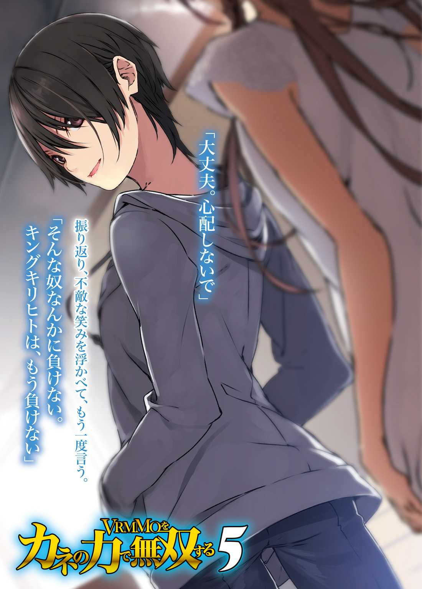
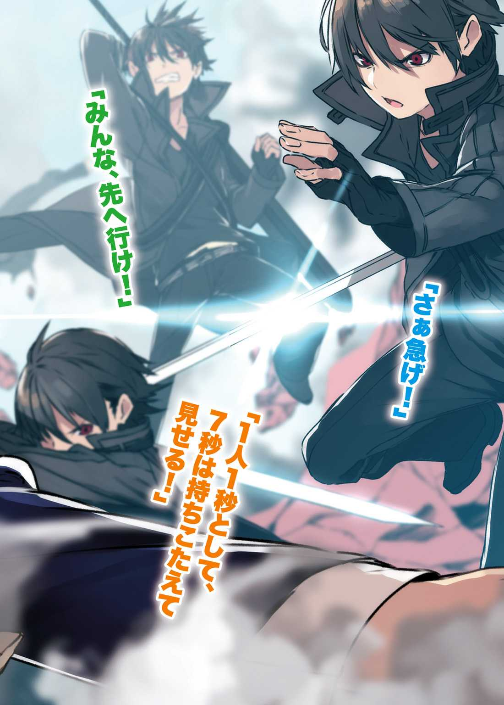
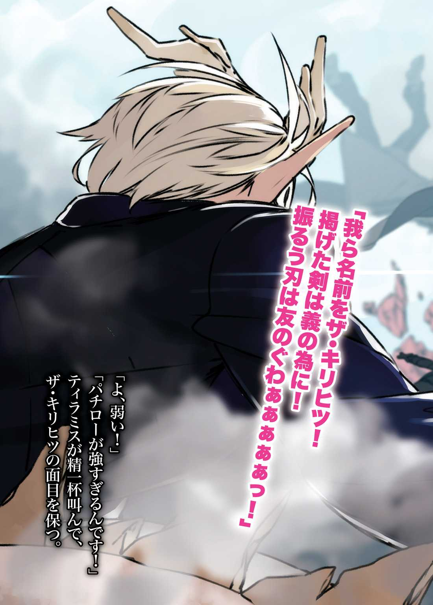
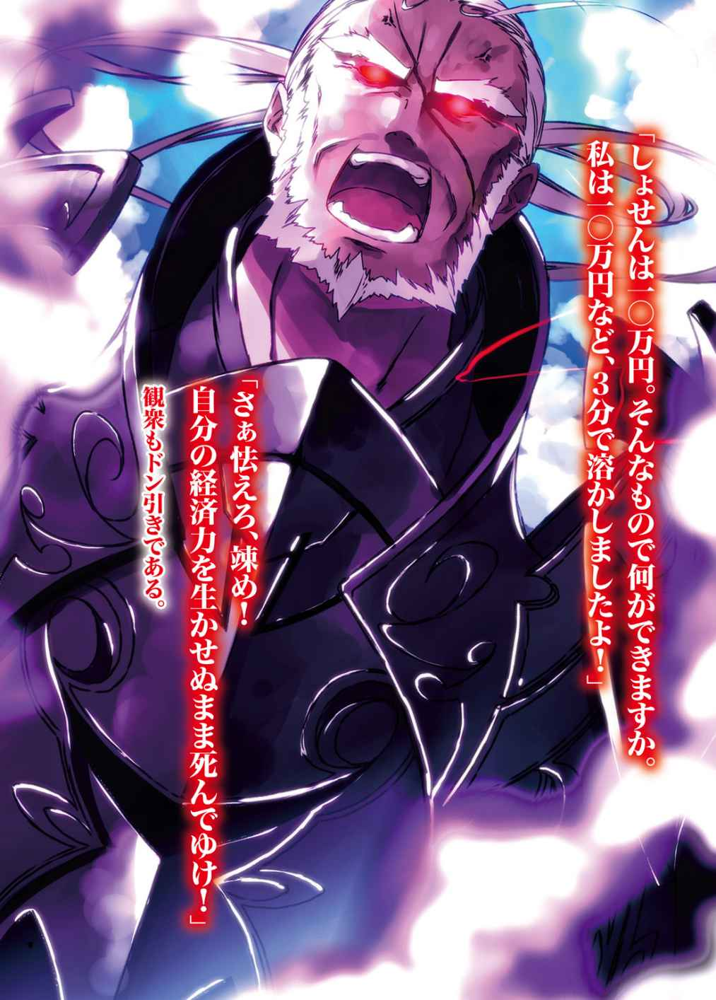
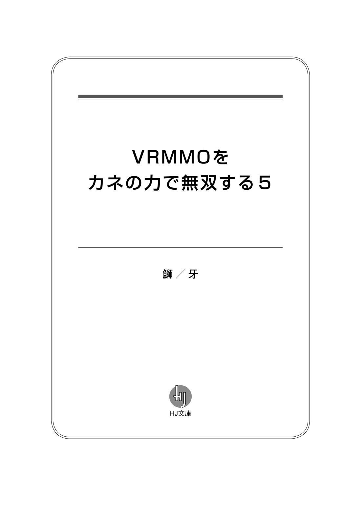
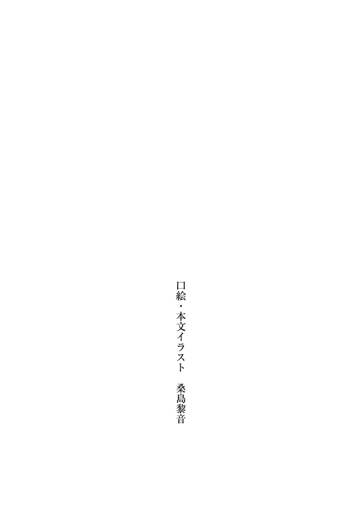
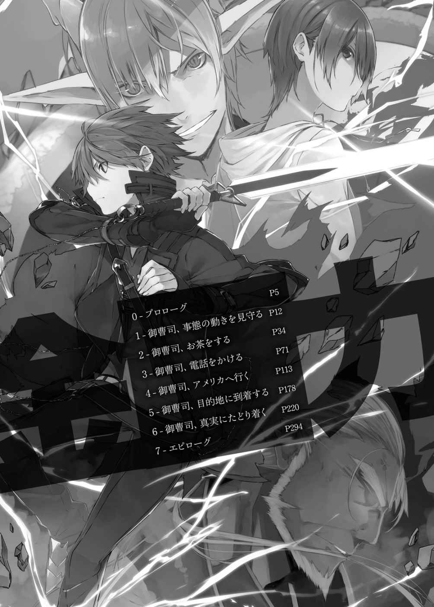
０―プロローグ
キルシュヴァッサーがログインしたのは、アイリスブランドのギルドハウス。その２階部分だ。試着室や採寸室といった、ゲームシステム上大して必要ない名目の部屋が割り当てられ、アイリスの工 房 や、顧 客 とデザインに関して打ち合わせをする応接室も２階にある。
今日は、アイリスだけではなくネムもまたこのギルドハウスに来ているはずだ。ネムの正体は、一 朗 に恋 慕 の感情を抱 いているアパレルブランドの社長芙 蓉 めぐみであり、女としての意地とデザイナーとしての矜 持 を賭 けて先日アイリスと争 った。一時は険悪とも言えた関係だが、現在２人は和解して、歳 の離 れた親友のような関係になっていると聞く。友情・努力・勝利のサイクル。実に美しい。まあアイリスは負けたわけだが。
アイリスはともかくとして、イチローやキルシュヴァッサーは久々にネムと会うことになる。はずだったのだが、彼 が白銀の老騎士 として目を覚ましたとき、隣 にあるべき主人ツワブキ・イチローの姿はなかった。
よもやイチロー様がログインに手間取るはずは、と思った直後、『ぽーん』という音がしてメッセージが着信する。外部端 末 から送られたもの。要するに、一朗が直接入力して送ったものだということがわかる。
『パスワードが書 き換 えられていてログインできない。今からシスルへ連 絡 してくる』
簡潔にまとめられているだけに、キルシュヴァッサーも事情を飲み込むのに少し時間がかかった。
「えっ、えぇ～っ......？」
口をついて出たのは、どちらかというと、扇 桜 子 としての感想である。
要するに、アカウントハック？ 一朗さまが？ オンラインゲームをプレイする上で、常に他人事だと思ってはいけないと自らを戒 めていたが、よもやご主人様である石 蕗 一朗がその被 害 に遭われるとは。いますぐログアウトしてお供するべきかと思ったが、どうせ『ナンセンス』と言われるな、と思い直した。
ログインしているからこそ確 認 できる事情もあるわけだし。
キルシュヴァッサーは、メニューウィンドウを開いてギルドメンバーの項 目 をタッチした。アカウントハックの被害に遭っているのならば、アイテムや所持通貨 が奪 われている可能性がある。ギルドメンバー同士は、そうしたステータス情報をある程度共有できるし、奪われているのであれば、周囲のプレイヤーに聞き込みをして、イチローのアバターが怪 しい動きをしていなかったか聞きだすまでだ。
ギルドリーダーであるイチローのステータス情報をチェックしようとして、キルシュヴァッサーは手を止めた。
名前表示が緑色。下に続くアイリス、キルシュヴァッサーの名前も緑色だ。これはつまり、そのギルドメンバーが現在ログイン状態にあることを示している。
イチローが、ログインしている？ あるいは、たった今、したのか？
パスワードが書き換えられたというのは嘘 で、ただ単に忘れていただけとか。いや、それであれば、昨日ログアウトしたときと同じ、自分の隣に姿を見せるはずだ。そうでないということは、自分や一朗が感知していない時間帯に、一 旦 ログインして移動したことを示している。
つまり、いまログインしているのは、石蕗一朗ではなく、
思考の最中、ウィンドウに表示された新たな変 更 メッセージが、キルシュヴァッサーの脳を揺 さぶる。
『ギルドリーダーにより、ハウス内の戦 闘 禁止規定が解除されました』
直後、階下から悲鳴が響 く。キルシュヴァッサーに考えている余 裕 はなかった。剣 と盾 を引 き抜 き、部屋を飛び出 す。手すりを掴 み、吹 き抜けからエントランスへと飛び降りた。目の前に人 影 が３人。メイジサーベルを構え、２人に対してにじり寄る１人が、あぁ、ツワブキ・イチローではないか！
「アイリス！ ネム殿 ！」
キルシュヴァッサーは少女の名前を叫 び、シールドを構えてイチローへと体当たりを敢 行 した。騎士 専用アーツ《シールドバッシュ》。ダメージ判定は発生しないが、イチローの身体が大きくバランスを崩 し、バッドステータス「めまい」を与 える。更 に《タックル》で彼の身体を床 に叩 き伏 せる。
「き、キルシュさん！」
「ご無事ですか」
片手で２人を庇 うようにしながら２歩、３歩と後退する。
「い、一朗さんどうなさってしまったんですの!? 」
アイリスはまだ驚 いた程度で冷静さを保っているが、さすがにネムの方はショックを隠 せないらしい。久々に想 い人に会えると喜び勇んでいたところに剣を向けられたのだから、まあそれもやむなしであろう。ちょっと可 哀 想 ではある。
「明らかに様子がおかしくて......わ、わたくし、一朗さんを怒 らせるようなことを......？」
「ログインしているユーザーが別人なのです。アカウントハックですよ」
おろおろするネムに、キルシュヴァッサーがきっぱりと告げる。アイリスは視線をイチローのアバターへと向けた。
「アカウントハック......？ 御 曹 司 が......？」
「あのう、最近ＳＮＳでウェブマネーを買ってくださいとか言ったりする、アレですの？」
「そうです。手段はクラッキングを用いたものから、名 簿 に記 載 された誕生日で予測を立てるといった簡単なやり方でパスワードを盗 むものまで様々ですが、れっきとしたサイバー犯罪です」
イチローのアバターは、「めまい」を振 り払 うと、ゆっくりと立ち上がって見せた。
キルシュヴァッサーはごくりと喉 を鳴らした。現在、イチローのレベルは１３０を突 破 する。リザードマン道場で鍛 えたステータスの下地や、豊富なスキル、遠近に対応した様々なアーツ。今のキルシュヴァッサーが、１人で太 刀 打 ちできる相手ではないのだ。たとえその中身が、石蕗一朗でなかったとしても。ステータスの格差はやはり大きい。
だが、幸運と言うべきなのだろうか。イチローはメイジサーベルを仕 舞 い、ギルドハウスを飛び出した。その際に見せた、口端を大きく吊 り上 げる笑 み。にやけ笑いとも称 せるそれは、普 段 のツワブキ・イチローが浮 かべるものでは、決してない。
「つまり、御曹司のニセモノ......ってこと？」
首をかしげるアイリスに、キルシュヴァッサーは頷 いた。
相手の目的が掴めない。単にアイテムや通貨を売 却 することではないのか？ ＲＭＴを目的とした違 法 業者の仕 業 ではない？ イチロー個人に対する嫌 がらせであるのか？
「追うわよ、キルシュさん」
アイリスがそんなことを言うので、キルシュヴァッサーも驚いた。
「お、追うとおっしゃいましても......。ニセイチロー様、パチロー様は強いですよ？」
「さ、さりげなく面 白 いこと言うわね......。そんなのわかってるけど、でも、放っておいたらあいつ、何するかわかんないでしょ！ 御曹司の姿で！」
「それは、そうですが......」
「わたくしも同意見ですわ。キルシュヴァッサーさん」
ネムも力強く頷く。
「わたくし達 、お力にはなれないかもしれませんけれど、それでも一朗さんの御 姿 で狼 藉 を働くところを黙 ってみてはいられませんわ」
「うぅむ、わかりました」
キルシュヴァッサーはメニューウィンドウを開き、先日開 拓 した頼 れそうな知 己 たちにメッセージを送信した。ひとまず捕 まえて止めるにしても戦力は必要だ。しばらくすれば運営からの裁きも下ると信じたいが、それまでにどれだけの時間を要するかわからない。
「ネム殿、あなたはお知り合い......。そうですな、テイカー殿たちと連絡がつくのであれば、彼らに連絡を。あとは運営にもネム殿の立場から一言つけておいていただきたい。イチロー様も現在リアルの方で問い合わせているとは思うのですが」
「わかりましたわ！」
ネムはメニューウィンドウを開き、キルシュヴァッサー同様メッセージを作成する。アイリスも、キルシュヴァッサーとは共通でない知人に連絡を取るべく、やはりメッセージウィンドウを開いていた。
３人は、ニセ御曹司・パチローのあとを追うべく、ギルドハウスを飛び出す。
「（あれ、そういえば今日、誰 かが家に来るはずだったような......）」
キルシュヴァッサーの中にいる扇桜子が、不意にそんなことを思い出したが、今はパチローだ。かぶりを振って、大通りを逃 げる不 遜 な男を追いかけることにした。
１―御曹司、事態の動きを見守る
『日 頃 から、東海道新幹線をご利用いただきまして、まことにありがとうございます。現在、豊橋駅を時刻通りに通過しております。次の、停車駅は......』
「んん～っ！」
石 蕗 明 日 葉 はシートに身体をうずめ、上 機 嫌 で伸 びをしてみせた。
「やっぱ朝練がないと、朝からエネルギーハッサンできなくて有り余っちゃうなー。ねー、桐生 。桐生はそういうのなーい？」
「ない。石蕗さんと違 ってインドア派だし」
隣に座 る桐生世 良 は、仏 頂 面 のままそう言って携 帯 ゲーム機をいじっている。いや、別に不 機 嫌 なわけではない。元からこういう奴 なのだ。感情表現が下手というか、素 直 ではないというか。ま、そこがからかい甲 斐 のある部分であり、同時に憎 たらしい部分でもあるわけだが。
夏休みを利用して、明日葉はハトコである石蕗一 朗 の家に遊びにいくことになった。これ自体は毎年恒 例 なのだが、今年はクラスメイトの世良も一 緒 だ。世良は筋金入りのゲーマーであり、一朗や明日葉がプレイしているＶＲＭＭＯ〝ナローファンタジー・オンライン〟の有名プレイヤーでもある。『一緒に行かない？』と誘 ってみたところ、『考えとく』と答え、最終的にはＯＫを出した。
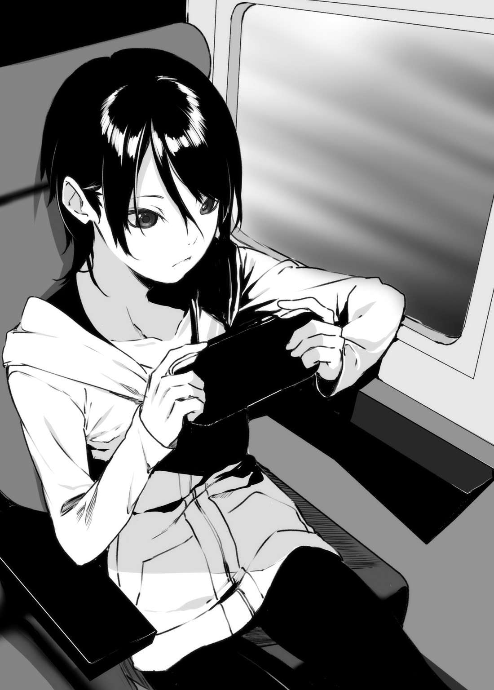
喜んでいる風でも、迷 惑 がっている風でもない世良ではあるが、明日葉は知っている。そのボストンバッグの中には、世良が愛用しているＶＲゲームハード〝ミライヴギア・エックス〟が大事にしまわれているということを。
「んっふっふー......」
「......なに？」
「べっつにい～」
ＶＲＭＭＯの楽しさというものを、明日葉も最近ようやくわかってきた。シーフ系クラス特有の《投 擲 術》と、ソフト部エースピッチャーとしての経験を活 かした必殺魔 球 《ハイドロブラスター》の存在は、最近になって周辺プレイヤーにじわじわと認 知 されつつある。ぶっちゃけそれは、かわいらしい少女アバター〝フェリシア〟の中身が、リアル女子中学生であるという下世話な内容に起因するものでもあったが、その辺に関してはまぁ知らぬが仏である。
ともあれ、明日葉としても今年のお泊 りは例年以上に楽しみにしているものがあった。世良と一朗のゲームトークを間近で見たいというのもあるし、それに混ざってみたいという思いもある。
ウキウキしている明日葉の携帯電話に、メール着信があった。
「あっ、イチ兄ぃからだ」
その言葉に、隣に座った世良がぴくりと顔を上げる。
「えーっと、どれどれ」
慣れた手つきで携帯を操作し、メールの確認をする。内容は、実に一朗らしい完結な文章であった。
『ナロファンのアカウントがハックされたので、君たちを迎 えるのが遅 れるかもしれない』
内容の意味はよくわからなかった。
が、迎えるのが遅れる、ということだけは理解できる。何か大変なことが起きたらしい。まぁとにかく、ゲームのことなら隣の奴に聞くのが一番早い。
「桐生、アカウントがハックされたって、なに？」
世良は顔をあげ、目を細めて明日葉を見た。睨 むような視線に、ちょっぴり慄 く。
「えっ、なに？」
「アカハック？ おっさんが？」
「う、うん......。なんかされたって」
その言葉を聞くなり、世良はパタンと携帯ゲーム機を閉じ、ボストンバッグの中身を漁 り始めた。中から大 仰 な箱を取り出す。ミライヴギアのパッケージだ。きちんと緩 衝 材 ごと仕舞っているあたりが、大事に使っているのだと思わせる。
ただ、何のために取り出したのかがさっぱりだ。明日葉は動 揺 した。
「えっ、なに。なに？」
「アカウントっていうのは、その人がオンライン上で使うデータの住所のこと。身分証明書みたいなもの。これの認 証 ひとつで、色んなことができるんだ。アカハックっていうのは、それを盗まれたこと」
「えっ、ど、ど、どういうこと？」
「おっさん以外の誰かが、おっさんのアバターを使ってログインできる。そのアバターを使って好き勝手やれる。運営もすぐに手を打つだろうけど」
そう言って、世良は自らの頭部にミライヴギアをすっぽりとかぶせた。
「えっ、えーっ!? なに、桐生なにする気なの!? 」
「新幹線のＷｉ‐Ｆｉを使ってログインする。東京についたら起こして」
それだけ言って、世良は腕 を組み、リクライニングを倒 した。なるべくリラックスした姿勢で身体を固定するためだ。後ろに座っていた外国人のおじさんが驚いていたので、明日葉はすみませんすみませんと頭を下げた。
世良の意識はどうやら、もう量子空間にドライブしてしまったらしい。明日葉は途 方 に暮れながらその様子を眺 め、毎年楽しみにしている車内販 売 のアイスクリームも、買うことを忘れてしまった。
インベントリから愛馬オウカオーを呼び出し、キルシュヴァッサーは跨 った。アイリスとネムが次々に飛び乗り、３人は鞍 の上で団子になった。重量制限ギリギリといったところか。アイリスとネムの装備が軽装であることが幸いした。
「キルシュさん、馬持ってたの？」
「最近購 入 したのです。ずっと欲 しかったのですよ。ミドリオウカオー号と言います」
「でも黒いですわよ？ 黒いのにミドリですの？」
「お２人にはわからないネタかもしれませんな」
オウカオーの横腹を蹴 って走らせると、メインストリートを行き交う人々が何事かと振り向 いた。
アイリスはしがみつきながらも、ウィンドウを開いて何やらを調べている。ギルドメンバーの項目。彼 女 が〝ツワブキ・イチロー〟の名前をタッチすると、彼の仔 細 なステータスや現在の状 況 が閲 覧 できた。ギルドメンバー内でどれだけの情報を共有するかは、ギルド結成時に決定できる。アイリスブランドの場合、現在位置までを特定できる、ほぼフルオープンな情報共有となっていた。
「キルシュさん、御曹司、もう街の外に出てるわ！」
「まずいですな」
キルシュヴァッサーは渋 面 を作る。
街の外、すなわちフィールド上においては、プレイヤーが問答無用で他プレイヤーに襲 いかかることが可能である。グラスゴバラ周辺を行き交うのは大 抵 が中 堅 プレイヤーだ。トッププレイヤーであるイチローのステータスで、一方的な辻 斬 りが行われかねない。
「特 殊 ステータスで飛行状態になってる。移動アイコンも点 滅 してるわね」
「イチロー様の《竜 翼 》は、知らない内にかなり高レベルになっていましたからな。オウカオーで追いつけるかどうか」
キルシュヴァッサーも《騎 乗 》スキルはかなり高いレベルまで育てているし、派生スキルの《早馬》も取得済みだ。だが、直進可能なストリートならいざ知らず、街の外は起 伏 に富んだ山間部。遮 蔽 物を無視して移動できるパチローの方が、移動には適している。
３人を乗せたオウカオーは、グラスゴバラの門をくぐりぬけ山道へ出た。右が大砂海、左がヴォルガンド火山帯やランカスティオ霊森海へ繋 がる道だ。アイリスの指示で、馬を右へ向ける。
不安なのがオウカオーの耐 久 値である。騎乗動物もアイテムである以上は耐久値が存在し、攻 撃 を受けたり走らせたりすることで減少していく。鍛冶師 や錬金術師 では耐久値を回復できない例外アイテムのひとつであり、低下した耐久値は時間経過や専用アイテムで回復させるしかないのだ。いまだ余裕があるとは言え、このままどれほどレースを続けることになるのやら。
「あっ、あのさぁキルシュさん！」
しがみつきながら、アイリスが声を揺らした。
「なんでしょう」
「本物の御曹司は何やってんの？」
「運営に連絡を取ると言っていましたな。すぐに対策措 置 が取られるはずではありますが......」
「アカウント停 めちゃうの？」
キルシュヴァッサーは頷いた。そう、どんなに対応が杜 撰 であっても、不正アクセスを確認した時点でアカウントは停められるはずだ。
「まだ、あざみさんから連絡はありませんわね......」
蹄 の音の中、辛 うじてネムの呟 きを拾える。だが、一朗とネムの双 方 から連絡があればすぐにでも気づくだろう。そろそろ運営からも、なんらかのアクションがあって良い。
不可解なのはそこである。
ニセイチローの中身、便 宜 上パチロー氏は、いったい何を目的としてアカウントハックなどをしたのか。明らかに偽 者 とわかる行 為 を働き、アイテムや通貨を移動させる様子もない。ただ闇 雲 に外へ逃げているだけだ。アカウントが停止させられれば、それまでである。
「御曹司のアカ停められちゃったら、アイリスブランドどうすれば良いのよう」
「ＭＡＲＹなりザ・キリヒツなり......一時的にでも彼らの名前を借りるしかありませんな。ギルドリーダーのアカウントが停止させられた場合、どうなるんでしょうか」
「すぐ解散にならなければ良いんだけど......あっ、パチローの移動アイコンが消えた」
「なんですと」
更に馬を走らせていくと、山道の途 中 、黒いコートに身をつつんだ戦士 の集団が視界に映った。なにやら揉 めている。他のプレイヤーも多数見受けられるが、目を凝 らせば中にパチローらしき姿も確認できた。
「噂 をすればキリヒトだわ」
「そのようで」
キリヒト（リーダー）は、どうもパチローと険悪な雰 囲 気 になっている。恐 れていたことが起きてしまったようだ。幸いと言えるのは、渦 中 にあるのが知り合いで、釈 明 の余地が十分に与えられていることだろうか。
今にも剣を抜きそうなキリヒト（リーダー）に対して、パチローの態度は超 然 としている。だが、それは本物が漂 わせるような涼 やかな雰囲気ではなく、癪 に障 るニヤケ笑いだ。『イチロー様はそんな笑い方しません！』というのがキルシュヴァッサーの本音であって、ひとまず横合いからオウカオーで蹴り付 けたい心 地 を我 慢 する。
「双方、そこまで！」
扇 桜 子 とはまるで異なる野太い声を響かせて、キルシュヴァッサーとオウカオーは両者の間に割って入った。
「キルシュさん！ ツワブキさんどうなってんだよ！」
予想された第一声が、キリヒト（リーダー）より発せられる。キルシュヴァッサーは、馬上よりぐるりと周囲を見 渡 して、状況を即 座 に把 握 した。大ダメージを負っているらしきプレイヤーが１人いる。中堅組か。
やはり辻斬りである。即 死 していないところを見るに、パチローも本気を出していなかったか、遊んでいるのか。そこに通りかかったザ・キリヒツが、義 憤 にかられ掴みかかったというところか。ここでパチローに即座に斬 りかからなかった自制心も含 め、キリヒト（リーダー）には感謝せねばなるまい。
「その方は一朗さんではありませんわ。別の方のなりすましですの」
ネムが言い、キルシュヴァッサーも馬から降りて頷いた。
「アカハックかよ！ ナロファンでもあんのか」
「知る限りでは初めての案件ですな」
一同の視線が、パチローへ鋭 く注がれた。批難がましいものの中に、若 干 の嫌 悪 感や、あるいは興味じみたものが混ざる。パチローはさして気にした様子を見せていない。面の皮の厚さだけは本人と良い勝負だろうか。
キルシュヴァッサーは、ずらりとナイトソードを抜き放ち、切っ先をパチローへ向ける。それを見てザ・キリヒツは驚いたものの、彼らもすぐに各 々 の得物であるタイアップ武器を構えた。
「パチロー様、何か弁明はございますか？ どうせ運営から停められるアカウントでしょうが、これ以上、主人の姿で狼藉を働かせるわけにはいきませんな」
「その割りに落ち着いてロールプレイしてるように見えるけど......」
「リアルの私通りに怒 りを露 にすると、皆 さん反応に困りそうですので」
「ずるいですわ。キルシュヴァッサーさん。わたくしもそんなこと言ってみたいのに......」
「そ、それは、うん......。申し訳ない......」
切っ先を向けられてなお、パチローはニヤケ笑いを浮かべたままだ。周囲に緊 張 感が走る。ちらりと目を配せれば、ダメージを負った女性プレイヤーを庇うように、彼女のパーティメンバーが立っている。喋 ってはいないが、やはり怒りを隠してはいない。
パチローが行動を起こしたのは、その直後だった。
すっと拳 を握 り、斜 面 を蹴って殴 りかかる。キルシュヴァッサーが反応できたのは僥 倖 であった。ソードを下げて盾を構える。背後のキリヒト達を守る結果に繋がった。桜の花びらが描 かれたカイトシールドごしに、衝 撃 とダメージがキルシュヴァッサーを襲う。
「くっ......！」
「キルシュさん！」
キリヒト（リーダー）が直剣を構え、パチローに斬りかかった。踏 み込んでからの逆袈裟、パチローは拳を構え、素 手 による《ウェポンガード》でそれを受け止める。《アーツキャンセル》による硬 直 時間の打ち消しから、反 撃 の火 炎 魔 法 が手のひらから放たれた。
「くそッ！」
キリヒト（リーダー）が飛びのき、攻撃をなんとかかわし切る。
他のキリヒトやプレイヤー達も武器を構え、パチローへじわりじわりとにじり寄ろうとしていた。アイリスは構えこそしないが、睨みつけて事の趨 勢 を見守り、ネムはただひたすらおろおろしている。
パチローがぴくりと動いたのを切 っ掛 けに、プレイヤー達が一 気 呵 成 にとびかかる。迂 闊 だ、とキルシュヴァッサーが叫ぼうとするが、遅 かった。パチローはその攻撃すべてを避 け、あるいは受け、一人一人に対して丁 寧 な反撃を見 舞 っていく。
戦い方には無 駄 がない。実に効率的で、しかし決して優 雅 ではない。ただ、効率的に襲い掛かる敵を処分するような、〝あそび〟の欠片 もない動きだった。
からん、という音がして、いくつかの装備品が地面に落ちる。アバターの死亡によるデスペナルティだ。キリヒト（リーダー）がぎり、と歯 噛 みをした。
「どうする、キルシュさん。奴のアカウントが停まるまで待つか？」
「下手に手を出せば被害が拡大するでしょう。ですが、見 逃 してくれる相手でもなさそうですな」
ここで逃げれば、更なる辻斬りが行われる可能性もある。生き残ったプレイヤー達と連 携 して、なんとか時間を持たせるしかない。
と、そう思っていたときである。
横合いから殴りつけるような黒い突 風 が、パチローへと突 き刺 さった。
「.........!! 」
パチローの顔から笑みが消える。咄 嗟 に身体をひねることで攻撃をかわすが、直後にひらめくダメージエフェクトは、剣がその体力を大きく削 り取 ったことを示していた。
ずざざぁっ、と、砂 埃 を巻き上げながら、少年が滑 り込んでくる。闖 入 者 は顔をあげ、その双 眸 でパチローを強く睨みつけた。
「き、キングキリヒト......!! 」
その場にいる一同が、異口同音に叫ぶ。
「キング、御曹司が......！」
「わかってる」
アイリスの言葉にそれだけ言い、キングは剣を構えなおした。滑るように駆 け、切っ先はそのまま地面を擦 りながらまたも砂埃を巻き上げる。逆袈裟に放たれた一 撃 を、パチローは辛うじて避けるが、一撃が空を切った後、キングは再度その柄 を両手で握りなおした。
「ふッ......！」
返す一撃が、再びパチローの身体を大きく抉 り取る。一同は快 哉 を叫んだ。
「あー......あたしのデザインした服......」
アイリスが二つの感情の狭 間 で揺れる、複雑な本音を吐 露 する。ここでパチローが死ねばデスペナで装備アイテムを落とすことになるわけだが、まぁ、アイリスとしては複雑なところであろう。
「アイリスさん、あれ、プラダですの？ アルマーニ？」
「参考にしたのは色々......。って、何？ 何、ネムさんその目！」
「何でもありませんわ」
「なに!? はっきり言ってよ！ そういう約束でしょ!? 」
「では、今度直接お会いした時にたっぷりと」
アマとプロの会話が交 わされる中、キングキリヒトは着実にパチローを追 い詰 めていく。キングが劇的に成長しているのか、あるいは、パチローとイチローの致 命 的 な違いがここに表れているのか、それはわからない。このまま行けば、確実にパチローを処理できる。ギルドハウスに戻 って、無力な状態でリスポンした彼を取り押 さえることができれば、
そう思っていた時だ。
パチローの姿が、すっと消えてしまった。
「んっ？」
「おや」
「あら？」
不 審 に思ったアイリスが、ウィンドウを開いて確認する。
「あ、御曹司のアカウント停まってる」
「.........」
それを聞いて、キングキリヒトは無言のまま剣を納めた。突 如 として現れ、アカウント停止までの時間を見事に稼 いでみせたヒーローに対し、周囲は惜 しみない賞賛の拍 手 を送る。ザ・キリヒツのみんなは全員感動にむせび泣いていた。キングが出るたびにいつも泣いている気がするのだが。
ともあれ、
キルシュヴァッサーはパチローがいた場所へと視線を送る。
運営の対処が済んだということなのか。どれほど手続きが面 倒 だったのかは知らないが、迅 速 な対応と言えるだろうか。まだまだ気になることはあるのだが、ここは素直に一朗の報告を待つとしよう。
人的被害も最小限に食い止められたらしい。ここはザ・キリヒツにも感謝をしておくべきだろう。まずは、襲われたらしいパーティに対して謝罪をする。
「我 が主人のアカウントが、大変な無礼をいたしました」
「あ、あぁ......いえ......盗まれたアカウントなら仕方ないですし......」
謝罪代わりに渡 せるものもポーションくらいしかないが、ひとまずこれでダメージを回復してもらう。
「で、結局あいつなんだったの？」
キングがぶっきらぼうに尋 ねてくるが、それに答えられるプレイヤーは存在しない。
「おっさんのアカウントが盗 られたって聞いたんだけど。なりすましにしては適当だし、やり方が杜撰だし。最初はレアアイテムをＲＭＴで売って儲 けようってハラかと思ったけど、そうでもなさそうだし」
「よくわかりませんな」
キルシュヴァッサーは肩 をすくめる。
「共犯者にアイテムを渡している可能性はありますが、いまいちピンときません」
「愉 快 犯 ってこと？ カラダ張りすぎだろ」
「私もそう思います」
結局、パチローの目的はわからずじまいか。彼の行為は間 違 いなく不正アクセス禁止法に抵 触 するわけで、あとは警察の仕事になるのかな、とキルシュヴァッサーは思う。愉快犯にしては少し身体を張りすぎな気もするのだが、実利行為を働いた形 跡 もないわけで。
イチローが一部、あるいは多くのプレイヤーに恨 みを買っているであろうことは否定しないが、それがアカウントハックに手を出して、逮 捕 されるリスクを犯 すほどのものであるかというと、やはり疑問である。
「なーんか釈 然 としないのよねー......」
アイリスの言葉に、キルシュヴァッサーも無言で同意を示した。
「石蕗さん、お待ちしておりました」
シスル・コーポレーションとコンタクトを取った一朗は、その足でそのまま本社へ出向くことにした。どうやら相当な修 羅 場 を迎えているようで、直接話を聞いた方が良いと判断したのだ。出 迎 えてくれた男性社員の案内に従って、一朗はオフィスを目指す。
「調べてみて、何かわかった？」
「ＩＰを辿 ってみたんですが、一度アメリカからログインされた形跡がありますね」
一朗のアカウントはプレミアムパック製であるが、このパッケージで作れるアカウントが１つ限りということであって、完成したアカウントはソフトと稼 動 環 境 さえあればどこからでもアクセスが可能だ。ユーザーＩＤとパスワードを何かの手段で取得できたとすれば、海外のどこからでもログインできる。
となると、問題は犯人がそれをどうやって知ったのかだな。
「失礼ですが、石蕗さんは他のパスワードを誰かに教えたりは？」
「ナンセンス。桜子さんにだって教えていないよ。教えて覚えられるものでもないしね。もちろん、他の管理パスワードとも違うものだ」
オフィスに入る直前、男性社員は非常に難しい顔を作って見せた。
「どうかした？」
「いえ......。石蕗さんのセキュリティに問題がなかったとすると......」
「まぁ僕 の家にクラッキングしてきた可能性もあるけど、シスルのアカウント管理システムが解 析 されているかもしれないね」
「............」
男性社員が２階、オフィスルームのドアを開ける。
中ではそれなりに修羅場を展開していた。と言っても、電話がそこかしこで鳴 り響き、クレーム対応と怒 号 が行き交い、などという騒 がしいものではない。みな、一様に黙り込んだまま、鬼 気 迫 る表情でパソコンに向かっている。静かな修羅場だ。机の上には栄養ドリンクの空 き瓶 が散乱し、彼 らの目は血走っている。
「アカウントはもう停めたの？」
「はい。ご連絡をいただいて、確認が取れてからすぐに。江 戸 川 さんにも来ていただいて、いま状況を検分しているところです」
「江戸川？」
「ああ、えっと。ちょうど大規模アップデートに備えて、サーバーの保護を強化しているところでして......」
「なるほど。新しいセキュリティを導入していたんだ。その彼は、セキュリティプログラムの開発関係者であると」
その隙 を突かれたということであれば、まったくもって運がない。
この中にあって、あざみ社長だけは他の社員となにやら真 剣 な表情で会話を続けている。いや、社員ではないな。あざみ社長が話している相手は、この真夏日にぴっちりとしたスーツを着こなしていた。やや疲 れた風 貌 の青年で、体格はひょろ長い。シスル・コーポレーションはクールビズを推進しているし、何より私服勤務がＯＫな社風だ。となると外部の人間だろう。おそらく彼が江戸川だ。
「社長、」
社員が声をかけると、あざみ社長はようやくこちらに気づき、立ち上がった。隣 の青年も、こちらを振り向く。初めて見る顔であったが、彼は一朗を見てぎょっとしたように表情をこわばらせる。
「ご足労いただいてありがとうございます、一朗さん。今回は迷惑をおかけしています」
「ん、こっちも散々迷惑をかけちゃったから、そのあたりはなんとも言えないかな」
そう言って、一朗はスーツの青年に視線を移した。
「あぁ、紹 介 しますね。こちら、株式会社システム・アイアスの江戸川さん。江戸川さん、こちら、ナローファンタジー・オンラインのユーザーで、ツワブキコンツェルン総裁石蕗明 朗 氏のご子息、石蕗一朗さんです」
「どうも。えぇと、石蕗さん。江戸川と申します」
江戸川は、機械のようにぎこちない笑 顔 で名 刺 を差し出してきた。ここは公 の場であるし、礼 儀 を重んじたほうがいいか。一朗も、普段は滅 多 に取り出さない名刺入れを取り出し、中から数枚の名刺を吟 味 する。何しろ肩 書 きは山のようにあるのだ。
受け取った名刺には、『（株）システム・アイアス技術部・営業部 江戸川土 門 』とある。古風な名前だ。
システム・アイアスはそこまで有名な企 業 ではない。一朗は名前くらい知っているが、確か本社を静 岡 に置く、小さなソフトウェア関連の会社だ。他の同業他社に埋 没 する程度の規模であって、新たなクライアントとしてシスル・コーポレーションを開拓できたのは、彼らにとってビジネスチャンスというところだろうか。その矢先にアカウントハックなのだから、幸 先 が悪くはある。
ともあれ、
一朗は、当 たり障りのない肩書きが書かれた名刺を取り出して手 渡 し、挨 拶 する。
「僕が石蕗一朗だ。よろしく」
いささか凍 りついた笑顔で応じる江戸川を見て、一朗はおおよそ、察した。
２―御曹司、お茶をする
あざみ社長の前に表示されたディスプレイでは、サーバールームにおける点検解析作業をモニタリングしていた。
もしも、一 朗 のアカウントハックが、システムサーバー自体への侵入によるものだとすれば、問題はより深刻である。一応、シスル本社においては、セキュリティ保護の観点から、プレイヤーのアクセスするアカウント情報と、アカウント作成の際に記入された個人情報は別のコンピューターで管理をしていると言う話だった。
ここでいう〝アカウント情報〟に登録されているのは、プレイに必要な情報。すなわち、キャラクターの名前やステータス情報などが大半を占 める。ポニー・エンタテイメント社のフューチャーストアからダウンロードしたアプリケーションソフト、ウェブマネーの情報などは、ミライヴギア自身に登録されている。
「メッセージ受信用のメールアドレスや、クレジットカード情報などを登録していた場合は......」
「アドレスは登録していないし、カードはコクーンのスロットに直接挿 入 して使っていたから、やっぱり情報は登録していないよ」
一朗が取り出 したクレジットカードが、嫌 味 なほどに黒く照 り映 えるのを見て、他のシスル社員たちが顔をひきつらせた。
「となると、一朗さんのアカウントから、個人情報に繋がるものが漏 れたということはありませんね」
新しいセキュリティプログラムは、江戸川の会社が製作したものだ。アップデートやサーバー強化にあわせて逐 次 適用していったということであるが、その矢先にこのような事件が起きたのであれば、彼も心中穏 やかではいられないだろう。
いや、穏やかでいられないのはあざみ社長も同じか。ナロファン開始一周年の記念セレモニー、そして大規模アップデートを間近に控 えての、これである。もしも事態が悪化したり、個人情報が漏 洩 するなどの問題にまで発展すれば、信用の失 墜 は免 れない。平静を装 ってはいるが、内面ではかなりあせっているものと思われる。
「それで、江戸川、何かわかった？」
「え、ええ、まぁ」
顔を引きつらせながら、江戸川はタブレット端 末 を操作している。
「外部から直接サーバーへ侵入した形跡はありません。ただ、先日から内外で不明なデータのやり取りがあります。データバスの増大にまぎれてかなり目立たない部分でですが......。サーバーへの負担もかかっていますね」
「先日って？」
「１カ月くらいです」
「ああ、僕がキングと戦った日か」
一朗はぽつりと漏らして、なにやら気まずい沈 黙 が周囲に落ちる。なにしろサーバーへの負担をかけた張本人が彼であるのだ。もちろん、負 荷 がかかったところでサーバーへの侵入が容易になるということではないのだが、彼が送りつけた大量のパケットにまぎれて、一部のアカウント情報が外部に漏れたということであれば、責任の一 端 も無くはない。
「他にもデータのやり取りが増大するタイミングで、幾 らか欺 瞞 された情報が外部に出ています。直接クラッキングされた形跡とかは、ないですよ、今のところ。あと、個人情報関連の記録は厳しくロックされたままですね。こっちの情報が外部に漏れた可能性はありません」
江戸川の報告を受け、あざみ社長の表情が険しくなる。
彼の言葉を正確に理解し吟味するならば、外部からの不正アクセス以外に、もうひとつ別の情報が浮 上 してくるからだ。一朗もその可能性も無くはないと考えていたし、彼らにしても意識の一端に入れて考 慮 するべき事態ではあったのだろうが、やはり『考えたくない』ことは誰 にでもある。
「つまり......弊 社 のスタッフに漏洩した人間がいると？」
「可能性の話ですが」
押し殺 した声でたずねるあざみ社長に、江戸川はやや言いにくそうに肯 定 した。
こうなると、あまり自分が立ち入るべき問題でもないな、と一朗は思った。意図的に自分のアカウント情報を不正漏洩したスタッフがこの中にいるのであれば、個人的に文句のひとつやふたつ言いたい気分ではあるが、それ以前にこれは会社の抱 えるデリケートな問題でもある。
あざみ社長は、額を押さえてなにやら真剣に考え込んでいた。クラッキングが行われたにせよ、内部から情報漏洩があったにせよ、不正アクセス禁止法に抵触する行為である。最終的には警察への通報を行う義務があるだろう。ただ、外部からの悪意と内部からの悪意では、やはり事態の重さが違 う。
社長、才女と言っても、野 々 あざみはまだ19 歳である。状況の深刻さを受け入れるに少し時間がかかりそうだ。可 哀 想 だと思わなくもないのだが、同情はナンセンスである。会社経営は、大学の仲良しサークルとは違うのだ。それは、口にしなくともわかっているだろうと信じる。
「あざみ社長、僕は席をはずしたほうが良いかい？」
「えぇ......。申し訳ありません」
「ではそうしよう」
一朗は、江 戸 川 達 に軽く手を振 ってオフィスを出た。
アカウントを停止させ、ログインできなくした以上、一朗は自身の被 害 拡大について思 い悩 む必要はもう何も無いわけである。帰 り際 にでも、ツワブキ・イチローの管理パスワードを変 更 すれば、あとはまた家に戻っていつでもログインできる。
だがあざみ社長達においては、そうもいかないだろうな。如 何 なる手段にせよ、アカウント管理のセキュリティが揺 るがされたのは事実なのだ。新興企業にとっては大きなダメージである。
「おぉっと、一朗クンじゃないか。また会ったなァ」
ぼんやりと考えていた一朗に、声をかけてくる人物がある。特 徴 的 な語 尾 の伸 ばし方には、心当たりがあった。階段を下りてくるその人 影 の方を向き、名を呼んでやる。
「音 桐 さん」
「はっはっは、聞いたよ。アカウント盗られちゃったんだって？ 大変だなァ。いや、キミはそうでもないかな？ 大変なのはシスルの方かなァ」
「そうだね。信用が落ちるかどうかの瀬 戸 際 だから」
音桐慎 也 は、ポニー・エンタテイメント社の代表取 締 役 である。ミライヴギアの発売元、ミライ・ネットワークの総元締め、加えて、一朗の父親と昔、ちょっとやりあったこともある。比 較 的 、因 縁 には事欠かない男だ。
「にしてもよく会うね。暇 なのかな」
「え、なにそれ。挑 発 ？」
「ナンセンス。純 粋 な疑問だよ」
一朗が肩をすくめて言うと、音桐はニヤニヤと笑う。
「いやァ、どうなんだろうねぇ。っていうのはさ、このタイミングだよ。外部からの不正アクセスが明るみに出れば、キミの言う通りシスルの信用は失墜するねぇ。こんな零 細 企 業 がさ、大 打 撃 だよ。ボクとしては、助けてあげたいなって思ってるんだけど、どうだろうかねぇ」
「あなたの好きにすれば良いと思うよ。僕が口を出せることではないね」
「おや、意外と冷たいんだね」
音桐の『助ける』という言葉がどのような意味を示しているか、わからぬ一朗ではない。音桐はかねてよりシスルを実質的な支配下に置くための算段を整えているのだ。この一件は、彼にとって実に良いタイミングで起きた事件である。ポニー社の企 業 体力であれば、身内の不 祥 事 を庇 い立てするくらいワケはない。その庇 護 下に入れば、シスルはこれから起こり得るであろうバッシングにも十分耐 えられるのだ。
だが、音桐は警 戒 している。ここで一朗が動くことにだ。
ツワブキコンツェルンの御曹司であり、同時に彼自身が国内随 一 の資産家でもある石 蕗 一朗にかかれば、ナロファンの運営母体であるシスルを丸ごと買い取ることも不可能ではない。そのカネとコネさえあれば、失墜したシスルの信用だってあっという間に取り戻せる。そうなってしまっては、音桐の計画は水の泡 なのだ。事実、彼は一度、秋葉原に建設する予定だった大規模なアミューズメント施 設 を一朗に買いたたかれるという手痛い経験をしている。
「ま、いいや」
音桐は言った。
「どうやらキミはプレイヤーとしての自分を尊重しているようだし、考えても杞 憂 だろう」
「そうだね。あなたが憂 慮 しているようなことは、多分起こらないよ」
「結構結構。じゃあボクからも言っとこう。今回の件、別にボクの悪 巧 みとかいうわけじゃないから、そこは勘 ぐらないでくれたまえよ。タイミングが良かったのは事実だけどね」
そう言って、音桐はひらひらと手を振り、去っていく。
関 わっていない、と言うからには、そうなのだろう。ここであえて余計な嘘 をつくような男ではない。やろうとしていることが一朗にとって愉 快 でないのは確かだが、彼は決して無能な愚 か者 ではないし、経営者としての手 腕 は高く評価できる。
そんな時、オフィスの扉 ががちゃりと開いて、先ほどの男性社員が顔を覗 かせた。
「申し訳ありません、石蕗さん。一応先に、パスワードの再設定とアカウント停止の解除を先に済ませておきたいのですが......。アイテム補 償 とかもありますし」
「ん、わかった。じゃあね」
ひとまず、この処置が済めば一件落着だろうか。あまり長居を続けても、彼らにとっての迷 惑 になるだろう。一朗はオフィスに入りながら、そんなことを考えていた。
だが、事態はこれで収束しなかったのである。
東京駅の新幹線ホームを、ヒイヒイ言いながら歩く彼 女 の姿は、大変目立った。
石蕗明 日 葉 である。が、とかく荷物が多い。
まずは右手でキャリーケースを引き、左手でボストンバッグを持つ。そこまでは、まあ傍 から見ても疑問を抱 くようなことではないのだが、彼女は更 に、その背中に桐生 世 良 を背 負 っていたのである。世良は頭にミライヴギアを装着したままだった。
「ん......」
もぞ、と背中で世良が動いたので、明日葉はそのまま投げ飛ばした。
「どっせーい!! 」
「うわっ」
床 を転がりながら、声をあげる世良。ミライヴギアを外して、明日葉を見上げる。
「あれ、石蕗さん」
「あれ、じゃないよ！ もう！ 東京ついちゃったよ！」
「起こしてって言ったじゃん」
「起こしても起きなかったのがつまり桐生なの！ もうっ！ まったくもうっ！」
衆目もはばからず、明日葉は世良にどなりつける。
一朗のアカウントハックの件を知り、新幹線の中からログインした世良であるが、結局明日葉が必死に起こそうとしたところでまるで反応を見せなかった。外部から強制的に電源を落としたりすると、不正停止としてデータが飛ぶおそれがあったので、出来なかったのである。なお、その理 屈 に関して明日葉は世良から『量子情報は電子情報に比べて脆 弱 で壊 れやすいから』と聞いていたが、意味はまったく理解できていない。
ともあれ、
「で、どうだったの？」
「なにが？」
「イチ兄ぃのアカウント」
「あー」
世良はミライヴギアを箱にしまい、ボストンバッグの中に戻してから立ち上がる。
「一応、停められたみたい」
「とめられた？」
「アカウント停止ってこと。アカウントを停めれば、そのプレイヤー情報を使ってのアクセスはできないから、もうおっさんのアカウントを使って第三者がログインすることはないよ」
なるほど、と納 得 しかけたが、明日葉はそのまま首を傾 げる。
「でもそれじゃあ、イチ兄ぃもログインできないってこと？」
「パスワードを変えれば良いよ。普 通 だったら、アカウント情報の確 認 手続きとかに時間かかるけど、おっさんの場合はシスルの人と繋 がりがあるし、すぐに復帰するんじゃないかな」
「そっかそっか」
明日葉は頷 いた。どうやら、事件は収束したということらしい。のっけからとんでもない事件を聞かされて驚 いたが、解決したならそれでいい。あとはたっぷり、お泊 りを楽しめるというわけだ。
「じゃ、イチ兄ぃの家いこっか！」
「どこだっけ」
「三 軒 茶 屋 ！ あのねー、まず東京メトロの丸ノ内線で大手町まで行ってねー」
２人は新幹線ホームから降りて、そのまま地下鉄へと向かった。
江戸川土門がシスル・コーポレーションの本社ビルを出た時には、午後２時をまわっていた。作業にひと段落ついて、昼休みを許された形だ。
仕事だからとはいえ、東京に来てから数日。ビジネスホテルから通 い詰めの生活はかなり辛 い。故郷の茶畑が懐 かしかった。本来であれば、セキュリティプログラムの設定や、先方の要求への対応で深夜までこもりきりなのだが、今日は早く帰るよう言われてしまったのだ。たまには骨休めができる安心感と、早くセキュリティを完全にしたいというプロ意識の葛 藤 もある。現段階でもファイアウォールは機能するし、多くの管理情報は保護されるはずだが、やはりまだ不安はあった。
運営の内部に情報をリークする人物がいたとなれば、それだけで大問題になる。取引先としてだけではなく、ユーザーの１人としても不安を隠 せない。
いくら悩んでも仕方ないこととは言え、だ。
江戸川は溜 め息 を漏らした。
東京の夏は暑いな。もちろん静岡だって暑いのだが、なまじヒートアイランド現象などという言葉のせいか、余計に気温を高く感じてしまう。
ひとまず、あまり気に病 むのはよそう。シスル・コーポレーションの今後の対策方針が早い段階で打ち出されることを、祈 るしかないだろう。強 いていえば社長の若さが少し不安ではあったが、彼女だって自分よりは相当優 秀 な人間のはずだ。
昼食か。どこで食べたものかな。
古書店の立ち並ぶ神保町を、１人考えながら歩く。野々あざみ社長はカレー店巡 りが趣 味 だと聞いていたが、おすすめの店でも聞いておけば良かった。
不意に、駐 車 場 から出てきた一台のスーパーカーが、彼の行く手をさえぎった。目の覚めるような青色である。左右のドアが、ねじを巻くような特徴的な開き方をして、左側の運転席からひょっこりと男が顔を覗かせた。
「やぁ、乗ってかない？」
ナンパかよ。江戸川の顔が引きつる。
そう、言うまでもなく我らが御曹司、石蕗一朗である。ゲーム内とまったく変わらない顔立ちに、涼 やかな微 笑 を浮 かべて江戸川を待ち構えていたのだ。
確信があるわけではないが、しかし疑う余地もないことである。彼は、アイリスブランドのギルドリーダー、ツワブキ・イチローのプレイヤーだ。本日アカウントハックの被害に遭ったのは、目の前のブルジョワジーな青年である。
乗りたくねぇ。
心底そう思う江戸川に対し、一朗は涼やかな笑 みを浮かべてこう言った。
「ここで会ったのも縁 だろう。オフ会っていうのも悪くないと思うんだけど、エド」
江戸川の表情がひきつった。
「気づいてたんですか......」
「僕の顔を知っているようだし、歩き方の癖 が同じだったから。で、どうする？」
ここで誘 いを拒 んだら負けだ。心の底から一朗のことを嫌 っている江戸川は、そう思って車の右側に回りこむ。左ハンドル。外国車か。見たことも無いデザインだし、そうとう高い車なのだろうな、と思う。
「失礼します」
「ん、どうぞ」
江戸川土門はナローファンタジー・オンラインにおいて機械人種の鍛冶師 エドワードを演じる男である。イチローとエドワードの確 執 においては、これまた説明するまでもあるまい。江戸川の表情が引きつった背景には、そうした事情があった。
江戸川が助手席に乗り込むと、スーパーカーの扉がくるりと閉まった。運転席に並ぶ計器は、なにやら未来的な雰 囲 気 がある。ロボットアニメや戦 闘 機 が好きな江戸川としては、少しだけ心躍 るものを感じた。
一朗が車を走らせる。
「お昼？」
「はい。昼休 憩 は一時間です」
「そう。じゃあ、軽くお茶でも飲めるところへ行こうか」
軽く、って、本当に軽くなんだろうな。物理的な意味ではなく、経済的な意味で。
江戸川は改めて一朗を見る。あのドラゴネット、見ないフェイスパーツであるとは思ったが、やはり完全自作グラフィックだったのか。しかも、本物の自分そっくりの。こういうのもナルシストと言うのかはわからないが、召 し物 に漂 う高級感までアバターと同じである。
なんとなく金持ち特有の嫌味な雰囲気は感じていたのだが、かのツワブキコンツェルンの御曹司であるとは思わなかった。なんでそんな男がＶＲＭＭＯに手を出しているのか、親の仕事は手伝っていないのか。わからないことだらけである。
いったいどこに向かっているのか江戸川には見当もつかなかったが、しばらく無言が続くと、狭 苦 しい車内の空気がどうにも耐えられなくなってくる。
「エドの名前の由来って、本名だったんだね」
驚いたことに、その沈黙を打ち破 ったのは一朗の方からであった。
「アニメだって聞いてたんだけど。カウボーイビバップ」
「知ってるんですか？」
「キルシュヴァッサー卿 がＤＶＤを持っていたので、全話見せられた。良いアニメだね」
いけ好かない男だというのに、贔 屓 のアニメを褒 められただけでちょっと嬉 しくなってしまう。江戸川の会社にオタクは多いが、八〇年代後半から九〇年代のアニメを語れる同 僚 はほとんどいないのだ。即 座 にかぶりを振って、そんな自分を戒 める。
「本名もありますけど、一番の由来はラディカルエドワードですよ」
「システムエンジニアになったのも？」
「昔はハッカーになりたかったんですけどね」
アニメキャラに影 響 されてハッカーを目指したなど、恥 ずかしいにも程がある。結局、プログラムの勉強をして、ハッカーにならずにそのままプログラマになって、会社の人材難からシステムエンジニアにさせられた。慣れないことを押し付 けられて散々苦労して、それにもまぁ、ようやく慣れた。
「親方から、最近君が忙 しいとは聞いていたけど、まさかナロファンのセキュリティの仕事をしているとは思わなかったよ」
「取引がはじまったのは数 ヶ 月 前からです。８月の大規模アップデートに備えて、いろいろと」
当事から江戸川 はヘビーユーザーだったので、社長からこの発表を受けたときにはかなり驚かされた。まさかそのまま、自分が担当者になるとも思っていなかったのだが。おかげでいつも以上にやりがいは感じたし、力も入った。
その矢先に......いやいや、これではまた思考がループしてしまうな。
「シスル・コーポレーションは、これからどうするんでしょうか」
ぽつりとそんなことを漏らしたが、一朗は涼やかな表情で前を見ている。
「ん、どうだろうね。事故にせよ事件にせよ、起きてしまった以上は企業として誠意ある対応をするしかない。内部の問題だと少し厄 介 だけど、今までに同業種でそうした事例が無かったわけではないし、企業としての存続が危 ぶまれるほどではないと思う。ＶＲ技術関連は伸び代のある産業だから、そうやすやすと潰 しにはこないだろうね」
そこで彼は『ただ』と言葉を区切った。
「ただ？」
「シスルは小さいし、あざみ社長は若い。マスコミからのバッシングやら、企業責任の追 及 やら、展開次 第 では簡単に力を失っちゃうだろうし、そこを突 いて大企業が乗っ取りにくる可能性はあるかな。ナロファンは金の成る木だよ」
「金を成らせているのは石蕗さんでは？」
「まぁ僕も貢 献 はしているけど、そういった意味じゃなくてさ」
ＶＲＭＭＯという生まれたてのビジネスモデルが、今後どう経済を動かしていくのか、という話になってしまっては、江戸川も完全に門外漢だ。
「あざみ社長は、経済界へのアピールのために、ユーザーとしての僕を利用したがっていたけど、それだけシスルが企業体として弱いということでもある。でもちょっとプレイして思ったけど、ウェブ上に構築する仮想現実世界の潜 在 的 な経済価値は彼女が思っている以上だよ。ナロファンがそれを生かしきれているとは思わないけどさ、気づいている一部の大企業は、たぶんシスルのノウハウをほしがっている」
「ツワブキコンツェルンもですか？」
「さぁ？ 僕は父の仕事は手伝っていないよ。自分のお金くらい自分で稼 ぐし、ナロファンを続けているのも単純に面 白 かったからだ」
そうは言っているが、こうした話をするにつけ、石蕗一朗は経済界で生きている人間なのだなと江戸川は思う。
シスル・コーポレーション程度の企業規模であれば、ちょっとした外圧も致 命 傷 になりかねない。そうした中にあって、大企業がシスルの株を買 い占めるなどの動きを見せれば、彼らも実質的に、巨 大 なホールディングスの中に取り込まれてしまうことになる。と、一朗は自らの懸 念 を説明した。
「隙を見せないためにも、あざみ社長はしっかりとした対応をするべきだとは思うけどね」
少しシビアな話をする。プレイヤーとしての視点で見た場合、その結果セキュリティが強化されたり、ややピーキーなゲームバランスが是 正 されたりするのであれば、ナローファンタジー・オンラインの実質的な運営体が大企業に移ったところで不満もないというのが実情だ。ナロファンがここまで人気を伸ばしたのは、仮想現実技術を前面に押 し出し構築された緻 密 な世界観の影響であって、ゲームとしてはまだまだ調整の余地があるだろう。そこにメスが入るのであれば、ユーザーとしては願ったりだ。
しかしそれでも、話の流れでシスルの買収を防ぐ手立てを考えていた江戸川は、ふとこんなことを口にした。
「石蕗さんがシスルの株主になることはできないんですか？」
「できるよ。やろうと思えば簡単なことかな」
あっさりと言う男である。
「もし、大企業の参入でナロファンのゲーム性が損 なわれたりする可能性があるのであれば、知人や友人、まぁこの中には君も含 むけど、彼らの楽しめる場所を守るために、シスル本社をまるごと買い占めるなんてことも、考えなくはない」
そう言って、一朗はハンドルを切った。青のケーニッグセグ・アゲーラが駐車場に入る。
「でもその場合、僕はもう二度とログインしなくなると思う。プレイヤーじゃなくて、経営者になっちゃうからね。なるべくカスタマーとしての地位を維 持 したいっていうのが本音かな。着いたよ」
「あ、どうも......」
たどり着いたのは、清潔感漂う白 塗 りの小さなビルだった。
どうやら本当に〝軽く〟食べられる店らしい。如何にもカネを持っていそうな石蕗一朗に連れていかれるのだから、多少は良い値段のするところに違いないと腹をくくっていたのだが。もちろん、この男に一円たりとも奢 らせるつもりはない。
「......いらっしゃいませ」
２階の小さなカレー屋に入ると、厨 房 に立っていたマスターが、渋 みのあるバリトンボイスでそう出迎えた。一朗は躊 躇 もなくカウンター席に腰 かけ、レモン水を持ってきたマスターにこう告げる。
「マスター、このお店で一番美 味 しいカレーを、ふたつ」
「......かしこまりました」
浅黒い肌 のマスターは恭 しく一礼し、厨房の奥 へと引っ込んでいく。その様子を見ながら、江戸川は首を傾げて一朗の隣に座 った。
「なんですか？ 今の注文」
「ああ言わないと一番美味しいカレーが出て来ないんだ」
一朗は何でもないかのように、冷を一 杯 呷 る。飲み方ひとつとっても上品だった。
「あの、ここまで来ていうのもなんですけど......何か自分に用ですか？」
「いや、別に？」
一朗はグラスをカウンターに置いてそう言った。
「突 発 的 なオフ会だと思ってくれれば良いよ。君がどうかはともかくとして、僕が君のことを嫌いじゃないのは、前に言ったとおりじゃないか」
あのときははっきりと、『俺 はお前が嫌いだ』と叫 んだはずなのだが、その相手を突 発 オフに誘うとはなかなかいい度胸をしている。
とは言え、あのときの自分は冷静さを欠いていた自覚があるし、ゲーム内のいざこざを現実世界にまで持ち出そうとは思わない。目の前の男は、リアルでもネットでもまるで態度に変化がなく、それはそれで驚きなのだが。少なくともゲーム内では不 遜 にきけていたであろう口も、リアルな大金持ちを前にしては萎 縮 してしまう。
「さっきの話の続きですけど、」
ならば、遠 慮 なく雑談をすればいいか、と、割り切ることにした。
「石蕗さんは、自分でＶＲＭＭＯを作ったり、管理したいとまでは思わないんですね」
「実は１回作ったんだけどね」
「は？」
一朗は窓の外を眺 めていた。
「僕 、ランカスティオ霊森海の雰囲気が好きでね。ああいった仮想世界を作れないかと思ったんだ。もう一度、あざみ社長の論文を読んだり、研究所を取り寄せたり。とりあえずサーバーマシンとスパコンを買ってさ、ゲームがてらにぽちぽち作ってみたんだよ」
こいつ、何を言っているんだ。江戸川は開いた口が塞 がらない。
「何度か行ったアマゾン奥 地 を再現してみたんだ。もちろんグラフィックも自作でね。完成したときは心躍ったけど、ミライヴギアを繋げていざドライブしてみると、そんなに楽しくなかった」
「は、はぁ......」
「結局、僕が端 から端まで知っている世界なんてナンセンスだなって思った」
それ、全部実話なのだろうか。にわかには信じがたい話である。どれほどの規模の世界を構築したかは知らないが、バーチャル・リアリティ技術で細部まで再現したアマゾン奥地の環 境 など、１人で造れるものなのだろうか。おそらく製作期間は１ヶ月 もないのである。さすがに嘘だろ、という気持ちと、それが事実だったときの衝 撃 の度合いを考えて、それ以上突っ込む気は失 せた。
「自分のために誂 えられた世界ほど退 屈 なものはないよ」
「......その発言は贅 沢 ですよ」
その言葉に、一朗は肩 をすくめた。
「贅沢かなぁ」
「贅沢です。この世界が全部石蕗さんのために誂えられているとは言いませんけど、神様は結構な割合であなたを贔屓してるんじゃないですかね」
「なるほど。ある程度自分のために作られた世界だからこそ言える贅沢か。心に留 めておくよ」
それが、一朗が生まれてこの方吐 いた台詞 の中でも、ベスト３に入るほど殊 勝 なものであったことを、江戸川は知らない。
「じゃあエドの話でも聞こうか。システム・アイアスはセキュリティソフトの会社だっけ」
「話すことなんてあまりないですよ」
男２人、カレー屋に入ってするような話でもないな、と思う。
「一応、そういうことになってます。ソフトウェア関連はもっと手広くやってますけど。今回シスルに提供したのは、弊社が開発している〝アイアス・システム〟の最新バージョンです」
「アプリケーションゲートウェイ型のファイアウォールなんだっけ」
「よくご存知ですね。通信の代 替 制 御 を行うのはレイヤ７ですけど、それぞれのプロトコル階層にダイナミックなパケットフィルタを設定しています」
そもそも商品名のアイアス・システムが社名の由来であるし、そのアイアス・システム自体も、７つのプロトコル階層で防 護 壁 を敷 く基本設計からイメージしてつけられた名前だ。トロイア戦争において活 躍 した英 雄 アイアスの盾 。より正確を期するならば、それをモチーフにしたゲームにおける、７層のシールドと、ファイアウォールの設計思想が合 致 していたために名づけられた。名前をつけたのは社長だ。
「......お待たせしました」
厨房の奥から、マスターが２皿のカレーを運んでくる。額には玉のような汗 が貼 り付いていた。激しい戦いを潜 り抜 けた男の顔が、そこにあった。
カウンターに置かれるカレー皿からは、この世のものとはとうてい認 識 しがたいスパイスの調和が、芳 香 となって漂ってくる。それは江戸川のすきっ腹を強く刺 激 した。
味の方も期待できそうだ、と、カレースプーンを取った彼 の出鼻を、甲 高 い電子音がくじく。気まずい気持ちになって、江戸川は懐 から携 帯 電話を取り出した。着信だ。いつもの癖で、一朗に頭を下げてしまう。
「失礼」
「どうぞ」
着信通知に『シスル・コーポレーション』とあった。嫌 な予感に顔をしかめ、ひとまず江戸川は電話を取るために席を立った。
武 闘 都市デルヴェ。
ナローファンタジー・オンラインにおける攻 略 の最前線だ。多くのトッププレイヤーが集 い、その本 拠 地 をここに移している。
ここでも、降 って湧 いた白昼のアカウントハック事件は話題となっていた。なにしろ被 害 者 があのツワブキ・イチローである。誰も彼も口が軽かったわけではないが、キルシュヴァッサーやアイリスが拡散した情報により、今や最前線の誰もがそれを知るところとなっていた。
「それで、顛 末 としてはどうなったんだ」
赤き斜陽 の騎士団 リーダーであるストロガノフが、そう尋 ねる。
対するのは双頭の 白蛇 リーダーであるマツナガ。切れ長の眼を持つ美形のエルフは、赤髪 の巨 漢 ストロガノフと並べると非常に絵になる。更にここには、珍 しいことにアキハバラ鍛 造 組の親方までが顔を出していた。
「どうもこうもないさ」
マツナガが肩をすくめる。
「運営がアカウント停 めておしまい。あっさりしたもんさ。ま、話としては盛り上がりにかけるけど、運営の対応が早いのは良いことだよ」
彼の口調は平 坦 さの中にどこか不満が滲 んでいる。ゲーム内の出来事を面白おかしくまとめ、掲 示 板 やＳＮＳを煽 ってその反応を記事にするマツナガとしては、今回の事件にももう少し〝面白み〟が欲 しかったといったところだろう。
「しかし、あの兄ちゃんがアカウントハックね」
髭 面 のドワーフが、空を仰 ぐようにしながらつぶやく。
「なんだ、納得がいかんのかアホの坂田」
ストロガノフはそう言って、視線を親方に向けた。
「別に。あの兄ちゃん、セキュリティ意識が甘 かったとは思えないから、不思議なもんだなって話だよ。なぁマツナガ。おめぇもそこは同感だろ」
「まぁ、ねぇ」
騎士団のギルドハウス前で頭を突き合 わせる三者の会話は、完全に井 戸 端 会議の様相を呈 している。
「これはソースのない情報だけどね。シスルの本社サーバーにハッキングがあったっていう話だよ。愉快なことじゃないね」
「それ、事実だったら結構な大 事 じゃないのか？」
「うん。大事さ。だから、この話を下手にまとめると、俺、運営から睨 まれるかもしれないんだよねぇ」
それもまた、マツナガにとっては不満の原因であるらしい。
せめて、ツワブキ・イチローのユーザーアカウントを乗っ取った犯人が、もうちょっと派手なことをやらかしてくれたのなら、またいろいろとまとめようはあるのだが。そんなことを考えている顔だ。
３人は腕 を組んで『うーん』と唸 った。
このように、アカウントハック事件は様々な方面に爪 痕 を遺 している形だ。と言っても、うわさ好きなＶＲＭＭＯの住人達である。１日２日もすれば、また別の話題が彼らの間を席 巻 することになるだろう。と、そう思われた。
「やっほーう、みんなーぁ、元気かにゃー？」
手をぶんぶんと振りながら、１人の少女が歩いてくる。その後ろには、２、３人のプレイヤーがついてきていた。
ナロファンきっての姫 プレイヤー、あめしょー様のお通りである。トップのガチ攻略層にも、彼女に入れ込む変わり者はいたりして、あめしょーが道を歩くだけで野太い歓 声 が沸きあがる。
『うおおおお、あめしょおおおおおお!! 』
『俺だー！ こっち向いてくれー!! 』
『しょうがないにゃあって言ってくれー!! 』
「えへへ......、しょうがないにゃあ......」
あめしょーは、照れている仕草を見せながら、計算しつくされた絶 妙 な角度で、ファンに向けて手を振る。ストロガノフ達はよく知っていた。あめしょーは、自分が一番可愛 く見えるポイントを熟知している。男の庇護欲をそそる絶妙な身長、体格、顔立ちをすべて計算した上で、アバターを作成している。恐 ろしい娘 なのだ。
ま、あめしょーは良い。
その後ろにいる３人のプレイヤーを、いずれもストロガノフは知っていた。
「珍しい取り合わせだな。パーティでも組んでいたのか？」
「んー、まぁ、そんなとこかにゃー」
そう言って、あめしょーは後ろを振り返 る。
獣人のテイカー。人間のソーサレス。そしてハイエルフの苫 小 牧 。
テイカーとソーサレスは、ほんの数日前までゲーム内をにぎわせていた、ネムというプレイヤーの傭 兵 だ。が、その一件は現在綺 麗 さっぱり解決し、彼らは傭 兵 契 約 を円満な形で打ち切られている。今の２人は、ナロファンを楽しむただのプレイヤーでしかない。
苫小牧は、以前、グランドクエストの際にマツナガが招集したトッププレイヤーの１人だ。本 拠 をひと気のない〝死の山脈〟に構え、滅 多 に出て来ないという変わり者である。ゲーム開始以来、一度もログアウトしたことがないという与 太 話が、彼の神秘性に拍 車 をかけていた。なお、理知的な外見をしているものの、興奮するとメガネをかなぐり捨てて奇 声 をあげるという悪 癖 がある。
「どうやら、アカウントハック事件について話し合っていたようね」
ソーサレスが、日 傘 をくるくると回しながら言った。
「なんだ、もう知っていたのか」
「広いゲームと言っても情報はすぐに出回る。まあ、俺たちは元リーダーから聞いたようなものだが」
新調したばかりのボロ布に身を包 み、テイカーは小さく肩をすくめた。
「厄介なことになっていますね。一周年記念の大規模アップデートを目前に控 えて......」
「ああ、運営にケチがついてサービス停止なんてことになるとなぁ......」
苫小牧の言葉に、ストロガノフはしみじみと答えて頷く。
実力者たちによる謎 の井戸端会議は更に規模を増し、大通りを行く数少ないプレイヤー達 からは奇 異 の視線を向けられはじめていた。
そんなおり、武闘都市デルヴェの空に、異変が生じる。
「お、おい、あれはなんだ」
最初に気付いたのは、道行く名もないプレイヤーの１人であった。一同はその声に気付き、空を見上げる。そして目を見開いた。
あれほどまでに晴れあがっていた空に、にわかに暗雲が立ち込める。天候エフェクトの発生としてはあまりにも急だ。そもそも大砂海にほど近いこのデルヴェでは、滅多なことでは雲ができないし、雨も降らない。
次の瞬 間 、
ぴしゃあん！ と、雷 鳴 が轟 き、赤黒い稲 妻 のエフェクトが空を焦 がした。
それだけではない。禍 々 しいまでの稲妻は大地にまで到 達 し、明確な質量をもって砂 埃 を巻き上げる。それを見て、誰 もが『あっ』と声を漏 らした。飄 々 としているのは、あめしょーただ１人だ。
「ツワブキだと!? 」
一同を代表して、ストロガノフがまず驚 嘆 の声をあげる。
そう、そこに立っていたのは、渦 中 のツワブキ・イチローであった。アカウントが停止されたはずなのに、なぜかそこにいる。一同はごくりと唾 を飲み込んだ。
「どういうことだ？ もうアカが復活したのか？」
「だとしても、あの登場の仕方はあまりにも変でしょ」
「そうか？ 派手好きなあいつらしいとも思うんだが......」
言いつつ、しかしアレはツワブキではない、とストロガノフは心の中で断じていた。なんというか、笑い方が違 う。イヤミな間での涼やかな笑みではない。べったりと貼り付くような、粘 り気 の強い、そう、まるで......
「まるでマツナガみたいな笑い方だにゃあ」
「ちょっと」
マツナガが即座に突っ込みを入れる。
「俺、あんな笑い方したりしませんよ」
「しているわ」
ソーサレスがさらりと言ったものだから、マツナガは完全に真顔になる。女性２人に顔面のことを指 摘 され、いたく傷ついた様子だった。
ともあれ、事実マツナガのような笑い方だった。あのニヤケ笑いは、ツワブキ・イチローのものでは断じてない。
「あれが噂 のパチローさんか」
ふん、と鼻を鳴らし、テイカーが一歩、前に出た。
逸 りすぎだとまでは、思わない。同じプレイヤーであるかどうかははっきりしないものの、パチローに辻 斬 りの前科があることは確認済みなのだ。武闘都市は、シティフィールドではあるが、戦 闘 禁止規定が存在しない。ここで彼が暴れようとすれば、暴れられる。ゲーム内最強に上 り詰 めた、あの化け物じみたステータスを使って。
ストロガノフは即座にメニューウィンドウを開き、手すきの騎士団メンバーに招集をかける。そうしている間にも、テイカーとパチローが、距 離 を徐 々 に詰めつつあった。
「危険よ、テイカー」
緊 張 に充 ちた声で、ソーサレスが声をかける。
「今 更 死ぬのが怖 いとは思わねぇな」
「ゲームの中で言ってもカッコ良さ半分だわ」
テイカーはその言葉にもさして傷ついた様子を見せず、とうとうパチローと極 めて近い距離で相対した。カギ爪 のような人差し指を突き付け、ばばっ、とマントを翻 しながら、このように告げる。
「俺は〝テイカー〟。貴様の〝業〟をへぶっ」
直後、パチローの《竜 爪 》が、見事にテイカーのどてっぱらをぶち抜いていた。数日前にデスペナでロストし、新調したばかりのボロ布が大地にはらりと落ちる。テイカーは光の粒 子 となって消 滅 した。死んだのだ。
「なんだったんだアイツは......」
ストロガノフがぽつりと呟 いたのを皮切りに、他のメンバーも感想を口にする。
「キメ台詞の途中で攻 撃 するたぁ、なんて非 道 い野 郎 だ」
「悪役の風上にも置けませんねぇ」
「あーあ、テイカー大 丈 夫 かにゃあ......」
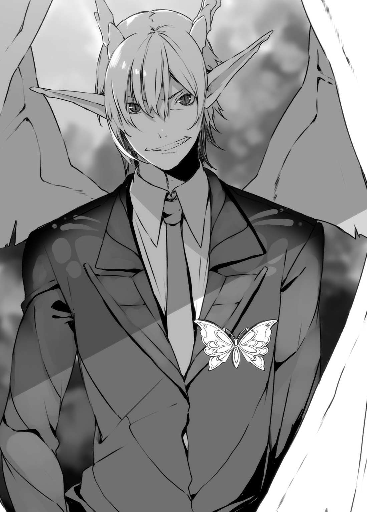
「そうね。彼、メンタル弱いから」
「では、次は私が、彼の仇 を討 ちましょう」
苫小牧が冷静に言い放ち、自らの眼鏡を外し、放 り出 す。他の誰かが制止するよりも早く、眼鏡が武闘都市デルヴェの大地へと落下し、そしてそれを合図として苫小牧の身体が駆 けだした。
「けきゃァアァァアァアアァッ!! 」
怪 鳥 音も高らかに。苫小牧の跳 び蹴 りがパチローへと襲 い掛 かる。パチローは微 動 だにせず、その一 撃 を《ウェポンガード》で防いでみせた。
「ほォウオオオオオッ！ ほァたッ！ ほァたッ！ ほゥあたァァァッ!! 」
鞭 のようにしなる苫小牧の両 腕 、両足が、パチローの全身を叩 く。しかしそれすらも、パチローは完全に見切り、すべてを《ウェポンガード》で的確に弾 いたのである。パチローは、拳 を握 り、一撃。狂 ったように鞭打を繰 り出す苫小牧の鳩尾 を殴 りつけた。
「グワアアァァァァ―――――ッ!! 」
おおよそ理知的とは言い難 い断 末 魔 をあげ、ゲーム開始以来一度もログアウトしたことがない伝説の男は沈 黙 した。騎士団のギルドハウスの壁 に叩きつけられ、光の粒子と化して、やはり消滅していく。
「よ、弱い......！」
「いや、奴 が強すぎるんですよ」
ストロガノフの唸り声 に、マツナガが冷静に突っ込む。
「ひとまず動きを止めます。ストロガノフ、あんたのとこの部隊はもうすぐつくんだろう？」
「あ、ああ」
「じゃあ後は頼 みますよっと」
マツナガがぱちんと指を鳴らすと、砂埃を巻き上げてメインストリートの大地がはじけた。両手を広げた複数の影 が宙へと踊 り、小 太 刀 を片手に着地する。花 柄 の忍 装束を身にまとい、般 若 面をつけた男たちの出現を見て、野 次 馬 が唸った。
「双頭の 白蛇 のゆるふわ忍者軍団!! 」
「実在していたのか......!! 」
忍者軍団の存在は既 に多くのプレイヤーが知るところとなっているが、とりあえず誰かがこう叫ぶことは通例になっている。ゆるふわな忍装束は、ネムによるデザインのものだ。有名アパレルデザイナーも、忍者のファッションに関しては疎 かったと見える。
パチローはにやりと笑って忍者軍団の中に突っ込んでいくが、マツナガが用意した戦力はそれだけではなかった。更 に彼が指を鳴らすと、周囲に並ぶ建物の屋上に、複数の男たちが姿を見せた。こちらも、双頭の 白蛇 が誇 る精 鋭 、ボウガンによる射 撃 部隊だ。
「あいつ、避 け自体はそう得意ではない。これだけの射撃部隊なら、《ウェポンガード》でだって防ぎきれませんよ！」
「マツナガ、それフラグ」
あめしょーの呟きは、ボウガン部隊が放った五月雨 のような連撃によってかき消された。様々な射撃系アーツの複合一 斉 射。矢の数々は、乾 いた大地に何度目かの砂埃を巻き起こし、パチローの姿を覆 い隠す。
「やったか!? 」
ストロガノフが叫んだ。
「余計なこと言うなよ！」
マツナガが叫んだ。
もうもうとした砂 煙 が晴れていく。そこで一同が目にしたものは、無傷で立つツワブキ・イチローのアバター。いや、それはまだ良い。ある程度予測できていたことだ。
彼らが驚 愕 に目を見開いた理由は、もうひとつ。
無傷で立つパチローの前に浮かび上 がる、《不死属性》という文字列であった。
３―御曹司、電話をかける
「おっじゃまっしまーす!! 」
明 日 葉 の元気な声が、石 蕗 邸 に響 き渡 る。
「おじゃまします」
続いて、世 良 の控えめな声。扇 桜 子 はぱたぱたと廊 下 を走りながら、２人を出 迎 えた。
「はい、いらっしゃいませ！ お待ちしておりました!! 」
危ないところだった、と桜子は思う。
今日は明日葉と世良が遊びに来る日であったのだ。一 朗 のアカウントハック事件のことで、すっかり忘れてしまっていた。あの後、キングの顔を見て思い出したのだ。彼は、『あとでお邪 魔 するから』と冷めた口調で言ってから、ログアウトしてしまった。時間のことを考えると、あの時点で東京についていたのかもしれない。
「明日葉ちゃん、おっきくなりましたねー」
そんな焦 りなどおくびにも出さず、桜子は明日葉の頭を撫 でる。えへへ、と嬉しそうにはにかむ明日葉。続いて世良を見やる。
桐生 世良は、ボストンバッグを床 に置き、じっと桜子のことを眺めた後に、こう言った。
「やっぱ女だったんだ」
どうやら、一 瞬 でキルシュヴァッサーの中の人と見 抜 いたらしい。
「そういうあなたは......」
と、桜子は世良の全身をなめまわすように確 認 する。背は、明日葉よりも低い。髪は短く、ただ前 髪 がやや不健康に長くて、目つきは悪い。体格は痩 せ型 。肌の色はやや浅黒いが、あまりアウトドア系という感じはしなかった。
「......ちょっと前に、〝サマーウォーズ〟って映画がありましてね」
ぽつりと、桜子は呟いた。
「そこに出てくるゲーマーの子が、男の子なのか、女の子なのか、名前が出てくるまでわからずにやきもきしたものです」
「知ってる。それって監 督 の趣 味 なんでしょ」
「まぁそうです。私は支持しますけどね。とにかくいらっしゃい、世良ちゃん」
見てわからなかったので、とりあえずそう呼ぶことにした。
まぁ、女の子だろう。だって明日葉の両親が外 泊 を許すくらいである。さすがに中学生の男女が２人で旅行というのは、あまりにもよろしくない。いや、でもどうだろう。行先が一朗の家と知っていれば、アリなのか？
それに、以前のファッション対決の時にも、キャストオフしたヨザクラに対し、目のやり場に困っていたような気もする。あれは男の子特有の反応......でもないか。この年 頃 の女の子が見せる、性に対する拒 否 反応とも考えられるし。
いや、まぁ良い。とにかく世良ちゃんだ。この子は世良ちゃん。
「お荷物、お預かりしますねー。お部屋はこちらでーす」
明日葉のキャリーバッグと世良のボストンバッグを両方持って、客室へと案内する。空きの寝 室 は大量にあるし、調度品もそろっている。ちょっとした高級ホテルのようなものだ。部屋に案内すると、さすがの世良も溜 め息 を漏らした。
「......広い」
「でしょー!? 」
なぜか明日葉が胸を張った。ひとまずそれぞれの部屋に荷物を置き、その後リビングへと案内する。
「お２人とも、お昼は？」
「まだ」
「ではぜひ食べていってください。美味しいカレーがありますので」
「またカレーなんだ......」
明日葉がひきつった笑 みを浮 かべていた。
リビングへと向かう途中、世良は半開きになった部屋の扉 を覗 き込み、そのまま足を止めていた。どうしました？ と声をかけるより早く、桜子は得心がいった。その部屋は遊 戯 室 だ。ミライヴギア・コクーンをはじめ、様々なコンピューターゲームが置いてある。
「見てみますか？」
「......うん」
その態度は、可愛げがないと言えばその通りだが、よくよく見れば宝の山を前にした子供の表情そのものだ。心の底からゲームが好きなのだろう、と桜子は思った。
にっこりとほほ笑んで、扉を開ける。世良は驚嘆の溜め息を漏らした。先ほどのものより、大きい。
「うわあ」
驚 いたのは明日葉も同じだ。
「桜子さん、これ、何？ 去年こんな部屋あった？」
「ありませんよ。ゲーム機はすべて今年に入って増やしました」
ＶＲＭＭＯを楽しむための業務用ハード〝ミライヴギア・コクーン〟以外にはほとんど手をつけていないが、それでも桜子は日々のメンテナンスを欠かさない。多くは彼 女 の趣味によって格 闘 ゲームで、あとは音ゲーやシューティング、クレーンゲームなどもちょこちょこ並んでいる。いずれも筐 体 を丸ごと買い取ったものだ。
「すごい」
世良は率 直 な感想を漏らした。
「後でやってもいいですよ？」
「良いの？」
「ええ、お金はいりません」
無表情に見えて、世良は心の底から喜んでいる。このくらいの歳 の子なら、ゲームセンターに通うお金もないだろう。コンシューマーゲームが充 実 した昨今、これほどアーケードゲームに興味を持てる子がいるとは。いやはや、日本のゲーム業界はまだまだ明るい。
しみじみと実感する桜子に、世良がぽつりと言った。
「うち、ストⅡの筐体だけはあってさ。中古の奴」
「ほう」
「お母さんの趣味なんだ」
なるほど。英才教育を受けていたのか。それならば仕方ない。桜子だって、２人の兄の影 響 で、立派なオタクに育ったのだ。
「凄 いんだよ。桐生のお母さん」
明日葉はにっこりと笑って言う。
「あたし、話でしか聞かないんだけどね。昔、地元のゲームセンターを荒 らしまわったんだって！ 大 須 商店街で桐生のお母さんに勝てる人、いなかったんだよ！」
「ほほう。懐 かしいですねー。私も昔は、地元でかなり鳴らしたものです。ＰＰＣ三兄弟と言いましてね......」
桜子が語りだすと、世良と明日葉がぴくりと動きを止める。
「梅 彦 、桃 太 郎 、桜子の三兄弟ですから、プラム、ピーチ、チェリーでＰＰＣです。当時は怖い物知らずで、日本各地に遠 征 したものですが......。どうしました？」
何 故 か桜子の前で顔を突 き合わせ、ひそひそ話をする２人である。首を傾 げ尋ねると、彼らは首を全力で左右に振 って答えた。
「なんでもないよ！」
「うん、なんでもない」
「？ そうですか？」
まぁ、何でもないと言うのなら無理に追 及 することでもないだろう。桜子はそのまま２人を、リビングへと連れて行く。
「そういえば、今日、大変だったよねー！」
明日葉が露 骨 に話題を変えようとする。
言うまでもなく、アカウントハックの一件だろう。あれのせいで、一朗は昼間から家を出て、まだ帰ってきていない。明日葉も世良も早く会いたいだろうに、余計なタイミングで余計なことをする輩 がいたものである。
「結局、なんだったんだろうね」
明日葉の言葉に、世良も頷 いた。
「パスワードのセキュリティは、ちゃんとしてたんでしょ。おっさんもさ」
「おっさん......？」
聞き捨てならない一言に、ぴくりと眉 を動かして、桜子は振り返る。
「え、あ、いや」
世良がにわかに狼 狽 した。桜子は、ずずいと顔を近づけて、続ける。
「良いですか、世良ちゃん。一朗さまはね、今、23 歳でいらっしゃいます」
「は、はい」
「私は、26 歳です。一朗さまが〝おっさん〟なら、私は......？」
未 婚 女性として、決して譲 ってはならない一線が、そこには存在した。この意地を、中学生に理解してもらおうとまでは思わない。だが、譲る気もさらさらない。
世良は視線を泳がせ、明日葉に助けを求めようとしたが、やがて観念したかのように、こうつぶやいた。
「......お姉さん」
「はい、結構です」
扇〝お姉さん〟桜子はにこりと笑い、２人にテーブルへつくよう促 す。普 段 は桜子と一朗だけが腰 かける小さなテーブルだが、今日は同じものをもうひとつつなげてスペースを広く取っている。
「一朗さまは、セキュリティ意識はしっかりされていますよ。ネットでもリアルでもね。このマンションの壁だって、スティンガーミサイルの直 撃 を耐 えられるように設計されています」
「何と戦う気なの？」
「聞きますか？ 長いですよ？ あれはかれこれ５年前......」
「まーとにかく、イチ兄ぃがアカウント盗 まれるようなことは、普 通 ないってことだよね」
滔 々 と語りだそうとした桜子を、明日葉がぴしゃりと遮 る。しばらく見ないうちにだいぶ強くなった様子だ。
「ま、そうですね。だからどういう経 緯 でアカウントハックが起きたのかは、はっきりしません」
「でも、もう停まったんでしょ？ 心配は要 らないんでしょ？」
「うん。普通だったらね」
明日葉の言葉に対する世良の返答には、含 みがある。その意味を察したのか、桜子も重い表情で頷いた。
普通だったら、そうだ。だが、今回の件は〝普通でない可能性〟がある。犯人が一朗のアカウントを盗んだそもそもの理由からして不 明 瞭 なのだ。加えて、そのアカウントを盗んだ方法もわからない。一朗は各種カードやＳＮＳアカウントに至るまで、すべて別々のパスワードを設定し、そしてそのいずれも紙に書き遺さないという徹 底 したセキュリティ意識を持っていた。このアカウントを盗む方法など、シスル社のサーバーから直接情報が漏 洩 する以外、考えられない。
そうであったとすれば、状 況 はもっと深刻だ。同じ手法によるアカウントハックが再度発生する可能性があるし、何より、その目的が今もって不明というのが、不気味さに拍車をかけている。
考え込む３人。そこにちょうどメールの着信があった。
「おっとっと、ごめんなさい」
桜子がエプロンのポケットに手を突っ込んで、スマートフォンを取り出す。メールの差出人は、ミライ・ネットワークのメッセージ転送サービス。ゲーム内からの緊 急 用件を、メールで伝えてくれるアレだ。どうやら、アイリスからキルシュヴァッサーへ、急ぎの連 絡 があったらしい。
その文面を目で追っていく内、桜子の表情がどんどん険しいものとなっていく。それを確認し、明日葉は身体を乗り出した。
「桜子さん、何？ 何があったの？」
「パチロー様が、また現れました」
「えっ、なにそれ」
「おっさんのアカウントがまた盗まれたんだ」
世良が簡潔に、きっぱりと告げ、椅 子 から滑 り降 りる。そのままリビングを出て廊下へ向かう。何をするつもりだ、という疑問には、その口元から漏れる独り言が答えた。
「止めなきゃ」
「待ってください、世良ちゃん」
桜子が呼び止める。
「未 確 認 情報ですが、どうやら今回のパチロー様は《不死属性》を持っていると」
その言葉を受けて、世良の目が細くなる。明日葉だけが理解できずにきょろきょろとしていた。
「えっ、なに。つまり、どういうこと？」
「《不死属性》。イモータル・オブジェクトですね。攻撃その他によるダメージを一 切 受けなくなるというスキルなんです」
「ズルじゃん！」
桜子の言葉に、明日葉が率直な感想を述べる。そう、ズルだ。
本来であれば、ゲームマスターなど、運営側が運用する一部のアバターにしか与 えられない特 殊 スキル。それはすなわち、パチローを動かしているプレイヤーが、運営のシステムをある程度自由に動かせることを示している。
悪戯 で済むレベルをとっくに越 えている。状況は深刻だった。
「大丈夫」
世良ははっきりと言った。
「あいつはおっさんとは違うけど、意識しておっさんの真 似 をしようとしている。無敵の〝ツワブキ・イチロー〟の力を振るうことを楽しんでいる。下手くそななりきりプレイだ。だから《不死属性》なんてものに手を出すけど、止める方法はある」
「な、なんでそんなことわかるの？」
「自分がそうだったから」
桐生世良ははっきりと、そう告げた。
「大丈夫。心配しないで」
振り返り、不敵な笑みを浮かべて、もう一度言う。
「そんな奴なんかに負けない。キングキリヒトは、もう負けない」
江 戸 川 は一朗と共に、すぐにシスル本社へと舞 い戻 るはめになった。
江戸川の携帯には、あざみ社長から直接かかってきた。先方もひどく混乱しているらしい。彼女にしては要領を得ないしゃべり方で、事態の把 握 にはかなり苦労を要したが、再び一朗のアカウントが何者かに不正利用されていることは理解できた。それを正直に話すべきかはかなり迷ったが、こちらが何も言わずとも、一朗は状況を察してくれたようである。『残念だけど、戻ろうか』と言い、支 払 いをさっさとクレジットカードで済ませてしまった。もちろん江戸川は財 布 から１０００円札を２枚ほど抜 き取 って、それを一朗に押 し付 けた。カレーはしっかり全部食べた。
「エド、君が呼ばれたということは、システムに侵入された？」
「あまりそうは思いたくありませんが。どのみち、今夜は徹 夜 になるかもしれませんね」
「君には申し訳ないけど、あざみ社長達にはそれが良いかもしれないね。専門的知識を持つ第三者の存在はあったほうがいい」
一朗は、企 業 が不 祥 事 を起こした際に編成される、第三者委員会の存在を説明した。企業責任を果たす上で、事態の透 明 性 や客観性を保つために参画するチームのことだ。弁護士や不正調査の実務家が選出されるが、当然、状況についての専門的知識も必要になる。
「それに自分が入るってことですか？」
「さぁ。それはあざみ社長達が決めることだ。でも、システム・アイアスは外部の専門家として組み込まれる可能性はあると思うよ。インターネットセキュリティを取り扱 う会社だしね」
正直、これ以上対人関係の仕事を増やされるのはゴメンなのだが。自分にシステム・エンジニアは向いていない。１人でぽちぽちプログラムを打ち込んでいるほうがよっぽど楽だと、江戸川は思う。
神保町に到 着 し、２人はすぐにシスルの本社ビルへと走っていく。受付にスタッフはいなかった。
「こういう場合、勝手にオフィスに入って良いんでしょうか」
「ナンセンス。基本、マナーは守るべきだよ」
受付には『スタッフがいない場合は、こちらのボタンを押してください』と書かれたマイクとスピーカーが置かれている。一朗は律 儀 にそれに従うと、２階のオフィスががちゃりと開いて、『どうぞ！』という声が聞こえた。相当切 羽 詰 っているらしい。
「失礼します。お疲 れ様 です」
江戸川がオフィスに入ると、やはり何やら殺気だった空気がある。先ほどのときより人数が少ないことを見ると、何人かはサーバールームに直接入ってマシンを見ているのだろう。
「何があったんですか？ 石蕗さんの......、アカウントがまた盗まれたと？」
ちらりと一朗を見てから、思い切ってそう訪ねる。彼 はさもありなんと言いたげに肩 をすくめていた。
「アカウントの管理サーバーがこちらの制 御 を受け付けないんです」
社員の言葉は、江戸川の心 胆 を思い切り冷やす。システムを直接ハックされたとなれば、彼のセキュリティプログラムを突 破 された可能性があったからだ。
ひとまず、システムのログを調べ侵入の形 跡 を辿 る。
「社長、アカウント管理サーバーのシステム管理は、社外からは不可能でしたよね」
「あ、えぇと。はい。アカウントの停止や再利用、情報の閲 覧 が行えるのは社内ネットワークのみです」
ということは、外部からのハックがあったのはほぼ確実なのか。暗 澹 たる気持ちになる。内部からメンテナンス用パスコードなどの情報が漏洩したというセンではない。そちらはそちらで、もちろん問題ではあるのだが。
ツワブキ・イチローのアカウントは利用が再開されている。パスワードを変 更 し、アイテム補 償 を行い、いつでも利用停止を解除できる状態になった矢先の話だ。社内の状況を正確に把握しつつ、外部からのクラックが行える人物。そんな人間が果たしているのだろうか。
「制御を受け付けないというのは？」
「実はシステム内に入れなくて......」
「はっ？」
借り物のキーボードを叩く江戸川の手が止まる。社長の顔が青ざめている理由が、ようやくここでわかった。彼女の代わりに、男性社員が言葉を続ける。
「パスコードを書 き換 えられているだけだとは思うんですが、こちらからアカウントの管理が完全にできない状態になっています」
「アカウント情報には、確かクレジットカードやウェブマネーの情報も含まれていましたよね」
そこを掌 握 されてしまっているとなれば、これはのんきに構えている事態ではないのではないだろうか。
「警察への連絡はしたんですか？」
「そ......」
「してください！ 早く！」
不正アクセスが行われた時点で、遅 かれ早 かれ警察への連絡は行うべきであったが、事態がこうなってしまえば躊 躇 している余 裕 などない。社会的なリスクを恐れて動かないのであれば、立場は悪くなる一方ではないか。それがわからないような人々でもあるまいに。
「エド、ひとまず落ち着くと良い」
つい感情的になってしまった江戸川を、一朗がなだめる。その後、一枚の名 刺 を取り出してあざみ社長へと渡した。
「警察もそうだけど、まずは弁護士と相談して今後の方針を決めたほうがいい。専属がいないなら、名刺の彼がオススメだよ。性格は悪いけど、頭が切れる男だ。僕 からの紹 介 だと言えばまぁ動いてくれるんじゃないかな」
「てっきり石蕗さんが弁護士やるのかと思いましたけどね」
苛 立 ちを隠 しきれずに、江戸川はつい皮肉を漏らしてしまった。
「ああ、うん。僕も資格は持ってるんだけど、ユーザーの１人だからね」
その後、それが何の皮肉にもなっていないことに気づく。
「アカウント情報が閲覧できないってことは、いま僕のアカウントを使ってるＩＰアドレスも参照できない？」
「いや、過去２件と同じですね。えぇと、アメリカです」
江戸川がセキュリティログを確認しながら言った。アカウント情報をそのまま閲覧したわけではないが、社外ネットワークから正規ルートで管理サーバーにアクセスしているＩＰアドレスの一覧がある。プレイヤーが情報を引き出してゲームにログインするためのルートだが、その中に海外発のアドレスはひとつしかない。これがせめて国内ならば、と、江戸川も歯 噛 みをする。
一朗も後ろからＩＰアドレスを覗き込んできた。本来、関係者以外が閲覧すること自体、解 釈 次 第 では不正アクセス禁止法に抵 触 するのだが、そこをどうこう言うような精神的余裕も、江戸川にはなかった。
これらの正規ルートを通じて、管理サーバーの使用権限を乗っ取ることは可能なのだろうか。一朗のアカウントを使っているアドレスが、それ以外の不正なルートを使用して侵入を試みた形跡は確認できない。江戸川は頭をかきむしった。妙 だ。これだけログを確認しても不正アクセスの痕 跡 が見られないなんて。
「あざみ社長が落ち着いたら、さっきの名刺の弁護士に相談を。エンジニアは総出でシステム奪 還 に当たるってことで良いんじゃないかな。エドは引き続きセキュリティログの確認と......あとは、社内のコンピューターを総 て確認して、不正なデータ流出の痕 がないかさぐっておいて欲 しい」
実にマイペースな口ぶりで、提案と言う名の指示を出す一朗である。男性社員はおずおずと疑問を口にした。
「あの、石蕗さんは？」
「ん、帰るよ」
なんでもないことのように、彼は言った。
「あくまでも１ユーザーでしかない僕が状況に深入りすると、それはそれでまた問題がややこしくなるし、そもそも今日は客人を待たせているんだ。心配しなくても、僕の紹介した弁護士は優 秀 だし、すぐに来てくれるよ。性格は悪いけどね」
一朗の言っていることは正論と言えば正論だが、それはあまりにも自分勝手すぎやしないか。江戸川はディスプレイを睨 みながら思った。冷静に考えれば、一朗は自分のアカウントが好き放題やられている状況にも拘わらず理性的な対応を重ねているし、腕 利 きらしい弁護士も紹介してくれている。こうした社会的なトラブルに不慣れな企業に対してある程度の指針を提示している。一 介 のユーザーとしては十分すぎるほどの対応だ。ここで帰ったところで、誰 も文句を言う権利なんてないのである。
それでも、苛立ちが収まらないことに関して、江戸川はこのように分 析 した。
「石蕗さん、自分はやっぱり、あなたのことが好きになれませんよ」
「そりゃどうも。僕は君のこと、嫌 いじゃないんだけどね」
殺気立つオフィスの中を、一朗は、ひらひらと手を振りながら後にした。
社外に出た一朗のことまで、江戸川は気にしていられない。彼のことを、そのまま一気に思考の外に押し出して、目の前のことに集中する。そんな江戸川であるから、オフィスを出た直後の一朗が、どこかに電話をかけたのにも、当然気づきはしなかったのである。
「もしもし、桜子さん。僕だけど。うん。ちょっと、明日葉とキングに謝 っておいて欲しいことがあって」
ＧＭコールに、反応はない。運営側も混乱している可能性があった。
武 闘 都市デルヴェにおいて、パチローの暴 虐 な振る舞いが続いている。騎士団を筆頭に、多くのプレイヤーがそれを食い止めんとしているが、士気は総じて低かった。なんといっても、相手は《不死属性》を持っているのだ。何をやっても倒 すことができないとあれば、戦意は次 第 に萎 えていく。
そもそもこれはゲームだ。という考えが、余計に彼らのやる気を減退させていた。これ以上本気になって何になる。リアルチートを用いたズルの塊 を前にして、まともにゲームをすることがバカバカしくなっていく。１人、また１人と、興ざめしたような顔でログアウトしていった。
「よくない兆候ね」
ソーサレスが言った。
「よくない兆候だにゃあ」
あめしょーも言った。
「よくない？ どういうこと？」
アイリスが尋 ねる。彼女とネムは、ザ・キリヒツに連れられて武闘都市デルヴェに到着していた。アカウントハックの一件が落ち着いたと思った矢先に、パチローの復活。当然、心穏 やかではいられなかったからだ。
アイリスの疑問には、キリヒト（リーダー）が答えた。
「このままじゃナロファンがユーザー離 れを起こすってことさ」
ナロファンは、ゲームだ。すなわち、遊びである。クソゲークソゲーと揶 揄 され、ピーキーな戦 闘 バランスに非 難 は囂 々 だが、それでもみんなルールを順守し、運営の手のひらの上で踊ることを楽しんでいた。
だが、そこにアカウントを盗み、そのアカウントで好き放題やるチート野 郎 が投入されたらどうなるか。正直、関 わり合 いになりたくないと思うのが本音だろう。楽しみをぶち壊 されてまで、このゲームにしがみつこうとは思わない。そして一度冷めた情熱というものは、取り戻すのが難しい。
パチローは今まさに、ナローファンタジー・オンラインというゲームそのものを破 壊 しているのだ。
「パチローさんの狙 いは、それということなんですの？」
「どうかしらね」
ネムの言葉に、ソーサレスは首を傾げる。
「見たところ、彼にそんな深い考えがあるとは思えないわ。ねぇ、あめしょー」
「そだねー」
あめしょーもこくこくと頷いた。
「ぼくも、パチローは楽しんでるだけだと思うのだよ。力を手にして、無 邪 気 に遊んでるって感じかにゃあ。ねー、ソーサレスー」
「......なにかしら。あなたの私を見る目に含みを感じるのだけど」
「んふふ、べっつにぃー」
この小 柄 な獣人は、まったくもってつかみどころがない。アイリスは首を傾げていた。あのソーサレスですら手玉に取るような言動をしてみせるのだから、相当なものだろう。こいつには弱みを見せたくないわね、とすら思う。
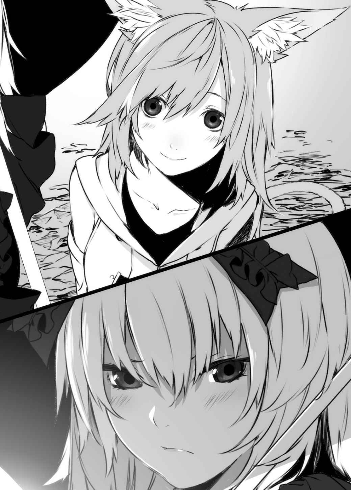
前線では、赤き斜陽 の騎士団 の幹部級メンバーが、パチローを前に立ちまわっている。
が、
「むぅ、いかん！」
ストロガノフが大声をあげた。
「どうしました、団長」
「今日は午後から団体さんの予約あるのを忘れていた！ そろそろ戻らんとガスパチョの奴 にどやされる！ ティラミス、あとの指揮は任せる！」
「わかりました！」
そう言って、ストロガノフはログアウトしてしまう。山 梨 で小さなレストランを経営しているらしい。そんな男がゲーム内トップギルドのリーダーをやっているのだから、まったくもって世も末と言えた。
「パルミジャーノさん、ゴルゴンゾーラさん、必ずここを死守します！」
「うむ」
「任せとけ。かっこいいとこ見せましょう」
どうやら彼らに限っては戦意喪 失 とか士気減退とかの心配をしなくて良さそうである。めちゃくちゃロールプレイを楽しんでいた。
「パルミジャーノさんは《バリアピアサー》で攻 撃 を。私は《ジャッジメント》で攻 めます」
「あんまアーツレベル上げてねぇんだけどな！」
どちらもダメージ無効化、軽減系を貫 通 する攻撃アーツだ。硬 直 時間が長く、疲 労 蓄 積 度 も高いので、好んでレベルを上げるプレイヤーはいない。
もちろん、貫通属性であっても、《不死属性》までを貫 くことはできない。虚 しい足 掻 きだ。
「ゴルゴンさんは弱体支 援 系アーツを」
「仕方ないな」
ティラミスはセレスティアルソードを構えて、パチローに突 撃 した。同時にパルミジャーノが《バリアピアサー》を放つ。パチローはニヤケ笑いを崩 したりしなかった。放たれたボウガンの矢を《ウェポンガード》で受け止める。《不死属性》持ちが、あえてガードをする。舐 めプレイ以外のなにものでもなかった。
ティラミスの懐 に潜 り込むパチロー。素 手 による《バッシュ》である。《ジャッジメント》よりも早い技 の発生で、拳 は一直線にティラミスの喉 元 を捉 えた。
「あっ......！」
ダメージ判定の発生直前を狙ったカウンターである。パチローはそのまま、ティラミスの首を掴 んで持ち上げる。
「ティラミス！」
ゴルゴンゾーラが《パラライズ》を発動させる。
これは悪手だった。パチローには状態異常さえ通用しない。ただ、ゲームプレイヤーの本能として、準備していた魔 法 を仲間の救出に使おうとする。しかし、パチローはティラミスを盾 のように掲 げ、麻 痺 のバッドステータスは彼女へと襲 い掛 かる。
「きゃあっ！」
野 次 馬 は息を呑 んだ。
それまでの弛 緩 していた空気が一瞬で消 滅 する。負けロールとして楽しむには、パチローの行 為 はあまりにも外 道 にすぎ、かつ、見ていて胸 糞 の悪くなるようなものだったのだ。
パチローはティラミスの喉元を掴んだまま、猛 然 と走り始める。彼を囲む騎士団と、野次馬の輪が割れた。その間を駆 け抜けて、〝聖女〟のアバターを、思い切り壁 にたたきつける。《オブジェクト破壊》の効果で、壁 面 には大きくヒビが入った。
「.........っ！」
麻痺状態にあるティラミスは、思うよう反 撃 が取れない。パチローはティラミスを壁に押さえつけたまま、片足をあげ容 赦 なく膝 を叩 き込んだ。１発、２発では済まさない。《蹴撃》スキルを発動させているのかどうか。えげつない膝の連撃は、確実にティラミスの高水準な防 御 ステータスを貫き、体力を削 り取っていく。
騎士団のメンバーは即 座 に救出へ動いた。しかし、すべての攻撃は、《不死属性》に阻 まれて虚しくゼロの数値を浮かび上 がらせる。
「............」
パチローは最後に、ティラミスの身体を、思い切り床にたたきつけた。まだわずかに残る体力を振り絞 り、麻痺状態にも拘わらず動こうとする彼女の肩をも踏 みつけて、その場に固定する。パチローの両 腕 に火属性魔法の輝 きが灯 った。
一同の反応は様々だ。息を呑む。目を伏 せる。ティラミスの名を叫 ぶ。
直後、野次馬を掻 き分 けて、誰よりも素 早 く一斬を振るう黒い突 風 があった。
放たれた《バッシュ》の一 撃 が、大きな弧 を描 いてパチローの腕 を叩く。発動直前を狙ったカウンターキャンセル。直剣の剣筋は翻 り、乱入者は身体ごと回ってその腹部を狙う。やはり《バッシュ》。単なる初歩攻撃アーツでしかないその連撃は、しかしやはり一切のダメージを生み出 すことはない。それでも、パチローの反応速度を上回り、完全にやり込めた。パチローの表情からニヤケ笑いが消えた。ティラミスが、彼女を踏みつけていた革 靴 の拘 束 から解放される。
砲 弾 の如き勢いで戦場に着 弾 した１人の男であった。黒のアクセルコートをはためかせ、ＸＡＮの切っ先を下げたまま、少年はパチローを睨みつける。
「あれは......」
ひとまず一同は、それがお約束であるので、彼の名前を呼んだ。
「キングキリヒト！」
だが、歓 声 や快 哉 の類 は一 切 湧 き上がらなかった。
かつて、ツワブキ・イチローと一対一で渡 り合った、準・最強のソロプレイヤー。その彼をもってしても、パチローを封 じることができるとは誰も思わない。むしろ、あのキングが、リアルチートを前に無残な敗北を喫 してしまうだろうという予想が、悲 壮 感 を漂 わせていた。誰もそのような光景は、見たくない。
ティラミスが、よろよろと野次馬の中に帰 還 する。ゴルゴンゾーラとパルミジャーノ達 も同様だ。ソーサレスが、彼女に回復魔法をかけてやる。
「負けロールをやった気分はどう？」
「もうやりたくありません......。本気で怖 かったです......」
泣きそうな顔で言うティラミスであった。あめしょーが、身長差のある彼女のことを『よしよし』と慰 める。
さて、キングとパチローだ。対 峙 する２人を見て、アイリスは叫んだ。
「キング、戦っても無 駄 よ！ そいつ、《不死属性》持ちだわ！」
「知ってる」
「知っ......」
あまりにもあっさりと言ったものだから、周囲は丸ごと絶句してしまう。
知っているのに、あえて戦うのか。キングキリヒトが負けロールをしたいとは到 底 思えない。そう思う一同の中で、ひとり高らかに声をあげる男がいた。
「違 う、キングは負ける気なんかじゃないぜ！」
キリヒト（リーダー）である。彼の言葉に、ザ・キリヒツのメンバーが次々に頷いた。
「そう、キングには勝算があるんだ！」
「俺 たちにはわからないような、すごい秘策が！」
「さすがキング！ かっこいいぜ！」
「悪いけどちょっと黙 っててくんない？」
「「「はい!! 」」」
キングはにこりともせずに、ただ正面からパチローを見 据 えている。
ザ・キリヒツの熱気とは裏腹に、周囲にはやはり悲観的なムードが漂っていた。キングがどれだけ強いプレイヤーであったとしても、システムの制約は絶対なのだ。いわばパチローは、システムによって『勝てない』と設定されてしまった存在なのである。
そのような相手に、どう立ち回るつもりなのだろうか。
だが、次にキングキリヒトは、ぽつりと、まるで呪 文 のような一言を呟 いた。
「キングキリヒトは、負けない」
先に仕 掛 けてきたのはパチローの方だった。勢いよく大地を駆け抜け、キングキリヒトへと肉 薄 する。拳を握 って放たれた一撃を軽 やかに回 避 し、剣を振るう。アーツを使用しないその一撃は、パチローの首を打 ち据 え、『０』という虚しいダメージエフェクトを散らす。周囲からは、やはり落 胆 の声が漏 れた。
キングは更 に一撃、二撃、流れるような連続攻撃を紡 いでいく。そのいずれもが、パチローの身体にダメージを与えるには至らない。パチローが《不死属性》さえ持っていなければ、今 頃 とっくにＨＰを削り切っていても、おかしくはないのに。見守る多くのプレイヤーが、歯噛みをする。
「待って」
戦いを観察していたソーサレスが、不意にそんなことを言った。
「彼は、《ウェポンガード》が出来ていないわ」
「する必要がないからじゃないの？」
「ええ、する必要がないの。でも、彼は、攻撃を受け止めようとして、失敗しているわ」
一同には、言っている意味がわからない。だが、ソーサレスは傘 をくるくると回しながら、くすりと笑った。
「やる必要がないからやらないのと、やろうとしたけどできないのでは、天と地ほどの差があるわ。きっと、悔 しいでしょうね。彼」
果たして、その指 摘 通りであった。キングキリヒトの剣筋は、幾 度 となくパチローの身体を打ち据えている。そのたびに、パチローは腕でそれを受け止めようとし、しかしすべて失敗していた。
弄 ぶようなキングの剣筋は、パチローにこう告げる。『あんたはもう５回は死んでいる』。
意味があるかと言えば、まったくない。パチローが何も思わなければ、実にナンセンスな挑 発 だった。だが、それは間 違 いなくパチローに〝効いて〟いた。
「《不死属性》を使って俺つえーをしようとしていたが、逆にキングに《不死属性》を利用されて俺つえーされているんだ。さすがキングだぜ」
「その言い方、ちょっと嫌 らしいわね」
キリヒト（リーダー）の物言いに悪気はないのだろうが、アイリスは冷たい視線を送ってしまう。
とうとうパチローは《ウェポンガード》を試みることをやめてしまった。棒立ちになって、キングの攻撃を受け止める。『好きなだけ打ち込んでみろ、すべて無駄だ』と言わんばかりに、ニヤケ笑いを浮 かべた。
「効いてる効いてる！」
「ピッチャーびびってる！ ヘイヘイヘイヘイ！」
手を叩き、野 次 を飛ばす者が現れる中、キリヒト（リーダー）は更に解説した。
「アイリスさん、少年漫 画 において、戦いとは凄 みのある方が勝つんだ」
「う、うん」
彼の言わんとしていることがよく理解できず、アイリスは曖 昧 に頷く。
「ギャラクティカマグナムよりギャラクティカファントムの方が強いのは、エフェクトがよりカッコイイからなんです」
こともあろうに、ティラミスまでそれに追従した。
「でもこれ少年漫画じゃないわよ」
アイリスはそう言いつつ、すでに理解しつつあった。
システムの制約は絶対だ。だが、アバターを動かすのはシステムではない。プレイヤーだ。人間であれば、感情がある。カッコイイ自分を好むし、カッコ悪い自分を好まない。そうしてそれは、ゲームプレイにおけるモチベーションに、大きく影 響 する。
今のパチローは、はっきり言って、ダサいのだ！
《不死属性》なんて大 仰 なものを引っ張り出しておきながら、キングキリヒトに１ダメージすら与えることが叶 わず、ただ延々と叩かれ続けている。今 更 大物感をアピールしようと棒立ちしているのが、ことさらにダサい！
そして、そのダサさを自覚させるような戦い方を、キングキリヒトはしているのだ！
「なんて恐 ろしい奴なの」
アイリスは呟いた。
「あたしだったら恥 ずかしくって死ぬわ」
「テイカーもそうでしょうね。このテのタイプにはよく効くわ」
ソーサレスも神 妙 な顔で頷 く。
キングは、棒立ちしているパチローに、足 払 いをかけた。
「あっ」
「あっ」
べしゃっ、とスッ転ぶ、パチロー。
これはスキルでもアーツでもなんでもない。ただゲーム内の物理法則にのっとった、足払いだ。腕を組み、目を瞑 り、棒立ちなどしているから、足を引 っ掛けられただけでスッ転ぶ。これがもう、極限にダサかった。
「で、どうする？ まだやる？」
キングは、パチローの頭を踏みつけながらそう言った。先ほどティラミスがやられたのと、ほぼ同じ体勢である。
「あああああ、どうしましょう。どうしましょうアイリスさん。一朗さんが。いえ、一朗さんではないんですけど、一朗さんの頭が踏みつけられていますわ！」
おろおろと慌 てるネム。
「ネムさん、嫌なの？」
「衝 撃 的 な光景ですわ。あまり見たくありませんわ」
両手を覆 い隠して顔を伏せるネムとは対照的に、アイリスは腰 に手を当て、ふんーと鼻を鳴らすのだった。
「そう？ あたし、滅 茶 苦 茶 スッキリするわ」
「わかるわ。アイリス、私もよ」
アイリスとソーサレスが、熱い握 手 を交 わした。
「でもできれば、本物の御 曹 司 を自分の手で這 いつくばらせたいわね......」
「わかるわ。アイリス、私もよ」
アイリスとソーサレスが、握りこぶしをぶつけ合った。
さて、キングは飄 々 とした態度で、パチローの顔を踏み続けている。
「このまま続けたって、あんたはオレには勝てない。そうだろ？」
「それはどうでしょうか」
不意に聞こえた声に、その場の一同がいっせいにザワついた。
その声はイチローの、いや、パチローのものなのだ。キングの足に踏みつけられたまま、パチローが初めて、言葉を発したのである。
「キング、あなたはこれまでの戦いで疲 労 度 を蓄 積 させているはず。一方、私にはＧＭ権限があり、すべての疲労度をカットできます。それだけではない。判定範 囲 とダメージ数値を操作して、ここにいる全員を吹 き飛 ばすこともできるのですよ」
周囲が一 斉 にざわめく。そう、その通りだ。パチローが心変わりをすれば、この場にいる全員が死ぬ。キングがどれだけ戦いを優位に運び、勝 ち誇 ってみても、パチローはパラメータを変動させることだって、できるかもしれない。
「じゃあやってみろよ」
キングは平然と言ってのけた。
「おっさんのアバター使って、おっさんのアカウント使って、そんなことができるんなら、やってみればいい」
「.........」
パチローとキングの視線が交 錯 する。キングキリヒトの言葉の内側には、静かな激情が滲 んでいるように感じられた。
「安っぽい《不死属性》なんかで、おっさんの真似ができると思ったら大 間 違 いだ。あんたが何者かは知らないけど、それくらいはわかってるんじゃないの」
「その通りだぜ！」
静 寂 を切 り裂 き、大声で同調するのは、やはりザ・キリヒツのリーダーである。
「なりきりに大事なのはガワとか能力じゃない。魂 なんだ！」
「その人物を再現しようという強い心が、自然と最適解に導くんだ！」
「今のあんたはツワブキさんの強さだけを真似しているに過ぎないぜ！」
「ごめんちょっと黙っててくれる？」
「「「はい!! 」」」
なりきり？ と、首を傾 げるのはアイリスの方だった。
あいつは、御曹司の真似をしているだけに過ぎないということなのだろうか。アカウントを盗 んだ理由は、ひょっとして、それだけ？ ツワブキ・イチローの強 烈 な強さに憧 れて、その力を自分で振 るってみたくなった、だけとか？
意味わかんない。思わず頭を抱 えてしまう。
キングとパチローのにらみ合いが、しばらく続いた。
だが、最終的にパチローは険しい表情で顔を伏せると、背中の《竜 翼 》をはためかせて飛び立った。振り払 われたキングは、特に危なげもなくバランスを取り、空へと消えて行くパチローを眺 める。
敗走だ。倒したわけではない。だが、撃 退 には成功した。
武闘都市デルヴェが、歓声に包まれた。そこかしこでキングコールが沸 き起 こり、ザ・キリヒツは例によって感動にむせび泣いている。キングは腰に手を当てて頭を掻き、溜 め息をついた。
「キング、ええと、なんかお疲れ」
アイリスはひとまず、そのように声をかける。
「ああ、うん」
腰に剣を納め、頷くキング。
「これでパチローは動かなくなるのかしらねー」
「それはないんじゃない」
空を眺めてのんびり呟くアイリスに、水を差すような一言である。
「本当に負けを認めたなら、その場でアカウントを返してくれるよ。ナロファンのＧＭ権限はいまだにあいつが持ってるし、多分、またなんかやろうとする」
その言葉に、一同は緊 張 の色を濃 くした。戦いはまだ終わっていないのだ。シスル・コーポレーション本社では、一体今何をやっているのだろう。プレイヤー達は一様に顔を見合わせ、もうほとぼりが冷めるまでログインするのはやめようか、などと話し合っていた。
「いやあ、素 晴 らしい！」
が、そうした空気の中で、場 違 いな拍 手 が響 いてくる。
一同がそちらを見れば、マツナガだ。この戦闘の最中、一 切 声を発さないと思っていたが、実はひょっとしてずっといたのだろうか。
マツナガは笑った。
「パチローさんはまだ負けていない。ＧＭ権限を使って何かしら仕掛けてくる。だがもう、《不死属性》とか、全ステータスＭＡＸとか、バカげたチートを使うことはない！ そうだろう、キング！」
「うん、まあ、多分」
やたら上 機 嫌 で叫ぶマツナガにキングは曖昧に頷いた。
「良いね、良いよ。最高じゃないか。最高のお膳 立 てだよキング」
「別にマツナガさんの為 にやったわけじゃないんだけどさ」
周囲があっけにとられる中、キングだけはマツナガの思 惑 に気付いているようだった。
いや、アイリス達にもわかる。マツナガが求めていたのは、確かにこのシチュエーションだ。アカウントハックをし、おそらくシスル本社のサーバーすらハックしたサイバー犯罪の大悪党と、ゲームの中で戦うことができる。まるでアニメ映画のような状 況 が、整いつつあるのだ。
勝手に話を進めないでよ、とか。
そういうのは１人でやってよ、とか。
まあ、言うことはできた。だが、誰ひとりとして、そんなことは口にしなかった。
みんなパチローをぶん殴 りたかったのである。
「キングは参加するかい？」
「いや、オレ、今旅行中だから」
勝手にやってよ、とキングは言い、さっさとログアウトしてしまった。
「おかえり、桐生！ 大変だよ！」
目を覚まし、額からミライヴギアを外した世良に、明日葉が開口一番そう言った。
世良は自分に用意された部屋のベッドの上で、愛用のミライヴギアを使ってゲームにログインしていた。桜子からコクーンを使っても良いと言われたのだが、世良としては普 段 から自分の愛用している市 販 品 の方が、都合が良かった。
その桜子は、何やら深刻な顔を......しているわけではなく、どちらかと言えば困ったような笑 顔 を浮かべて、部屋の中に立っている。
「ともあれ、世良ちゃん、お疲 れ様 でした」
「ああ、うん」
ことの顛 末 はアイリスから聞いたらしい。パチローの《不死属性》を解除させ同じ舞 台 へと引きずりおろしたと、思われる。キングキリヒトの功績は大したものだと、桜子は素 直 に称 賛 してくれた。
すべてはパチローの匙 加 減 ひとつだ。彼 がすべてのプライドをかなぐり棄 てたとしたら、結果がどう転ぶかはわからない。とは言え、そうはならないだろうと、世良は踏んでいた。
ゲームとは、本来、プライドとプライドをぶつけ合って行うものだからだ。
ゲーマーとしての誇りを捨て、チートを手にし、蹂 躙 することは気分が良いだろう。だが所 詮 それまでの話だ。相手はいずれ、飽 き、呆 れ、軽 蔑 の視線と共にゲームの舞台から去っていく。それを〝勝利〟と断じられる恥 知 らずがいたとすれば、そいつはもはや、ゲームプレイヤーですらない。ただの餓 鬼 だ。
見たところ、パチローはまだ、辛 うじてゲーマーだ。
あるいは、ゲーマーたろうと意識している。ツワブキ・イチローの思 い描いたゲーマー像を模 倣 するために、あのアカウントを借用している。だからこそ、パチローはこれ以上、チートによるデータ改 竄 を行わない。
「それで、お姉さん」
世良は桜子に問いかける。
「あと石蕗さんも。結局、大変って何が？」
「ああ、それですか......」
桜子は露 骨 な苦笑いを崩さない。彼 女 の代わりに、明日葉が答えた。
「イチ兄ぃ、今からアメリカ行くんだって!! 」
なんだそれは、と世良は思った。
４―御曹司、アメリカへ行く
「さ、桜 子 さん！ 運転......！」
「喋 ると舌を噛 みますよー」
夕方前の高速道路を、一台のリンカーンが爆 走 する。運転席にはメイド、後部座席に中学生ふたり、向かう先が成田空港となれば、ますますワケがわからない。ワケがわからないが、これには重大なワケがあった。
原因は石 蕗 一 朗 からの電話である。
昼過ぎ、世 良 がゲームにログインしている間、一朗から連 絡 があった。これからアメリカに行く、と言うのである。
どうやら、今回のアカウントハック事件の主犯がアメリカにいるらしい、というのが、一朗の見解であった。あくまでも１人のユーザーでしかない一朗は、シスル本社内のゴタゴタには介 入 できないし、しない方が良い。だが、あくまでも個人として、悪さをしている相手に釘 を刺 しに行くのは自分の自由だという、実に一朗らしい持論が展開された。
とは言え、アメリカだ。地球の裏側である。
往復に一日、滞 在 期間も考えれば、明 日 葉 や世良が東京にいる内に帰ってこれるかはわからない。だから謝っておいて欲 しいと、そのように言われた。
さて、納 得 がいかないのは明日葉と世良だ。特に世良である。一朗に会うために来たようなものなのに、会えないとはどういうことだと不満を漏らしたので、明日葉も桜子も大層驚 いた。『私のカレーを食べにきたっていうのは？』と尋ねてみると、世良は皿によそわれたチキンティッカマサラをじっと眺め、『すごく美 味 しいけどそれだけじゃダメ』と答えた。
自分たちも一朗と一 緒 にアメリカに行くと、２人は言い出したのである。
さすがにこれは無 茶 だろう。そう桜子は思った。だいたいパスポートがなければ国外には出られないのだ。そのように告げると、２人はいきなりカバンを漁 りだしてこう言った。
『この旅行の後、家族でお父さんのいるイタリアに行く予定だったから』
『あたしはイチ兄ぃがいつ突 拍 子 のないこと言っても良いようにいつも持ってた！』
用意の良いことだった。
となると、あと必要なのは一朗の許可と、親 御 さんの許可だ。親御さんはともかく、一朗はあっさり許可しそうだな、と思い電話すると、文字通りあっさり許可された。ついでに、『桜子さんにも預けたいものがあるから、成田まで来てほしい』と言われてしまった。
明日葉の御 両 親 も、世良のお母さんも、あっさりと納得してしまった。
ともあれそうしたわけで、桜子は２人を成田空港まで運んでいる。ファーストクラスが３席とれたと、一朗は言っていた。桜子はもう何も言わなかった。
「もうすぐ成田です！」
「お姉さん、運転速いね」
「短大生の頃 は、よく峠 を攻めたものですよ」
駐 車 場 に入り、車を停 める。ごちん、と明日葉がガラスに頭をぶつけていた。
シートベルトをはずして外に出る。ばたん、ばたんと車のドアが閉まる音と同時に、桜子たちは成田空港の中へと突 入 した。人がわらわらといる中で、涼 やかに立つ一朗の姿は、すぐに発見できた。荷物は持っていない。当然と言えば当然だ。必要なものを現地調達するのに、何の躊 躇 もない男であるからして。
「一朗さま！」
「イチ兄ぃ！」
駆け寄 ると、一朗は片手をあげて、いつもの調子で応じた。
「やぁ、桜子さん、明日葉、それに......」
一朗の視線が、２人の後ろに向く。ボストンバッグを抱えて歩いてくる、やたらと目つきの悪い子がそこにいた。
「やあ、キング」
「うん」
桜子はごくりと唾 を飲む。
あの一朗と、桐生 世良の対面だ。お互 い顔は知っているし、ゲームの中では何度も言葉をかわしているはずだが、こうして直接会うのは初めてである。いったいそこからどのような言葉が飛び出すのか、想像もつかない。じっと視線をぶつけ合う２人をみて、桜子は、次のアクションを待った。
だがそれだけだった。
あれ、と思う桜子に、一朗は言う。
「じゃあ、２人を預かる。早ければ明日の夜には帰れると思うけど、ちょっと確実なことは言えないな」
「あ、え、あ、はい」
こくこくと頷く桜子であった。
「おっさん、これからどこ行くの？」
「ピッツバーグ。直通便がないから、シカゴ経由でね。詳 しい話は後でしよう」
「イチ兄ぃ！ シアトルは!? シアトルは行く!? 」
「行かない。ニューヨークもマイアミも行かないよ」
「なんだー......」
どうやら贔 屓 の選手が在 籍 していた球団の本 拠 を、あわよくば回りたかったのであろう明日葉は、露骨に唇 をとがらせていた。自 称 ドラキチの彼女も、メジャーリーグは見るらしい。
さて、一朗は桜子に向き直る。そういえば、預けたいものがあると言っていた。桜子も使用人の顔に戻 って、シャンと背筋を伸 ばした。
「シスルには著 莪 を紹 介 した。まあ、あいつがいれば上 手 く立ち回れるだろうから、社員の頑 張 り次 第 では事態は２、３日以内に沈 静 化 するよ。僕 も動いてるし、早ければ明日までには片付くかもしれない。それで、」
そう言いながら、一朗は、ジャケットの内ポケットに手を突っ込んで、１枚のカードを取り出した。桜子は息を呑む。
それを、一朗は、彼女に向かって差し出したのである。
「桜子さんには、それまで僕のアバターが無 茶 苦 茶 をするのを止めてほしい。これは、その経費」
「はっ？ でっ、でもこれっ......」
反射的に受け取ってしまったが、桜子は困 惑 を隠 せない。ひんやりとしたカードの感 触 が指先に心 地 よい。一朗はにこりと笑って見せた。
「遠 慮 はいらないよ。好きにやると良い」
そんなこと言われても。
桜子が一朗から、仕事上預かっているクレジットカードは何枚かある。食材用、掃 除 用具・調理器具用、その他エトセトラエトセトラ。いずれもブラックカードだ。桜子は絶 妙 なバランス感覚で、庶 民 的 センスを保つことには成功していたが、それでもこんな、虎 の子の一枚を差し出されるなんて、思っていなかった。
「ねー、桐生。あれなに？」
「わかんない。クレジットカードみたいだけど。銀のがあるなんて知らなかった」
銀。とんでもない。あれはパラジウムだ。パラジウム製のクレジットカードと言えば、世界の富 裕 層 が保有する最高ランクのステイタスシンボルである。ＪＰモルガンのプライベートバンクに口座を保有する人間でなければ作成することはできない。
一朗は、こともあろうに、それを、
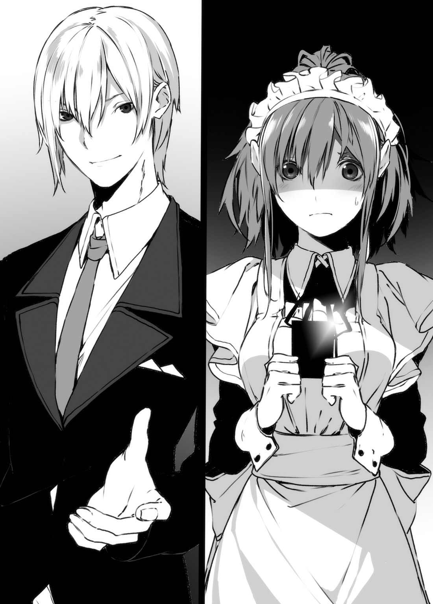
それを、ゲームの為に使えと言っているのだ。
「僕の見立てでは、シスルが決済代行会社に連絡して、ゲーム内課金のシステムを止めてもらうまで、まぁ24 時間ってところかな。サーバーに組み込んだモジュールを停止させる手段もあるけど、この場合はもっと早いかもしれない。それまでに、どれだけ使ってもらっても構わないよ」
桜子は、今まさに、石蕗一朗からカネの力を託 された。
その重みを改めて理解し、大きく深呼吸をする。扇 桜子は、パラジウムカードを大切にしまうと、主人である一朗に対し、恭 しく頭を下げた。
「承 りました」
そろそろ夕方になる。どうせ徹 夜 は覚 悟 の上であったことだし、それに対して今さら愚 痴 を垂れるつもりはないのだが、作業の進 捗 状 況 と顔をつき合わせると、やや憂 鬱 な気分になる。オフィスの中を見 渡 してみれば、死 屍 累 々 といった感じだ。同様の心中の者が多いのだろう。
江 戸 川 は、デスクの上に転がった無数の空 き瓶 を眺め、更に気分を暗くした。栄養ドリンクという奴 は、飲めば飲むほどに効果があるとは思えなくなる。プラシーボ効果の賜 物 だと言うのなら、まさしく逆効果だ。そもそも人体の設計限界に挑 むこと自体に無理があるのではないだろうか。人間の身体が、そこまで頑 強 にできているとは思えない。
外の空気を吸おう。江戸川はよろよろと立ち上がって、オフィスを出、階段を下る。
彼のタスクは多かった。サーバー全体のログの確 認 と、被 害 を受けたと思 しきデータの精査、加えて外部の人間であるとして、社内にあるコンピューターから不正なデータ流出の痕 跡 がないかチェックする仕事も任された。シスル社内のエンジニアは、総出でサーバーの奪 還 や不明なデータの駆 除 に回っており、オフィスはまさしく戦場であった。
石蕗一朗の紹介した弁護士が到 着 したのは、そんな戦争のさなかである。全身をアルマーニのスーツに包 んでいたが、生 地 はしわくちゃのよれよれで、うだつの上がらない風 貌 であった。背はひょろりと高く、髪 はもじゃもじゃ。ただ、どこか今は亡 き名優を思わせるその男は、名前を著莪俊 作 と言った。
ひとまず、著莪弁護士はあざみ社長と今後の社の方針を相談していた。現場としては事態の解決と原因究明をさっさと済ませてしまいたいところだったが、そこを子供のように叫んでも仕方のないことではある。
弁護士は、状況がきちんと把 握 できていない現状で迂 闊 な発表を行うのは避 けるべきだとしたが、同時に24 時間以内に発表を行い、迅 速 な対応をアピールするべきだとも主張した。要するに、この一日以内に、ひと段落をつけろと言うのである。無茶苦茶だ、と思ったが、クライアントの方針がそう決定づけられた以上はやるしかない。深夜にもかかわらずシステム・アイアスの社長に泣き言を入れると、朝一で応 援 を送ると言われた。勤務時間と給 与 待 遇 は間違いなくブラック企 業 なのだが、社長のこうした姿勢は素直にありがたい。
迂闊なタイミングでの発表は、記者からの追求に対応しきれない。想定される質問に対して、回答を用意してから発表に臨 むべきだという意見は理解できる。正直気は進まなかったが、社内でスタッフが使用するコンピューターは隅 から隅までチェックした。いろいろと気まずいデータファイルも発見したのだが、あえてスルーした。
手を抜 いたつもりはない。しかし、データ流出の痕跡はいまだに発見できなかった。どうしても痕跡が見つからなかった場合、それっぽい嘘 をついてなんとか乗り切ろうと弁護士は言っていた。石蕗は『性格が悪い』と言っていたが、こういうのは『良い性格をしている』というのではないだろうか。その疑問を証明するように、弁護士はいま、休 憩 室 で大いびきをかいているらしい。
問題はサーバーのログ確認である。シスル社自体は小さな会社であるが、社が管理するサーバーマシンの量は大企業の構築するオンラインネットワークにも匹 敵 する。これだけの量を、24 時間以内に完全にチェックするなど、江戸川ひとりでは不可能だ。そもそも徹夜で仕事のパフォーマンスはだいぶ落ちている。
社長の寄 越 す救 援 に期待するしかない。
なんでこんなことになってしまったのか。江戸川は外に出て、もう夕方だというのにカンカンと照り付けてくる日差しを睨 みつけた。こういうのは考えるだけ無駄なのだが、ふつふつと湧く怒 りの矛 先 はどこかにぶつけないと気がすまない。
江戸川は、少し歩いたところにあるダイドードリンコの自動販 売 機 に小 銭 を入れた。飲料の自 販 機 ならば、当然社内にもある。が、江戸川は自動販売機に関しては根っからのダイドー贔屓であった。
最近は『夕張メロンミルク』が好きだ。缶 の容量は非常に小さいのだが。１３０円を入れて、ボタンを押 す。ガコン、と出てくるスチール缶。ひんやりとした感触は、やや過熱気味の神経にはよく沁 みた。プルタブを引っ張ろうとすると、自動販売機がなにやら声を上げる。
『ラッキー！ 大当たり、もう一本選べるよ！』
自動販売機のクジ機能って本当に当たるんだ。何もこんなときに、と思いつつも、せっかくなのでジュースを選ぶ。久しぶりにさらしぼオレンジでも買っておこう。高校時代、ゲーセン通いしていた時は世話になったものである。
人生、それなりに長く生きてきたつもりだが、ここ最近は初めて経験することが多すぎる。江戸川はメロンミルクを一気にあおると、『さらっとしぼったオレンジ』の５００ml ロング缶を額に当てながら、シスル本社のビルへと戻った。こんなどん底の状況で、自動販売機のあたりを引き当てるというのは、運がいいのか、悪いのか。神様とやらががんばっている自分に送ってくれたエールだというのなら、あまりにもしょっぱい。
何がムカつくかって、そのしょっぱい経験に対して、妙 に嬉 しい気分になっている自分が、江戸川には一番腹立たしいのであった。
家に戻ってきた後、桜子はまず食器を片付け、台所を掃除し、冷蔵庫や棚 に保管してある食品の日付を確認して、ようやく家事を終える。普段は自室備え付けのシャワーしか使用しない彼女も、一朗が家を空けるときに限ってはこっそりバスルームを使用させてもらう。一朗は普段から『使いたかったら使って良いよ』と言っているので、『こっそり』する必要などどこにもないのだが、気 恥 ずかしさと線引きのために、表向きは『自分は主人のバスルームを使用しない』という姿勢を貫 く。あくまで表向きは。
石蕗家のバスルームは壁 面 が総ヒノキ張りである。掃除が非常に面 倒 であると桜子自身は評しているが、自身が入る分にはどこぞの高級ホテルに泊 まっているようで、これがなかなか悪くない。贅 沢 なことにバスタブは複数あって、水 風 呂 だったりジャグジー付きであったり。周囲にこのマンションより高い建造物がないものだから、開放感のある大きな窓のつくりで、外にまで出られる。この辺は落ち着けなくなるので嫌 いだ。当然のようにサウナも付属している。
扇桜子。大層な名前と職業ではあるが、庶 民 の生まれである。
窓ガラスを伝う水 滴 を眺めながら、やはり一朗さまはお金持ちなんだなぁ、と実感をする。頭の上では理解しているし、その奔 放 な金 遣 いやら、彼の家の隅 々 までやらをこうして見ているのだから、もっとわかっていても良さそうなものではあるのだが。やはりこうして彼の生活スタイルに重なってみると、ぜんぜん違 う。風 呂 ひとつ入るにしても壮 絶 な場違い感。
買い物の際、一朗の手 渡 すクレジットカード（経費用）を使うのにも慣れたつもりだったが、空港でパラジウムカードを手渡されたときにはさすがに焦 った。
好きに使えというからには、まぁもちろん、どのような使い方をしたところで怒 られたりはしないのだろう。パラジウムカード。限度額はないらしい。そもそも桜子の脳では、一朗の持つブラックカードの限度額すら使いきれる自信はないのだが、それでもあの銀色のカードを手渡してくれたからには、一朗はこう言いたかったのだろう。
『遠慮と情けは一切無用』
一朗は、自身のアバターがムチャをするのを止めて欲しいと言っていたか。
そんなこと言われたって無理ですよ一朗さま。どうしろって言うんですか。大金の使い方なんて私ろくに知りませんよ。使用人として信 頼 に応 えなければならないという思いはあるのだが、こうまでざっくりとした指示を受けるのは初めてだった。
桜子は、ひとまず風呂から上がることにした。いまサウナを使うつもりにはあまりなれない。身体を拭 き、下着を身に着けパジャマに着 替 える。ドライヤーで髪を乾 かす。主人がいないのならば、わざわざ化 粧 直しをする必要もない。
このあとはどうしよう？ ひとまず携 帯 の着信履 歴 を確認すると、アイリスからのフレンドメッセージが転送されてきていた。こちらの都合さえあえば、21 時過ぎくらいから、マツナガが話し合いの場を設けたいのだそうだ。他に妙 案 も浮かばないし、ひとまずはログインしておこうか。
結局、やることはいつもと変わらないなぁ。
部屋を移動し、コクーンを起動させてからシートに座 り込む。片手にはパラジウムカード。ゲーム内にまで持ち込むクレジットカードとしては、いろいろと規格外な気もしたが、スロットに挿 入 するとそれはあっさりと飲み込まれた。
ヘッドマウントギアが降りる。無数の電気信号と量子信号が、桜子の意識を現実世界から遮 断 していく。
これでもう何度目のドライブになるんだろう。
一年前、桜子はミライヴギア・エックスとナローファンタジー・オンラインの通常版を購 入 した。プレミアムパックほどではないが、やはり初期生産ロットはそう多くなく、秋葉原のゲームショップには徹 夜 組 まで並んでワイドショーに報じられていた。桜子がそれを購入できたのは、まぁ偶 然 と僥 倖 が折り重なった結果以外の何でもない。
それからはもう、ほぼ毎日だ。同じスタートダッシュを切った他のプレイヤーに比べ、キルシュヴァッサーの成長速度は微 々 たるものであったが、それでも地道なレベルアップの結果、中 堅 やや上位くらいの立ち位置は維 持 できている。
桜子の意識は完全に仮想世界へと移行した。視点の高さや身体の重さに明確な変化がある。体格から性別から変えてしまったのだから、違 和 感 はまぁ当然だろう。この世界では、自分は屈 強 な白銀の騎士 キルシュヴァッサー卿 である。それを疑っていないアイリスやキリヒト（リーダー）のようなプレイヤーもいれば、即 座 に中身を見 抜 いたキングやマツナガのようなプレイヤーもいる。
姿を変えるのはなかなか楽しい。もともと桜子はコスプレに憧れていた節もある。だからこそ住み込みメイドなんて願ったりな仕事をしているわけだが、キルシュヴァッサーのように大 胆 な変身ができるのは、やはり仮想世界ならではであろう。ロールプレイにも力が入る。
キルシュヴァッサーが目を覚ますと、グラスゴバラのメインストリートだった。即座に愛馬オウカオーを呼び出 して、武 闘 都市デルヴェへと向かおうとする。
「キルシュヴァッサー、」
そんな折、彼に声をかけるものがあった。振り返 ると、そこには屈強な姿をした獣人が立っている。
「おや、テイカー殿 。珍 しいですな」
以前、アイリスブランドの盾 として、テイカーと対立したキルシュヴァッサーだが、一件落着すれば同じゲームを楽しむプレイヤーだ。さしたる遺 恨 もなく、そう話しかける。
テイカーは『フッ』と笑い、死んだような視線を這わせてこう言った。
「今の俺 はゴミクズと呼んでくれ......」
何があったというのか。
そういえば、ネムやあめしょーから、この男は相当メンタルが弱いという話を聞いていた。ちょっとしたことがあるとすぐにイジケて、自分のことをゴミクズ呼ばわりするよう周囲に強 いはじめるのだ。ちょっと面倒くさいタイプの人なんだな、と、キルシュヴァッサーは率 直 なことを考えた。
見れば、普 段 彼 が纏 っているボロ布のようなローブ装備が見当たらない。おそらく、戦 闘 に負けてロストしてしまったのだろう。そうであるとすれば、ゴミクズ氏のこのローテンションっぷりにもうなずける。
「いろいろ話は聞いている。大変そうだな」
「大変なのは私１人ではありませんからな」
パチローの暴挙がゲーム内を混乱に陥 れている。それはキルシュヴァッサーとしても許容できることではない。運営の沙 汰 を待てば片が付くことではあるのだが、それまでに彼を押さえつけることを、一朗に託されてしまったということもある。
「ゴミクズ殿は、これから？」
「まあ、デルヴェに行くさ。どうせ暇 だしな」
「平日の昼間からそうなんですがそれは」
「俺の場合は職業形態がちょっと特 殊 なんだよ......」
自営業か何かだろうか。普段の口ぶりからして、少々、業の深そうな男である。まさか、リアルで傭 兵 をやっているということでもなかろうが。
「魔 女 の話じゃ、結構な数のプレイヤーが、もう集まってるって話だ」
「対策会議のためにですか？」
「全部マツナガのお膳立てでな。あいつは、事態をお祭り騒 ぎにするのが、上手いよ」
それは思う。イチローとキングが戦うことになったグランドクエストや、ネムがアイリスに喧 嘩 をけしかけることになった一連の事件も、すべて裏ではマツナガが動いていた。誰 かを不幸にしたいとか、誰かを陥れたいとか、そういった狙 いは一切なく、ただ、話を盛りあげる為だけに動いている。
もちろん、それは最終的にブログの記事が盛り上がってアクセス数が増え、アフィリエイト収入を増やすことに繋 がるわけだが、おそらく理由はそこだけではないだろう。
マツナガは、根本的に好きなのだ。自らの手でお祭りを盛り上げるのが。
生 粋 のイベンターなのだろう。桜子は子供の頃、２人の兄と一緒にゲーセン全国行 脚 をしていた時のことを思い出す。ある地方のゲーセンを訪 れた際、似たようなことをする女ゲーマーがいた。彼女も根っからの演出家だった。
「まぁ、運営としては忸 怩 たる思いでしょうなぁ」
「良いんじゃないか。今のところは楽しんでるんだし」
ゴミクズ氏の言葉に、キルシュヴァッサーは頷 く。そうだ、彼のおかげで、今多くのプレイヤーはゲームを楽しめている。運営によるシステム制 御 権が、得体のしれないハッカーに盗まれているこの状況を考えれば、はっきり言ってそれはかなり特殊だ。
「パチロー様の正体は、どういった方なんでしょうな」
「わからん」
ゴミクズ氏は腕 を組んでかぶりを振る。
「俺は今まで、業の深い連中をたくさん見てきた。あいつにも似たところはある」
「と言うと？」
「本来、自分のものではない力を手っ取り早く手に入れて、悦 に入 るところとかな。同情できる奴も、できない奴もいたが、その中でもあいつは、妙に子供っぽい」
子供っぽい、という分 析 は、キルシュヴァッサーには意外だった。
確かに、チートを使って他者を圧倒すること自体を楽しんでいるのは、子供っぽい無邪気さと直結する部分がある。しかしそうであるとして、本当に子供であるかと言えばそんなことはないだろう。事実、それでは説明のつかない規模のことを、パチローはしでかしている。
キルシュヴァッサーの疑問にも、ゴミクズ氏は頷いた。
「ああ、子供っぽさがある割に、動きに〝遊び〟がない部分が気になる。直線的で、効率的だ。だが、ゲーム慣れしているかというと、そうでもない」
「確かに、よくわかりませんな」
「だろう」
まったくわからん、と言って、ゴミクズ氏は再度ぼやいた。
空の旅というのは退 屈 だ。たとえ乗客の快適さを保つため、精 一 杯 の努力がなされたファーストクラスであったとしても、それは変わらない。そもそもとして、こうした椅 子 に座って目的地につくのを待つという、受動的な運 搬 システムが、一朗はあまり好きではないのだ。まだ飛び立つ前だというのに、これから10 時間以上に及 ぶフライトのことを考えれば、一朗はちょっぴり退屈だった。
ただ、そんな一朗とは裏腹に、ついてきた２人の子供は感 嘆 の声をあげる。
「ファーストクラスなんて初めて来た」
「あたしは１回だけあるよー！」
世良の言葉に、明日葉が胸を張る。彼女の10 歳の誕生日に、ドバイ行きの旅行をプレゼントしたのだ。あの時はファーストクラスの席ひとつひとつがほぼ個室状態で、夜間も周囲を気 遣 わずそれなりに快適に過ごせたのだが、あれはエミレーツ航空をはじめとしたいくつかの航空会社でしかやっていない。
「石蕗様、ワインやシャンパンのご用意がございますが」
「ん、要 らない」
キャビンアテンダントの言葉をそっけなく断り、一朗はシートにつく。
「明日葉やキングはどうかな。ジュースとかある？」
「もちろんございます。りんごのフレッシュジュース、ジンジャーエール、それ以外に紅茶やアイスミルクなどのご用意ができますが......」
一朗が、ちらりと隣 の席を見ると、ちゃっかり腰 を下ろした世良がゴソゴソと携帯ゲーム機を取り出しているところだった。そこでようやく、自分が意見を求められていることに気付いたのか、顔をあげ、しばし後にこう言った。
「いらない」
「あ、じゃああたし、ジンジャーエール」
「はい、かしこまりました」
前の席に座った明日葉の声に、アテンダントが頭を下げる。
離 陸 までまだいくらかの時間がある。世良はゲーム機に視線を降ろしたまま、一朗にこう尋 ねてきた。
「おっさん、」
「ん、」
「今回の事件のこと、詳しく教えて」
「ふむ」
目だけはゲームに向き、指先も危なげなくボタンを叩 いて複雑な３Ｄアクションを決めているが、世良の意識ははっきりと一朗の方に向いていた。前の席の明日葉もまた同様だ。一朗は顎 に手をやって、考え込むしぐさを見せる。
どこから話したものだろう、と思ってのことだが、すぐに、全部話すことに決めた。
まずは事件発覚の経 緯 。シスルに確認を取って本社へと向かうまで。そこで出会った外注のセキュリティ関係者がエドであることまでは告げなかったが、内部からの情報漏 洩 の可能性。キングと戦った際の、データバスの増大に合わせた不自然なデータの流出。一朗のアカウント自体がアメリカからアクセスされていた形 跡 がある、ということ。
「なんでピッツバーグなの？」
「ちらっと見えたＩＰアドレスが、友人の働いている研究所だった」
あっさりと答える一朗である。
「ピッツバーグのロボット工学研究所。面 白 い奴でね。今、メイドロボットの研究開発にいそしんでいるよ」
「ＩＰアドレスって見ただけでわかるっけ」
「わかる人もいる。僕みたいに」
数年前、量子通信技術の普 及 により、全世界のＩＰアドレスは従来のＩＰｖ４からＩＰｖ６に一新された。これにより多少の混乱も発生したのだが、かねてより懸 念 されていたＩＰアドレス枯 渇 問題も解決している。
「え、じゃあ、その面白いイチ兄ぃの友達が犯人なの？」
「だとすると、手っ取り早いけど、僕はそうじゃないんじゃないかと思っている」
「でも、その研究所からアクセスされてるんでしょ？」
「うん。そうだね」
だが、一朗にはもう、犯人の目星が別についている。〝彼女〟は今、ピッツバーグからアクセスしてはいるが、その存在に気付いている研究職員はほぼいないはずだ。何 故 その研究所を選んだのかはわからない。
が、海外からのアクセスなら、足がつきにくいと踏 んだのはあるだろう。加えて、彼女が活動するには、大規模なサーバーマシンとスーパーコンピューターが必要だ。そうして候補にあがったいくつかの中から、たまたまチョイスしたのが、そのロボット工学研究所だったに違いない。
「桜子さんが、夏になると必ず見るアニメ映画が、何本かあるんだけど」
「うん」
「そんな感じ」
「なるほど」
世良は納得いったように頷いた。
「え、え？ なに、え？ どういうこと？」
首を傾 げまくる明日葉。
「明日葉、そろそろ離陸だから、ちゃんとシートベルトをしめて」
「あ、はーい......」
まだ釈 然 としない表情ながら、明日葉はするりとシートに滑 り込んで、ベルトを締 める。
「時差があるから、今のうちに寝 ておいた方が良い。寝づらいけどね」
そう言って、一朗はリクライニングを倒す。スペースにゆとりがあるおかげで、ほぼフルフラットまで下げられるのは、ファーストクラスならではだ。
「えー、なんか眠 くないなぁ......」
前の席で明日葉がぼやいている。世良は、しばらく携帯ゲーム機をいじっていたが、やがてそれをパタンと閉じて、同じようにリクライニングを倒す。
寝づらいなどと言っていた割には、数分後、出発前の機内アナウンスが流れはじめる頃には、彼 のシートからは規則正しい寝 息 が聞こえてきた。こういうのも才能というのか、単に神経が図太いというのか。滑 走 路 の走行から離陸の衝 撃 で機内が揺 れても、一 切 起きる気配を見せないところを見るに、後者なのかもしれない。
「ようこそ、キルシュヴァッサー卿。それにテイカーさん」
赤き斜陽 の騎士団 のギルドハウスで、ティラミスが笑 顔 で迎 えてくれた。
ナローファンタジー・オンラインにおいて、ギルドハウスの内装・外装はそれなりに融 通 が利く。家具系のアイテムはＮＰＣから購入が可能であり、大 抵 の場合はデータ的な特 殊 効 果 を持たないオシャレアイテムではあるものの、普 段 の生活では手の届かない豪 奢 な調度品はやはり人気が高い。騎士団のギルドハウスにしてもそうだ。通路には赤い絨 毯 が敷 かれ、壁 には絵画が掛 けられている。天 井 にはシャンデリアだ。
リアル金持ちの家から毎日ドライブしている身としては、行き過ぎた成金趣 味 を感じてしまわないこともないが、何しろ桜子 自身が彼らと同じ庶民の生まれであるために、そこまで滑 稽 には映らない。そもそも普 遍 的 な金持ちの生態なんて知らないし。石蕗一朗を全 ての基準と考えるのは危険な行 為 だ。
「ティラミス殿、大 丈 夫 でしたか？」
ことの顛 末 をアイリスから聞いているキルシュヴァッサーは、心配そうに尋ねる。
「えぇ、ご心配なく。ちょっと怖 かったですけど、割と過ぎちゃえば忘れちゃうタイプなんですよね」
ティラミスがパチローによって叩きのめされていたのは、つい２、３時間前の話である。バグか仕様か、デルヴェのストリートファイトでは《痛覚遮断》が機能せず、一方的な暴力の行使は、トッププレイヤー層でも軽いトラウマを生むのではないかと思っていたが、少なくとも彼 女 に限っては大丈夫であるらしい。
バーチャル・リアリティという特殊な前提条件下の話である。プレイヤー同士の戦闘には、他のＭＭＯではあり得ないような緊 張 感があるのだろうな、とキルシュヴァッサーは思っていた。単純な戦闘ならばまだ良い。恐 ろしいのは、それがフィールド上において、両者の合意なく発生する可能性があることだ。
なまじ、ツワブキ・イチローのアバターは、データ上の戦闘能力に関してもトップクラスの実力を誇 る。例えばパチローが中堅プレイヤーの行きかうフィールドに出現し、行きずりのプレイヤーを見境なく襲 うようなことがあれば、それはもう立派なマナー違 反 である。ちょうどアイリスを襲おうとしたときや、グラスゴバラ外の山道でこちらと剣 を交えたときのようなものだ。イチローの名を地に貶 める行為である。
そうだ、そこだけは看過できない。忠臣として、というか、単純に中の人としても許せない。扇桜子、激おこぷんぷん丸である。カーペットの上を歩きながら、キルシュヴァッサーはぐっと拳 を握 った。フルプレートメイルのガントレットがわずかに軋 む。
ティラミスによって案内されたのは、いくつもある部屋のうちの一つであり、やはり大層豪 華 な内装を持った大き目の一室である。中央には円 卓 、床 には赤い絨毯が敷かれ、暖炉の左右に騎士団の紋 章 を描 いた大きな垂れ幕があった。雰 囲 気 はある。いかにも騎士団の会議室といった感じだ。
「やっほー、キルシュさん」
席についていたアイリスが手を上げ、その隣でネムが会 釈 をしていた。円卓の上にはティーカップと茶 菓 子 が置かれている。
「戻りました。アイリス、ネム殿、夕食は食べましたか？」
「食べたわよー」
「軽くですけれど」
それは結構。五感の刺 激 を容易に満たせる仮想空間では、食事・排 泄 などの基本的な生理現象ですらおろそかにしがちである。そのためのアラートメッセージ機能ではあるのだが、特に最近、ゲーム内における食事や飲料の充 実 っぷりはすさまじい。
ＶＲＭＭＯが登場する前から、ゲームにかまけすぎて死んでしまった人間の例は存在するのだ。過 剰 なのめりこみは危険である。アイリスの隣には、更 に彼女の友人であるというユーリも来ていた。すまし顔で紅茶を飲んでいたユーリは、何かに気付いたように表情をギョッとさせたが、周囲を見回しても、後ろにはテイカーしかいない。
「やぁ、どうも」
「おつかれー」
「お疲 れ様 です」
マツナガやあめしょー、苫 小 牧 といったトッププレイヤー組も同席している。ソーサレスは室内だというのに、傘 をくるくると回していた。
「あら、テイカー。また来たのね」
「うるせぇ」
顔なじみの魔女に乱暴な口を叩いて、テイカーはどっかりと座り込む。
席にはすでに、騎士団の幹部級も顔をそろえていた。午後から団体さんの予約があると言っていたストロガノフまでいる。しかし、彼のレストランで働いているというガスパチョがログインしていないあたり、まだ修 羅 場 は脱 していないようだった。
「ザ・キリヒツの皆 さんは？」
「帰りましたよ」
キルシュヴァッサーが席につくと、ティラミスがお茶を出してくれた。彼女は《茶 道 》スキル持ちではないということだが、なんにせよ他人が淹れたお茶を飲むのは、このナロファンにおいて貴重な経験だ。ありがたくいただくことにする。
ティラミスが席につき、『これで全員ですね』と言った。結構、錚 々 たる顔ぶれを揃 えた形にはなっているが、このメンツで何ができるのかというと難しい話だ。
「キルシュヴァッサー卿、石蕗さんから今回の件について何か聞いてますかね？」
話し合いを前に、マツナガがそんなことを聞いてくる。桜子は、意識を完全にキルシュヴァッサーへと切 り替 えた。
「聞いてはおりますが、運営体の内情に踏み込むことにもなりますし、おいそれとお話はできませんな。ただ、事態は深刻なようですよ」
「さもありなんですねぇ。なんてったって、ＧＭ権限も行使されてるんだ。マスコミが騒ぎたてたら、最悪サービス終 了 かもね」
マツナガは、美 麗 なエルフの顔立ちに彼特有の薄 笑 いを浮 かべて、ティーカップを口に運んだ。
「それでマツナガさぁ、いったい何すんのかにゃあ」
あめしょーはメニューウィンドウでフレンドメッセージを操作しながら言った。携帯をいじりながら、という感覚に近い。おそらくまったく関係のないメッセージのやり取りが、この会話のさなかに行われているのだろう。
「そりゃあ、パチローさんを捕 まえるんでしょ。いや、捕まえるっつっても、法的にとか物理的にとかは無理だけどね。あのまま放っておけないじゃないですか」
「本音は？」
「面白そうですよね。運営からの発表にあわせてブログのネタにしようかなって」
まぁそんなところだろう。単なる正義感から探 偵 ごっこをするよりは、よほどマツナガらしいと言える。
ただ、単純に好 奇 心 の強い性格ではあるのだろう。でなければ、他のプレイヤーに先んじて検証班に名乗りを上げたりはしまい。集めた知識をひけらかすのも好きなようだから、彼自身がマスコミじみたタイプの人間であると言える。恣 意 的 な情報操作などお手の物のようだし、アフィリエイトブロガーの鑑 だ。
「でも、捕まえるってどうすんのよ。大体どこにいるかも......いや、まぁそれはわかるんだけど」
アイリスもメニューウィンドウを開き、キルシュヴァッサーもそれに倣 う。ギルドメンバーの項 目 を開くと、アイリス達２人に加え、ツワブキ・イチローの名がある。
イチローはいまだにログアウトしていない。ヴォルガンド火山帯、高レベルプレイヤーしか足を踏み入れられない深 奥 部にて、『戦闘中』のアイコンを点灯させている。アイコンの色からして、相手はプレイヤーではなくＭＯＢだ。
「リザードマン道場にでも通ってるんですかね」
マツナガは言った。
「ともあれ、下手に他のプレイヤーが足を踏み入れないよう、封 鎖 でもしておきますか」
「通路封鎖ってマナー違反になりませんか？」
「良いんですよ。どうせＧＭコールしても反応ないんだから」
マツナガは気楽に続け、ギルドメンバーにメッセージを送っていた。ＶＲＭＭＯでは、当然リアリティ追求のために、アバターがアバターをすり抜けることはできない。他のプレイヤーが通 り抜けられないよう、擬 似 物理的な封鎖は可能である。が、当然、どのような理由があれプレイヤーの進路妨 害 を行うのはマナー違反だ。
通路封鎖というからには、双頭の 白蛇 のボウガン部隊が、深奥部へと向かう狭 い山道をぎっしりと埋 めて、他のプレイヤーを無言で威 嚇 するのだろうと思われる。毎回毎回、こんな悪役モブキャラクターのような役割を、彼らもよく引き受けるものだ。
「ブログで注意喚 起 のメッセージを発信してもいいんですが、下手なことを書くと野 次 馬 が集まりそうだしねぇ」
「同感ですな」
「で、ここに集まってくれたってことは、皆さん、好奇心なり義 憤 なり、色んな理由でパチローさんを止めたいって思ってるってことですよね。その前提で話を進めさせてもらいますが、」
相変わらず、仕切るのが好きというか上 手 いというか、話を進めたがる男である。
「まぁ待てマツナガ」
さすがに、自分のギルドハウスでこれ以上司会を任せたくないのか、ストロガノフが割って入った。マツナガも、古い付き合いのある彼に花を持たせることにしたのか、肩 をすくめて押し黙 る。
ストロガノフは小さく咳 払 いをして、立ち上がった。
「ひとまずここまではマツナガの言ってくれた通りだ。俺たちはパチローを止めねばならん。マツナガのように、面白そうだから止めるという者もいれば、キルシュヴァッサー卿やアイリスのように、身内の不 祥 事 だから止めるという者もいるだろう」
「わたくし！ わたくしもですわ！ 一朗さんの御 顔 でこれ以上狼 藉 を働かれるなんて、許しておけませんわ！」
「ああ、うん、ネムもな......」
あと例外と言えば、おそらくアイリスの付き合いで顔を出しているユーリくらいなものだろう。ユーリ自身はフェリシアとも仲が良いから、ここにはいない彼女の代理、というつもりもあるのかもしれない。口数が少なく、キルシュヴァッサーとしてはあまり言葉を交 わしたこともないが、律 儀 な娘 だと思った。
「ちなみにさー、ストロガノフ達はどうして参加するの？」
メッセージをぽちぽち弄 りながら、あめしょーが尋ねる。
「そりゃあお前アレだよ。なんか裏ボスを倒すみたいで興奮するからだよ」
実にトップ攻 略 ギルドらしい回答が返ってきた。
「そう言うあめしょーは？」
「ぼくに聞くの？ 面白そうだから以外の答えがあると思う？」
まあ、これもごもっともだろう。実に姫 プレイヤーらしい回答が返ってきた。
テイカーやソーサレス、苫小牧といった面々に関しても、当たらずとも遠からずなのだろう。この辺はいまいち考えていることが読めないが、それでも、悪い人ではない。お祭り騒ぎに参加したいだけなのかもしれない。
「まあ、話を進めよう」
ストロガノフは仕切りなおす。
「パチローの戦闘能力についてだ。ツワブキのアバターを使っている以上、その脅 威 は説明するまでもないだろう。だが、勝機を掴 めるポイントが２つある」
ほう、と一同から声があがった。
「ひとつ、キングの活 躍 によって《不死属性》をはじめとしたＧＭ権限が無効化されたこと。もうひとつが、奴 は最大の切り札である課金剣を使えないという点だ」
「そいつはどうかなあ」
マツナガの声は懐 疑 的 だ。
「パチローさんの目的が、ツワブキさんゴッコだって言うんなら、使うでしょ」
「しかし、どうやってだ。まさか自分で課金するのか？ 限度があるぞ」
「わかってないなぁ、ストロガノフ」
マツナガはちっ、ちっ、と指を振 る。
「奴の手中には、ＧＭ権限はまだ残っている。《不死属性》をはじめとした、ステータス弄りのチート手段を封 じることができたのは、それが〝ツワブキさんらしくない〟からだよ。課金剣を無制限に呼び出すことが、〝ツワブキさんらしい〟と考えているなら、奴は遠 慮 なくそうする」
「私も同感ですね」
苫小牧が静かに頷いた。
「まずは、パチローさんの目的と正体について仮説を立てるべきでしょう。そうすれば、おのずから、予測できる行動パターンというものが見えてきます」
「万一、パチローがＧＭ権限による課金剣の無限召 喚 を行わなかったとしても」
ソーサレスが傘をくるくると回しながらそれに続いた。
「ちょっと前に、ポニー・エンタテイメント社に不正アクセスがあったというニュースがなかったかしら。10 万円相当のウェブマネーが流出したという話。それが彼の手によるものであれば、彼は最高83 本の課金剣を召喚できるわ」
「うっ、ぐぐぐ、ぐ......」
３人の連続攻 撃 に、ストロガノフは完全に沈 黙 する。確かに、この話については彼の見立てが甘 いと言わざるを得ない。
「奴の正体か......」
テイカーが唸 った。彼は、先ほどキルシュヴァッサーに語った見解を、その場の一同に再度披 露 した。すなわち、子供っぽい性格であり、無 駄 のない動きをし、しかし決してゲーム慣れしているというわけではない。ちぐはぐな要素をすべて併 せ持 ったのが、パチローである。
「確かに、奴の動きは〝遊び〟がなかった」
ストロガノフが即座に同意を示し、続く騎士団の面々も頷く。それに首を傾げたのはアイリスだ。
「〝遊び〟って？」
「簡単に言えば、カッコつけのことですよ」
マツナガが答える。
「身体能力は現実世界より向上しているし、カッコ良いエフェクトが出る。俺たちは、アニメとかゲームとか大好きですから、自然とその真 似 をしてカッコ良い動きをしちゃうもんなんですよ」
「小学校の時、男子たちが傘でジャンプ漫 画 の真似してたような感じ？」
「まさにそれです。例えばユーリさん、あなた、空手やってますね」
いきなり話題が自分に向くとは思っていなかったのか、ユーリは驚 いたように顔をあげる。
「突 きの威 力 を上げるための、キレのあるモーション。あれは、ゲームの世界では完全に〝遊び〟です。アーツを取得し、始動モーションを取れば、技は発動しますからね。本当は、変に気を張らず、ふにゃっとした一 撃 を放った方が、隙 も少ないし効率が良いんです」
その〝遊び〟が、パチローにはないという。
ゲームシステムを知り尽 くし、更に現実世界の物理法則にとらわれた、〝こうすれば威 力が高い〟という先入観がないからこその、動き。それでいながら、決してゲーム自体に慣れているわけではない。
「まるで機械ですわね」
ぽつり、とネムが言った。アイリスが首を傾げる。
「でも子供っぽいって言ってたわよ」
「では、意識を持った機械なのかしら」
「まさか、冗 談 でしょ」
ふたりのやり取りに、ハイエルフの哲人 ・苫小牧が穏 やかな微 笑 を浮かべた。
「まぁ、無理とも限りませんけれどね」
サービス開始以来一度もログアウトしたことがないという勇者の言葉に、一同は沈黙する。みな、眉 唾 であるとばかり思っていたのだが、話せば話すほどに、この苫小牧という人物はわけがわからない。
「あのさ、苫小牧。ずっと疑問に思ってたんだけど、きみ、ＡＩなの？」
このときばかりは、苫小牧の発言よりも、あめしょーの指 摘 のほうが一同の心 胆 を冷やした。
だが、このハイエルフはニコリと笑って首を横に振った。
「私は人間ですよ、あめしょー」
「へー。じゃあログアウトしたことは？」
「ありませんが」
なんなんだこいつは。
弛 緩 とも緊張ともつかない空白の時間があった。誰もが次の発言をしかねている中、ひとまず苫小牧が言葉をつなぐ。
「パチローさんが人工知能であるにせよ、あるいは意識を持った人間が操作しているにせよ......あぁ、反応がプログラム並ということは、端 末 を脊 髄 に直接つなぎ、ＣＰＵと一体化している可能性もありますね」
ひとりだけ一歩飛びのテクノロジーの話をしている。
「なんであるにせよ、テイカーさんの言葉を事実として推測を立てていきましょう。彼の行動原理は、『弱者に対して力を誇 示 したい』です。幼 稚 な自意識の具現と言えますね。これは、自分に対して格上と判断したキングキリヒトより逃 走 を図 ったことからも裏づけを行えます。〝子供っぽい〟という分析は、極 めて妥 当 でしょう」
「ツワブキの真似をしたい、というのは？」
ストロガノフの言葉に、苫小牧は頷く。
「それもあるでしょう。キングキリヒトの挑 発 に対し、素 直 に《不死属性》を解いたであろうことから見て、ほぼ間 違 いありません」
苫小牧の言葉を、みんな黙って聞いている。このときばかりは、あめしょーもメッセージウィンドウを閉じていた。この哲人 がこれほどまでに滔 々 と語ること自体、珍しいことなのである。あめしょーの顔にも『苫小牧、そんなにしゃべるんだ』と書いてあった。この場合、ゲームの感情表現ライティングが優 れているのか、あめしょーがわかりやすい性格をしているのか、どちらが原因なのかはわからない。
苫小牧は、薄 縁 の眼鏡をくいっと上げて、言葉を繋げた。
「ひとまず、挑 戦 的 なフレンドメッセージを送ってみてはいかがでしょうか。彼が応じてくるのであれば、こちらに有利な状 況 を仕立て上げ、そこに彼を引きずり出すことも可能なはずです」
おぉー、と一同が拍 手 を送る。
「そうですね。奴がアクションを起こすのを待っていては、ビギナー層や中 堅 層 が巻き込まれる可能性がある。それはあまり、よろしくない」
マツナガも頷いた。
おそらく、アカウントハック事件の顛末を知っているのは、一部のトップ層に限られている。運営からの公式アナウンスがない以上、初心者や中 堅 プレイヤーがこの事件の存在を知る術はない。既 に大型掲 示 板 やＳＮＳを通じて噂 は広まっているが、それを裏付けるものは何ひとつなく、ほとんど無視されてしまっている。
そうした事情を鑑 みても、確かに苫小牧の作戦は効果的だ。
「では、挑発メッセージを送る人物を考えねばなりませんなあ」
キルシュヴァッサーがぽつりとそう漏 らした瞬 間 、その場にいる一同の視線が、一 斉 に同じ場所を向いた。
すなわち、アイリスブランドに所属するデザイナー、
赤髪 エルフのアイリスにだ。
「えっ、あ、あたし!? 」
アイリスは、まさか自分に矛 先 が向くとは思っていなかったのだろう。如 実 に狼 狽 を表した。
「なるほど、アイリスか」
ストロガノフが頷き、他の騎士団の面々もそれに同調した。
「アイリスさんならば、適任ですね」
「ああ、彼女なら間違いない」
「他の選 択 肢 が見当たらないね」
ティラミス、ゴルゴンゾーラ、パルミジャーノの言葉に、アイリスは立ち上がって抗 議 した。
「待って待って。なんで？ なんであたし？ そりゃ、あたしも口が悪いって自覚くらいあるわよ？ でもホラ、頭もそんな良くないし、挑発なんて......ねぇ？ ネムさん」
「わたくしも、アイリスさんが適任だと思いますわ！」
「ネムさん!? 」
ネムは、そのミステリアスな作りの顔をぱぁっと輝 かせて、アイリスの手を握る。エメラルドグリーンの瞳 には、強い尊敬の念が浮かんでいた。10 歳以上離 れているはずなのだが、その友情と信 頼 に一切の翳 りはない。
「わたくし、先日のファッション対決の時、アイリスさんから浴びせられた罵 声 を、一語一句違 わず覚えておりますわ！ アイリスさんなら、更にもっと、相手の心をえぐり、人を人とも思わぬような......いいえ、とても人とも思えないような、すばらしい挑発の言葉をお作りになれるに違いありません！」
「それ、褒 めてるのよね？」
「はい！ もちろんですわ！」
どうやらネムの言葉に、悪気はない。
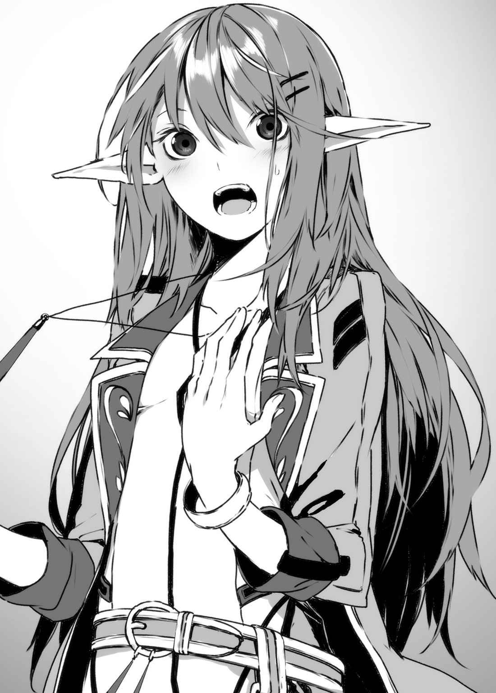
席の少し離れた場所では、テイカーがソーサレスに『おまえも結構、挑発得意だろ』と言っていたが、優 雅 にティーカップを掲 げるソーサレスの返答は、『彼女には勝てないわね』だった。
「では、アイリスが挑発メッセージを作ることに賛成のものは、拍手を」
満 場 一 致 、割れんばかりの拍 手 喝 采 が、ギルドハウスの会議室に沸 き起 こった。
生まれてこの方日 陰 者 。才能に恵 まれず、壇 上 で拍手を浴びることとは無 縁 であったアイリスは、この対応に何を勘 違 いしたか脳内麻 薬 をドバドバ出 し、満 更 でもないような表情で、『そ、そう？ じゃあ、仕方ないわねぇ......』などと言っていた。ノセられやすい少女であった。
さて、アイリスがメッセージに挑 む。多くのプレイヤーが彼女の周囲に集まり、打ち出される一語一句に顔を青くする中、キルシュヴァッサーの方へと歩いてくる影 があった。
マツナガだ。
「マツナガ殿 」
「やぁ、キルシュヴァッサー卿 。聞き忘れてましたが、ツワブキさんはどうしてます？」
「いつも通りです。自由に動かれていますな。具体的なお話はできませんが、現在、シスル本社とは別の形で事件の真相に迫 っておられますよ」
「なるほど。じゃあ、俺 たちのやってることは無駄になるかもしれないね」
そう言いつつ、この〝お祭り〟を止めるつもりは、マツナガにはないらしい。
「あの、マツナガ殿」
「なんです？」
しばしの躊 躇 の後、キルシュヴァッサーの方からも、彼にある相談を持ち込む。
「カネに糸目をつけない場合、作戦決行までにどれだけ私は強くなれるのでしょうな」
「ふむ？」
キルシュヴァッサーもゲーマーだ。だが、データ的な知識なら、マツナガは圧 倒 的 に優れている。ゲーム内での率 先 しての検証。攻略Ｗｉｋｉの作成。キングキリヒトの強さの謎 に迫り、そのビルド方針を検証してＷｉｋｉに上げたことすらある。もっともそれは、桐生世良の卓 越 したゲーマースキルがあってこそ実 践 可能なもので、後追いするプレイヤーはみな悉 く撃 沈 していったのだが。
ともあれ、そのようなマツナガであれば、自分よりもより良い育成方法を知っているのではないだろうか、と思ったのだ。
扇桜子の手元には、今、一朗のパラジウムカードがある。
限度額は無限。ＪＰモルガンのプライベートバンクに保有された一朗の口座から、カネが尽きるまで使うことを許されている。用 途 としてはあまりにもしょっぱいが、一朗は本気だし、彼が本気である以上、桜子も本気だ。すなわち、キルシュヴァッサーも本気だ。
「なるほどなるほど」
マツナガは察したように頷 き、しばし何かを思案した。
「キルシュヴァッサー卿、あんたはまだギリギリ中堅層ってとこだけど」
「はい」
「ま、パチローさんをおびき寄せて、迎 撃 作戦を行うのは明日になるだろうから、どんなに早くても作戦開始まであと12 ......13 時間ってとこですかね。それくらいの時間と、石蕗さんのクレカがあれば、トップ層には余 裕 で食い込めますよ。色々とアブない手も使いますが、あんたが俺を信用してくれるならですよ」
マツナガは続けた。
「まだ検証途 中 ですが、中央魔海にレベル上げとスキルポイント上げに適したミニクエストがあるんですよ。掛けうるだけの課金ブーストを使用してから、ひたすらそのミニクエを回すんです」
「アブない手段というのは？」
「俺が育成代行をやりましょう」
その言葉の意味するところが、わからない桜子ではない。
利用規約では、リアルマネーによるアカウントの売買や、有 償 による育成代行を禁止している。アカウントの譲 渡 や無 償 の育成代行は明記こそされていないものの、限りなく黒に近いグレーゾーンだ。赤き斜陽 の騎士団 の団長ストロガノフは、そのグレーゾーンに抵 触 する行為を行ってはいるのだが。
問題はそれだけではない。顔も知らないプレイヤーに対して、一時的にではあるがアカウントを預けることになる。マツナガがちょっとした気まぐれを起こせば、そこでアカウントを奪 われるのは、今度は桜子になるのだ。
マツナガを信用していないわけではない。加えて、もし彼に魔が差したとしても、サーバーにカード情報を置かない以上、マツナガが一朗のクレジットカードを不正使用することはできない。
だが、軽々しく頷ける提案でもなかった。インターネット上におけるセキュリティ意識は、信用・信頼とはまったく別次元で考えなければならないのだ。
「朝７時くらいにはまたログアウトしておきます。あんたはそのあと改めてログインして、まぁ防犯を意識するならパスワードを変えたほうがいいでしょうねぇ。そこから作戦決行までの間、今度はあんた自身が育成を行うんだ。夜の間に育成チャートは作っておきましょう。対パチローさん用に特化した、まぁいささかピーキーなメイクにはなりそうですがね」
だが、現在パチローが、アカウントの管理サーバーを手中に収めているのであれば、セキュリティ意識など薄 紙 一枚分の守りにもなりはしないだろう。さらに運営はいま、ゲーム内の細々とした規約違反に目を向けている余裕もない。
この思考は、果たしてナンセンスであろうか。
それは君自身が決めることだ。一朗ならばそう言うだろう。
「お願いします」
桜子 が言い、交 渉 はそのようになった。
この使い方が正しいのかどうか、わかりはしない。だが、ベストは尽くさねばならない。たとえそれがゲームの中であったとしてもだ。自身のアバターが強くなるという楽しみよりも、グレーゾーンに抵触しているという背徳感よりも、桜子の胸中は今、使用人としての使命感に燃えていた。
その後、作戦について具体的な話し合いが進行する。
本格的な作戦会議である。戦 闘 経験の豊富な騎士団のメンバーと、データに詳 しいマツナガを主導として、改めて進める。運営の対応は一両日中に終了するであろうという一朗の意見を伝えると、ストロガノフは『意外と放っておいてもなんとかなりそうだな』と言い、マツナガは『でも面 白 そうだから対策会議は続けましょう』と会議を続行させた。『遊びのつもりなの？』という意見に対しては『だってゲームでしょう』と返してくる。ぐうの音も出ない。
夏休み期間である。パチローがゲーム内で暴挙を働くとして、その対象となるであろう初心者～中堅プレイヤーは、おそらく朝食後から昼にかけての間にログインする。現在、ヴォルガンド火山帯の深奥部で息を潜 めているらしきパチローだが、力を誇示しやすい彼らが増える時間帯に、行動を開始するのではないかという予測が立てられた。
パチローが働きうるもうひとつの暴挙。すなわち、他人プレイヤーのウェブマネーやクレジットカードの不正使用に関しては、楽観視して良いだろうというのが苫小牧の意見であった。パチローの目的はあくまでも暴力の行使である。
では、ゲーム内におけるパチローの行動に対してはどのような対策を取るべきであるか。
現在、ヴォルガンド火山帯深奥部につながる唯 一 の通路は、双頭の 白蛇 のボウガン部隊によって封鎖されていた。パチローが行動、移動を開始すれば即 座 に確 認 が取れる。パチローの動向を更に詳しく把 握 するために、マツナガ自身も一時的にアイリスブランドにギルドメンバーとして加入した。アイリスはすごくイヤそうな顔をしていた。
パチローがアクションを起こすとすれば、早くて朝９時頃 、遅 くとも昼過ぎではないかと考える。アイリスによるフレンドメッセージで適度に挑発し、被 害 が拡大しないようパチローのヘイトを釘 付 けにしておく。
アイリスによる挑発で最終的にはパチローを引きずり出し、準備を整えた戦場で袋 叩 きにするというものだ。
「できるかしら」
と、ソーサレスがぽつりと言う。
「どうだろうな」
テイカーがぼやいた。
確かに、《不死属性》は解除されている。全方位から攻撃を加えれば、ダメージを与 えることは可能なように感じられた。しかし、その場にいる全員は、いまだにツワブキ・イチローというアバターが持つデータの全容を、知っているわけではないのだ。
「不死身でなければいつかは倒 せる。不死身でなければな」
「でもなんかツワブキってすごい不死身っぽさあるよネー」
ストロガノフの言葉に、あめしょーが水を差した。
「ドラゴネットですからね。《竜 鱗 》による防 御 性能に加え、《リジェネレイト》などの継 続 的 な回復スキルを所有している可能性は高いでしょう。問題は、それを持っていたとして、今までツワブキさんは、そんなものを使うまでもなく無 双 できていたということですがね」
一同に沈黙が落ちる。たった１人のプレイヤーを袋叩きにするのに、これほどまでに絶望感が漂 うものだとは、誰 も思っていなかった。ナローファンタジー・オンラインというＶＲＭＭＯのバランスが、実にピーキーだと思い知らされる一 瞬 である。
「ですが、あの方はイチロー様ではありませんよ」
キルシュヴァッサーが、その事実を改めて告げた。その場の全員の視線が、キルシュヴァッサーへと向けられる。
「あれはパチロー様です。イチロー様とは似ていますが、決定的な違いがある」
その言葉に、肩をすくめるのはマツナガだ。
「精神論ですね。ま、でもそう思うことにしときましょう」
「そうだな。やるしかないのだ」
「いや、やるしかないってことは、無いと思うけどにゃー。本当はぼくらが何とかするべきことじゃないし」
あめしょーはケタケタと笑っていた。
「でも、やるからには徹 底 的 に、だネー」
結局は、その言葉に帰結する。
みな、パチローをブン殴 りたいのだ。
「できたわー!! 」
挑発メッセージを作成していたアイリスの、高らかな叫 び声 が聞こえてきた。周囲の一同は、渋 面 を作ってその文面を覗 き込んでいる。一部、気分が悪くなったのか壁 に背を預けうずくまっているものまでいた。
一体どんな内容になったのか。キルシュヴァッサーも見に行く。
「おお、これは......」
アイリスは天才だった。フレンドメッセージに連ねられた罵 詈 雑 言 の数々は、ひと目見て、こちらが軽くヒくほどの才能があった。文面に関しては彼女の名 誉 のために伏 せることとする。
ギルドハウスに、彼女の才能を称 えるまばらな拍手が湧き起こった。
「才能って、ままならないものよねぇ」
まるで他人事のように、ソーサレスがぽつりと呟 いた。
目が覚めてしまった。普 段 から生活リズムの狂 った毎日を過ごしているからかもしれない。桐生世良は、大きな欠伸 をした。座席に設置された個人用テレビも消えたまま、読書灯もつかない。窓も閉められていた。夜間の快適さを保つための努力であろうが、こうして下手に目を覚ましてしまうと退 屈 でどうしようもない。周囲からは寝 息 やイビキが聞こえてくるので、携 帯 ゲーム機を取り出すつもりにもなれなかった。
ふと、隣 の席を見ると、石蕗一朗がいない。
どこにいるのだろう。聞いた方が早いかな、と思い、アテンダントの呼び出しボタンを探したが、そんな世良に上からそっと声がかけられた。
「桐生さま、いかがなさいましたか？」
こんな暗 闇 の中で、一瞬で反応されるとは。
ファーストクラスの一流サービスとはこうしたものか！ と思う反面、ややコミュ障気味の世良としては思わず口ごもってしまう。
「あ、ああいや。あの、隣の席の、おっさ......お兄さん」
「石蕗さまでしたら、バーカウンターにいらっしゃいます」
「バー？ お酒飲むところ？ 飛行機の中なのに？」
「お酒以外にも、ソフトドリンクも取 り揃えてございます。ビジネスクラス、ファーストクラスのお客様のみご利用いただけます」
思わず、世良は目をぱちくりさせてしまう。
父が外資系のサラリーマンである桐生家は、名古屋の住宅街に一 軒 家 を持てるほどには裕 福 だったりするが、それでも一 般 中流家庭だ。そんな世良からすれば、なんだか、雲の上のような話だ。いや、実際今は雲の上なのだが。
世良の父は、『妻と子がゲームに興じる姿を眺 めるのが何よりも楽しい』という変わり者で、給料をめちゃくちゃ高いアーケードゲームの筐 体 に費やしたり、新作ソフトを大量に買うのに費やしたりして、子供の世良から見ても無 駄 遣 いが激しい。それでも、たまに出張から帰って来る父が、居間のテレビ前に座 ってアツいゲームバトルを繰 り広 げる自分と母を見て幸せそうに笑ったりするから、『これで良いのかな』と思ったりする。
閑 話 休 題 だ。
「案内してもらっていい？」
「かしこまりました」
アメリカから戻 ったら、今度は母とイタリアに行くのだろうが、それは多分エコノミークラスだ。ファーストクラス特有のサービスというのは、今のうちにたっぷり受けておきたい。
「いま、どのあたりなの？」
「太平洋上空、高度３万９千フィートを予定通り飛行中です。日本時間ですと８月４日午前１時過ぎ、シカゴ・オヘア空港にはあと６時間半ほどで到 着 予定です」
「ふーん」
世良はまた大きな欠伸をして、アテンダントの後をついていく。
アテンダントに案内されて、バーカウンターに入る。こじんまりとした空間だが、雰 囲 気 はあった。搭 乗 早々眠 り込んでしまったので、断ったウェルカムドリンクの代わりに最初の１杯 は無料サービスすると告げられ、アテンダントはさらに入国関係の書類をここで書くよう『おねがい』を入れてきた。当然、了 承 する。
「やあ、キング」
グラスを掲げた一朗が、そこに座っていた。
「おっさん」
と、挨 拶 して、世良は椅 子 に座ろうとする。が、椅子がやけに高い。小 柄 な世良がなんとか飛び乗ろうとすると、横から一朗がスッと手を伸 ばし、その手を掴んで引っ張り上げてくれた。
「どうも」
礼を言って、入国書類への記入をする。英語ばかりだった。
「.........」
「手伝おうか」
「いや......。うん、わかんない単語があったら聞く」
不登校だったが、勉強をずっとサボっていたわけではないのだ。中学２年の英語力でおのずと限界もあるだろうが、最初から頼 るのはプライドと美学に反する。世良はカプコンのゲームが好きだ。あの〝死んで覚えろ〟と言わんばかりの突き放 した姿勢が大好きなのだ。
カウンターの中に座る黒人のバーテンダーが、何か言ってきた。早口の英語で聞き取りにくいが、注文を尋 ねてきたのだろうと思い、『ソフトドリンク。できれば炭酸じゃない奴』とだけ答えた。隣で一朗が、英訳してそれを告げる。
「飛行機の中にバーカウンターなんか置いて、平気なの？」
英語の書類を必死で読み解きながら、世良が尋ねた。
航空機というのはとかくバランスが悪いもので、乱気流などに巻き込まれた際、立ち歩いていた客が負傷し裁判沙 汰 になった例などというのも、枚挙に暇 がないと聞く。それを考えると、バーカウンターの設置は航空会社としてはかなりの英断である。
「たまにあるよ。こういうのはね。エミレーツとか、ヴァージンアトランティックとかね」
「それ、航空会社の名前？」
「うん、そう。明日葉の家族をドバイに連れてった時に使ったのは、エミレーツ航空だったかな。確か、この飛行機と同じ、エアバス社のＡ３８０ジャンボジェットだ」
すらすらと自然に出てくるあたり、下調べなど一 切 なしの知識なのだろうな、と常々思う。話しているだけで住む世界が別であると思ってしまうが、すぐにその考えを打ち消す。別であるものか。同じ世界だ。異世界トリップじゃないんだから。
「僕 は空の旅自体はあまり好きではないけど、エミレーツのサービスは好きだな。いや、ここも中々悪くないけどね」
ちらりと後ろを見てそう言うと、待機していたアテンダントが笑 顔 で『ありがとうございます』と頭を下げる。
「エミレーツは、『何をするかわからない航空会社』って言われていてね」
「まるでおっさんだね」
「それ、叔 父 さんにも言われたなぁ」
一朗は愉 快 そうにグラスを揺 らした。
苦労しながら、なんとかアテンダントの持ってきた入国書類に記入し終える。わきでそっと控 えていたアテンダントは、すぐにそれを手にし、問題ないことを確認してから一礼して去っていった。さすがに一流なだけあって、気品あふれる動作である。
バーテンダーがジュースを出してきた。どうやら、書き終えるまで待っていてくれたらしい。世良は英語でサンキューと言おうとして、隣にいる一朗に恥 ずかしいので、軽く会 釈 するにとどめた。
「勢いでついてきたけど、アメリカか......」
ぽつりと、世良が呟く。
「社会勉強だと思えば、悪くないんじゃない？」
「なるかな。勉強に」
そもそも、世良がついて来たのには、一朗と会う以外に目的がある。
パチローを動かしている人物。このアカウントハック事件の主犯と邂 逅 することだ。
パチローは、明らかに一朗のことを意識していた。それを口にしたわけではないが、ほぼ間違いない。だから、同じように石蕗一朗を意識する者として、はっきりと告げてやらねばならなかったのだ。『そのやり方は違う』と。
世良は、自分が一朗になれるとは思っていない。ただ、目指すべき存在ではあると感じていた。今、自分の横で優雅に酒を嗜 んでいるこの男は、桐生世良にとって、いつか打倒しなければならない目標である。
その一朗の姿とやり方を模して、我 儘 に振る舞 おうとする〝子供〟が一体誰なのか。この目で見、必要とあらばもう一度対決しなければならないという思いがあった。
ふと、疑問に思うことがある。
「おっさんさ」
「ん」
「なんでナロファン続けてんの？」
グラスを片手に、一朗へと視線を向けた。碧 い瞳が、薄 暗 いバーの中で、正面からまっすぐに世良を見る。一朗はその目を宙へと戻し、涼 やかな笑 みを浮 かべながら、グラスを揺らした。
「そうだね、理由を言語化しようとすれば、いくつかあると思うけど」
いつものように、もったいぶった前置きをする。
「僕はあの世界が楽しいから。好きだから。という事実に収 斂 される」
「その辺をもっと分解して説明してほしいんだけど」
「雑多な内容になるなぁ。君とはもう少し、切り口の鋭 い話をしたいんだけど」
「それはおっさんの勝手でしょ。こっちはさ、子供だよ」
「じゃあ、理由のひとつを話そう」
一朗は空にしたグラスを、バーカウンターに置いた。
「君だ」
まさか酔 っているわけではないだろう。だが、石蕗一朗はきっぱりとそう言う。
「もちろん、君だけではないけど。アイリスとか、エドとか、最近では明日葉もそう。みんな、僕がこちらの世界で求めて、それでも中々手に入らなかった関係だから」
「それって、おっさんにケンカ売ってるってこと？」
「ものすごく端 的 に言えば、そう」
退屈だったんだよ、と、一朗は言った。
新しい刺 激 というものが、なかなかない毎日だった。その日その日はそれなりに楽しく過ごせるが、次へと継 続 する楽しみがない。たまに桜子にちょっかいを出して、料理対決したり、掃 除 対決したり、真夏に暖 房 全開にしてコタツでガマン大会をしたり、そういうことをするのは楽しかったが、それも毎日できることではない。
「おっさんそんなことやってたの......？」
「桜子さんの名誉のために、何勝何敗かは言わないでおこう」
家事はともかく、ガマン大会は一朗の全勝だろうな、と思う。
「だが、君は違う。ゲームの中で、常に僕に抗 しうる存在だった。それが凄 く嬉 しかったし、楽しかった。もっと嬉しかったのは、君が僕にまだ挑 戦 する気でいるってこと」
見 抜 かれている。当然か。
世良は一度だって、一朗に負けた事実を忘れたことはなかった。あの勝負が清 々 しかったのは確かだ。自分は、あの時確かに〝キングキリヒト〟と一体になって、石蕗一朗を圧倒した。あと一歩のところまで、追 い詰 めたと思う。
楽しい勝負だった。
だが、悔 いが残らなかったかというと、そんなことは絶対にない。
負けたことは、悔 しい。だから、次は勝ちたい。
常にそんな思いを抱 いて、今までもずっと訓練を積んでいる。
「他の人もそうなの？」
「そうだよ。特にアイリスなんかは、まさにだよね。君とはまた違うベクトルだと思うんだけど」
一朗は、そのアイリスのこともいたくお気に入りのようだった。
彼 女 には才能がない。だが、その現実に真っ向から挑み、よくくじけ、よく挫 折 するが、それでも決して諦 めない。恵まれすぎた一朗の対極に存在する人間だし、おそらく、世良ともまた違う立場にいる。
そんなアイリスが、常に一朗と対等の立場であろうとすることが、嬉しくて仕方がないのだと語った。
「じゃあ、石蕗さんは？」
「明日葉も、またちょっと違うかな。彼女は、自分の殻 を破ろうとしているよ」
石蕗明日葉。一朗のハトコで、世良のクラスメイトだ。
明日葉にとって、一朗は親 戚 のお兄ちゃんで、初 恋 の相手だとは聞いていた。イチ兄ぃイチ兄ぃと慕 っている様子を見るに、まだその気持ちは残っている。オトナになって、イチ兄ぃ離 れをしなきゃ、とは言っているが、それが実行できている感じは、あまりない。
「ただ、明日葉は最近、僕がいる場所とは違う方を見始めている」
「そう？」
「うん。キングやアイリスみたいに、しっかりとした目的があるわけじゃ、無いと思うんだ。でも、そういうものを探そうとしている。みんな、僕の知らないところで成長していくんだ。なんだか、それが無 性 に嬉しい」
一朗の言葉は、常に上から目線だ。自分の圧倒的優位性を確信し、それをまったくもって疑っていない。世良ですら腹立たしいと思うのだから、例えばアイリスなんかにとっては、なおさらだろう。
「なんか、おっさん見てると、ＲＰＧの魔 王 みたいだね」
「それ、よく桜子さんにも言われる」
「じゃあ、はっきり言っておくけど」
グラスのジュースを飲みほして、世良はカウンターに置いた。
「魔王はいつか負けるよ」
そうして、いまだかつてないほどの強い視線を、石蕗一朗へと向ける。
「勇者が戦士 か、魔術師 か、盗賊 かは知らないけど。あなたはいつか負ける」
「それは、ゲームのお約束だからかな」
「そうかもしれない」
一朗の笑みは不敵なものだ。だが、リアルの彼 と顔を突 き合 わせれば、こんな言葉が口から飛び出してくるのは、わかり切っていた。宣戦布告だ。
キングキリヒトは、負けない。
いつか必ず、この男を倒す。
「楽しみにしていよう」
自信たっぷりにそう告げる様は、確かにラスボスそのものだった。
目を覚ました時に世良も一朗も見当たらず、泣きじゃくる明日葉を連れてアテンダントがバーカウンターを訪 れるのは、それから数分後のことであった。
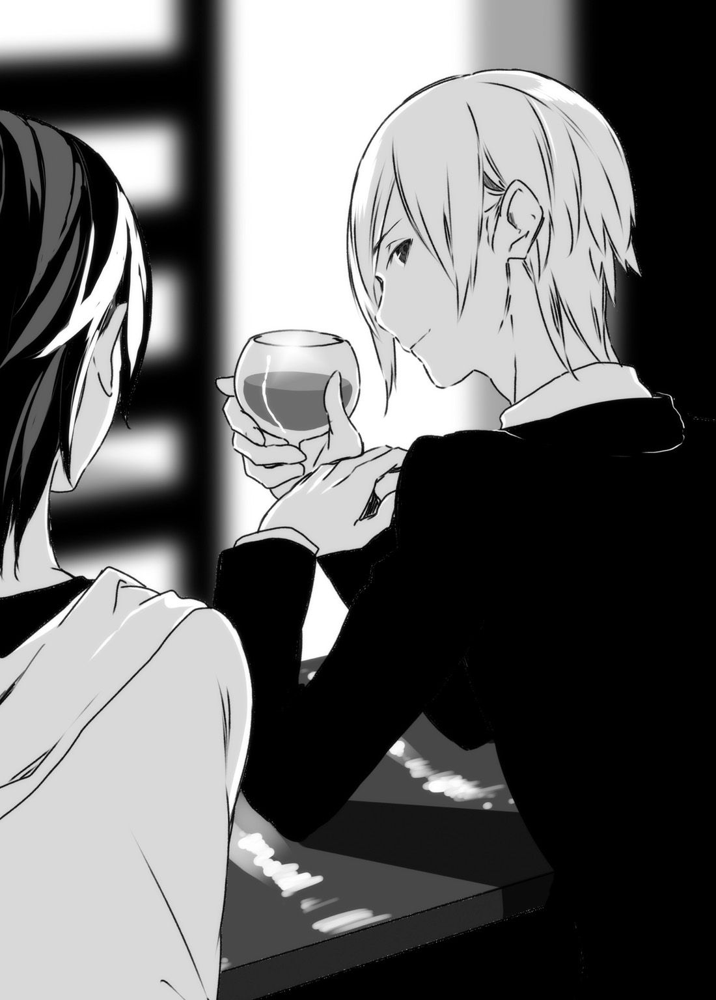
５―御曹司、目的地に到着する
扇 桜 子 、決戦の朝を迎 える。大 仰 な言い方も彼女の視点に照らし合わせれば間違ってはいない。
気合を入れるために、いつもとまったく同じ朝を過ごす。冷水シャワーで目を覚まし、ドライヤーをかけてから紙を......ではなく髪を梳 く。そのあとは歯を磨 いて、いつもと同じメイド衣装に着 替 えた。鏡台の前に座り、化 粧 箱 を開く。
桜子はこれから戦場に赴 く。使用人 にとって戦場とは、普段過ごす場所と同じでなければならない。常在戦場。戦闘服 に身をつつんだからには、すべてを仕事モードにチェンジである。ならばこのナチュラルメイクも戦 化 粧 だ。最後にホワイトブリムを被 って、扇桜子は完全体となる。パイルダー・オンだ。
「よしっ......！」
両手を持ち上げて天 井 に向かって吼 える。
朝食の仕込をし、洗 濯 機 を回し、主人のいない一 朗 の部屋を清 掃 し、いつもよりやや早めの時間に食 卓 へ就 く。一朗がいない日は大 抵 食事も適当になるが、今日は違った。カリカリに炒 めたベーコンとスクランブルエッグ。トースト。サラダ。スープ。『いただきます』と『ごちそうさま』も欠かさずに。食後のコーヒーもしっかり入れる。
ミライヴギア・コクーンのシートに座ったのは、マツナガとの約束どおり、午前７時を少し回った頃であった。
ログインを済ませる。扇桜子から、さらにキルシュヴァッサーへとチェンジ。意識を切 り替 えた先、視界に映るのは、彼女がログアウトした騎士団のギルドハウスではなく、霧 の立ち込めた湖 畔 であった。周囲でサハギン達 が陸に上がり、寝 っころがっている。こちらに攻 撃 してくる気配はない。
「ふむ......」
キルシュヴァッサーは、顎 に手をやった。
おそらくここは中央魔海だ。マツナガが育成代行をしてくれたと見て良いのだろうか。フィールドに置き去りとは少し雑ではないかとも思うが。メニューウィンドウを開き、自身のステータスを確認する。レベル１３０超 。トッププレイヤー層にも十分匹 敵 するレベルだ。たった６時間でここまで上げられるものなのか。驚 きはあるが、嬉しさのようなものは、あまりなかった。
やはり、自分はレベルアップしていく過程も好きなのだ。という再確認をする。今回ばかりは、自身の手でパチローを止めたいという思いもあってマツナガの提案に乗ったが、ゲームプレイヤーとしては甚 だもったいない気持ちがある。
こちらの能力構成 に関して詳しい説明はしなかったのだが、さすがにマツナガはよく理解していた。ステータスの伸びも筋力系に偏 重 している。これならば、武器や防具ももう１段階上のものを揃 えられそうだ。資金は減っていたわけではないが、思っていたほど増えていない。マツナガの言うミニクエの稼 ぎがあまり良くないのか、彼がこっそり育成料として持っていったのかはわからないが、まぁどちらでも気にならない。
スキルはどうか。こちらも従来の能力構成 に沿った育ち方をしている。鉄 壁 の守護はさらに堅 く。あとは支 援 と攻撃を中水準程度で両立させる。全体のスキルレベルが大きく上 昇 し、スロット数が厳しくなってきそうだ。
現状でどれほどの攻 撃 力 と防 御 力 が出るのか。データ上の数値は確認できているが、こうなると試 し斬 りをしてみたくなる。周囲を見 渡 しても、浜 辺 でのんびりと寝っころがっているサハギン以外、ＭＯＢを確認できない。
いくら感情や意識を持たないデータの塊 といえど、のんびりと休んでいるサハギンを攻撃するのはいささか気が引けた。これは極度な感情移入でもなんでもなく、ゲームプレイヤーとして当然の心理であろうとキルシュヴァッサーは思っている。憎 めない行動をさせ、倒すことに罪悪感を覚えさせるモンスターというのはどのゲームにでもいるものだ。
ナイトソードを抜 き、どこかに良い相手はいないかと探していると、霧の向こうから誰かが歩いてくる。少し身構えた。キルシュヴァッサーの知覚ステータスでは、この霧の中、他のキャラクターの動きを見ることは難しい。
「やぁ、どうもどうも。キルシュヴァッサー卿」
軽薄な笑みを貼り付けたエルフの姿を確認し、キルシュヴァッサーはナイトソードを鞘に収めた。
「マツナガ殿」
キャラクターデータの育成代行をしていたのがマツナガだとすると、彼は先ほどまで、自分とまったく同じアバターを動かしていたことになる。そう考えると、なにやら奇妙な感覚だ。
ひとまずキルシュヴァッサーは、頭を下げた。
「一晩中レベルを上げていただいたようで。ありがとうございます」
「いやぁ何、気にしなくても構いませんよ。俺たちも良い検証データが取れましたしねぇ。高レベルプレイヤー向けの新しい道場になりそうですよ。ここは」
ま、しばらくは情報を公開するつもりはありませんがね、とマツナガは強 かに台詞 を締 める。
「俺......たち、ですか？」
「あぁ、気づきませんでした？ まぁ、卿 の知覚ステータスはそんなに高くなかったしね。ほら、」
ぱちん。マツナガが指を鳴らすと、なにやら風を切るような音が聞こえ、鎖帷子 に身をつつんだ複数のプレイヤーが、無 駄 にアクロバティックな動きを披 露 しながら周囲に集まってきた。霧の向こうから次々に現れ、キルシュヴァッサーの周囲を取り囲む。彼らに攻撃の意思があれば不意打ちは免れなかっただろう。
双頭の 白蛇 の忍者 軍団だ。般 若 面と、ゆるふわ忍者 服。襟もとには絡み合う蛇の紋 章 がテクスチャされている。
「あ、どうも。えぇと、レベル上げを手伝っていただいたということですかな？」
彼らは一様に『ザッ』と足を広げ、胸をそらし、無言で一礼した。角度まで同じである。実は彼らは中身が皆ｂｏｔなのではないかと疑いたくなった。
「マツナガ殿 のところのギルメンは、なんというか徹 底 してますな」
「そういうギルド方針ですからね。なに、これはこれで楽しいもんですよ。チャットではみんな個性的なんだけどね」
プレイヤーの上に表示された名前を見ればそれはわかる。
マツナガは『さて、』と話題を切り替えた。一晩中キルシュヴァッサーの育成代行をしていたというのなら、徹 夜 仕事である。もうかなり疲 労 困 憊 ではないかと思うのだが、彼の態度は妙に生き生きしていた。
「パチローさんはまだ動きを見せていません。まぁ読みどおりですね。ただ、火山帯にこもってリザードマンを狩り続けているようですから、ステータスやスキルレベルは地味に上がっているでしょう。ひとまず、予定通りにいきましょうかね」
そう言って、マツナガはウィンドウを操作し、こちらにフレンドメッセージを送ってくる。タイトルは『育成チャート』となっていた。
マツナガのブログや、彼が運営する攻 略 ｗｉｋｉにおいても、プレイヤーキャラクターの効率よい育成方法を記したチャートが記 載 されている。元来の性格として几帳面なのか、通常時や課金ブーストを使用した場合のタイムスケジュールまで載っているのが細かいところで、キルシュヴァッサーも自身の育成方針を定めるのに何度か参考にしていた。
「今回のこれは、私専用の育成チャートということで？」
「はい。とりあえずミニクエを回しながら色々考えましてね、卿には対パチローさん用のリーサルウェポンになっていただきますよ」
それは願ったりだ。もちろん、マツナガがキルシュヴァッサーの育成代行を申し出たのは、最初からそうした目的があったからだろう。こちらがいくらでもカネを使えるという前提ならば、通常のプレイでは追いつかないようなレベリングも可能となる。今のところ、成長に使用した課金ブーストは大した額ではないのだが......。
キルシュヴァッサーはメッセージを開き、チャートに目を移す。コンセプトとして、キルシュヴァッサーに欠けている決定力の補填を目的とした育成チャートであるという旨が記載されていた。さもありなん、と頷 きながら、メッセージをスクロールしていき、次 第 にキルシュヴァッサーの顔が引きつっていく。
「ま、マツナガ殿......これは......」
「はい。攻撃力の強化です。こればっかりは、実際に課金を行いながら育てる必要がありますからねぇ。卿が直接ログインするまで、レベルアップとスキルレベルの確保に専念していたのは、そういうわけなんですよ」
確かに、これはキルシュヴァッサーでなければ......というよりは、一朗のクレジットカードでなければ行えないような強引な育成手段ではあるが、しかし......。
「ツワブキさんのおカネと、俺 のデータ知識が合わさればざっとこんなもんです。いかがです？」
「い、いかがですも何も！ しかしこれは......！」
キルシュヴァッサーは、思わず声が上ずった。無理からぬ話なのだ。育成チャートに記載された内容はあまりにも冒 涜 的であって、庶 民 出身である桜子 の金銭感覚が耐え切れるかどうか危ういラインである。これを実行してしまったら、自分はなにかこう、大切な境界線を踏 み越 えてしまうような気がした。
しかし、マツナガは軽薄な笑みを浮かべたまま、指を左右に振 る。
「卿、クレジットカードは持ってりゃ嬉しいただのコレクションじゃあない、強力な兵器なんですよ。兵器は使わなきゃ。高い金かけて作ったのは使うためでしょ？」
「ま、マツナガ殿......。ハマり役ですな......」
「悪役台詞がってことですかね？ 褒 め言葉ですねぇ。俺はああいうキャラ好きですよ」
やはり相談する相手を間違えたのだろうか、という考えが頭をよぎったが、すぐに首を振って打ち消した。
マツナガの言うとおりである。桜子 は託 されたのだ。ツワブキ・イチローの〝カネの力〟を。それを存分に振りかざすことこそが、力を託された者の使命。過ぎたる力に身を滅ぼされるかどうかは、そんなものしょせん些事なのだ。使命を果たすことが従者の務めである。
拳 を掌に打ち付ける。ガントレットがぶつかって、がしん、と音が鳴った。
「やりましょう。ご鞭 撻 、よろしくお願いいたします」
「結構結構。パチローさんの行動次第じゃ、予定は多少前倒しになりますがね......。ま、すぐに無双できるようになりますよ。カネの力でね」
キルシュヴァッサーは、霧に包まれた中央魔海の空を見上げた。
ご覧になってはいないでしょうが、一朗さま。私も、一朗さまに託されたおカネで、いけるところまで行ってみます。庶民の心を持ちながら、激しい金銭感覚によって目覚めた伝説の戦士 、スーパー課金プレイヤー・キルシュヴァッサーとして蘇って見せます。
使命感は、どこか間 違 った方向に暴走を始めていた。
この道を行けば、主人である石 蕗 一朗の奔 放 な金銭感覚に近づくこともできよう。それもまたやはり、使用人としての矜 持 が示した、覚 悟 の形であったのかもしれない。
『いきなり電話をかけてきたと思ったら、用件はそれか!? 』
電話口の向こう、英語でがなり立てるのは、一朗の大学時代の友人だ。
『こういうのはアポイントを取るのが普 通 だろう一朗！ 俺だって暇じゃないんだぞ！』
「すまない、急ぎの用だったんだ。実はもうシカゴに着いているので、あと数時間でそちらに到着する」
『アホか！』
シカゴ・オヘアの空港ロビーを行きかう人は多い。世 良 は相変わらず携帯ゲームを開き、明 日 葉 はキャリーケースの上に腰 かけながらキョロキョロしていた。『シカゴかぁ......』と時折口にしているのを見るに、レッドソックスはそこまで贔 屓 にしているわけでも、ないらしい。
一朗たちは、このシカゴから自家用ジェットに乗り換えてピッツバーグを目指す。乗り継ぎのタイミングのいい便があまりなかったので、前もって手配しておいたのだ。多少待てば国内便もあるのだが、かれこれ11 時間半、退屈な空の旅を続けてきた一朗は、受動的でナンセンスな移動手段にこれ以上身を任せるつもりにはなれなかった。
ただ、ちょうどシカゴについたあたりで、一朗は例の研究所の友人に連 絡 を取っていなかったことを思い出 し、こうして電話をかけたのだ。結果、カリフォルニア出身の友人から、西海岸特有の実に口汚い罵 声 を浴びせられている。ま、一朗には馬耳東風だ。
「改めて用件を話そう。チャールズ。実は先に調べておいて欲 しいことがある」
『お前がスポンサーじゃなければ、電話機ごと外に放り投げているところだ』
「君のところの機材は全部僕が出資しているのでやめておいた方が良いね」
この２人の関係が今どのようなものであるかと言えば、この一言に集約されるだろう。一朗が、本格的にロボット工学の研究をしたいといい始めた友人のために資金を出してやったのが、もう５年近く前である。当時は一朗も、資産の転がし方が堂に入り始めた時期である。膨れ上がりつつあった総資産の一部を、半分はビジネス、半分は友情で、彼の夢に宛ててやった。
結果としてそれなりに上 手 くやっている。その夢というのは、『自律稼 動 するメイドロボを作ること』であって、一朗以外にまともなスポンサーは現れなかった。現在は人工知能の開発に力を注いでいる模様だ。一朗はメイドロボにさしたる興味はなかったが、それでもプロトタイプが完成すれば１台送ってもらう予定となっていた。
メイドロボットの件は桜子には秘密だが、技術の進歩からいっても、完成する頃 には寿退職していそうでもある。彼女が行き遅れてさえいなければ。
「君の研究所のサーバーに、外部から不自然なアクセスがなかったか調べて欲しい」
『なに？』
「詳 しい事情はあとでメールで送るよ。僕の見立てが正しければ、そちらのサーバーに不正なプログラムが侵入しているはずだ。ただ、それを見つけても、消さないで欲しい」
『いきなり意味のわからない話だな。そうしろと言われれば、そうするが......』
「ありがとう」
『まったく、さっきも言ったが、そういうのはもっと早く連絡するもんだ。来るのはお前ひとりか？』
「いや、ハトコとその友人を連れて行く」
一朗は、退屈そうにしている明日葉と世良を見やった。今は完全な英語でしゃべっているので、２人は首を傾 げるだけだ。
『ハトコ!? アスハチャンか!? 』
「うん」
『ヒャッホウ！ 一朗、アスハチャンは確かまだプライマリースクールだったな！』
「いや、もうジュニアハイだよ」
『そ、そうか......。いや、だが良い！ 日本人は見た目幼いからな！ できれば写真に撮らせてくれ！』
「彼女が了承すればね」
チャールズは、いつか犯罪を起こしてしまわないかが心配だ。その情熱が、しっかりとメイドロボットに向けられるように、やはり一朗は今後も資金援助を惜しまない。友人のあまりおおっぴらに言えない性癖を改めて認 識 し、一朗は電話を切った。
「あ、イチ兄ぃ、どうだった？」
「明日葉の写真を撮ることになった」
「ええ!? 」
話のつながりがまったく見えずに、困 惑 する明日葉である。世良は興味なさそうにゲームをやっていたが、ぴくりと眉 を動かしている。
「さて、どうしようか。もうピッツバーグに向かっても良いんだけど」
「あたし、お腹減ったー」
すらりとしたお腹を撫でながら、明日葉が呟 く。確か、少食である世良の分まで機内食をバカ食いしていた記憶があるのだが、まだ食べ足りないらしい。満腹中枢に異常をきたしているのか、単に育ちざかりなのか。中学生だてらにアスリートであるから、新陳代謝が良いのかもしれない。
「それじゃあ、シカゴに来たんだし、適当なピザ屋でも探して入ろうか」
「さんせーい!! 」
「キングもそれで良いかな」
「良いよ」
呑気なものであった。
アイリスは、マツナガ達の要請に従う形で、午前９時前にログインした。
夏休みに入ってから、ゲームの中ですごす頻度が増したなぁ、と感じる。当然、学校の友人達から誘 いがあればそれに乗るし、そうした日ならば一度もログインせずに一日を終えたりもする。ただ、両親は仕事で一日不在ともなれば、家の中でダラダラすごしても、文句を言ってくる人はいないわけで......。
このままじゃまずいなぁ、なんて思いながらも、今日もログインだ。実は、実際に起こしたいデザインも幾 らか溜まっていて、今度ネムに見せてみようとも思う。また辛口の評価が飛んでくるのは間違いないが、そこに文句を言うのは贅 沢 というものだ。
そんなアイリスが目を覚ましたのは、赤き斜陽 の騎士団 のギルドハウスである。昨晩ログアウトしたところと同じだ。そこにマツナガの姿はないが、すでにユーリがいた。
「おはよー、ユーリ」
「おはよう、アイ」
友人と笑顔で軽めの挨拶をかわす。ユーリは、武 闘 着にポイントアーマー、手甲をつけた軽装備の格闘家 スタイルだ。かつて一 緒 に冒険していた頃に比べると、ずいぶんと頼 もしい出 で立ちとなっている。ことあるごとに『今度、なにか装備を作ってよ』とは言われていたが、彼女の勇ましいファイトに、今年の流行である花 柄 は似合いそうにない。と言ったところで、また自分や御曹司のような高級（っぽい）スタイルでまとめるのもなぁ、というのが悩むところだ。
さて、アイリスは、パチロー討伐作戦の中核メンバーに選出されている。挑 発 的なフレンドメッセージを何度も送りつけ、パチローの注意を釘 付 けにする。体の良いオトリだ。当然、危険が付きまとうものとして、騎士団の分隊長であるティラミスが護衛につく。そして、その護衛の役割には、ユーリも名乗りをあげた。
ユーリは完全攻撃特化のガチガチ前衛職だが、トップ層に比べると実力的に大きな開きがある。護衛といってもパチローの攻撃一発で沈みかねない。アイリスは、友人として申し出を嬉しく思う反面、彼女の身を案じて反対した。しかし、マツナガは『まぁ気楽に行きましょう。ゲームですし』と言って、ユーリの申し出を承認したというわけだ。確かに、いくらボコボコにされようと、装備とアイテムを失うだけで済むわけでは、ある。
インターネットコミュニティにおいて、いわゆるＭＭＯに過 剰 にのめりこむ廃人の実態が多く知られるようになると、彼らを蔑視する風潮が生まれた。『ゲームに対してマジになるのはカッコ悪い』という心理だ。マツナガはここを巧みに突いて『しょせんゲーム』『しかし現実に起きている犯罪』という相反する真実を使い分けていた。アイリスもすっかり流されてしまう。マツナガの本音がどちらに傾いていたのかは知らないが、現状、『犯罪者のデータを拘 束 する』という仰々しい実態に反して、実にゲーム的な、緊 張 感のない雰 囲 気 が漂 っていた。
「アイリスさん、ユーリさん、おはようございますわ！」
元気な声をあげて、ネムもまたログインしてくる。
「ネムさん......というか、芙 蓉 さん、あの、仕事は......？」
「必要な分は片づけてまいりましたわ！」
拳をぐっと握 るネム。彼女は、アパレルブランド〝ＭｉＺＵＮＯ〟の社長兼デザイナーだ。こんなところでのんきにゲームを続けているどころではないと思うのだが、なんというか、実に驚異的なバイタリティを持っているようだった。
「ネムさん、大 丈 夫 ？ 危ないわよ？」
「ご心配には及びませんわ。今朝思い出したんですけど、わたくし、《不死属性》を持っておりますもの！」
そういえばそうだった。
ネムは、実は正規の手段で作られたアバターではない。芙蓉めぐみが、アイリスに喧 嘩 を売るため、友人である野 々 あざみを通じて特 殊 データを適用してもらった、いわばズルのデータなのだ。戦 闘 能力は皆無だが、生産職に必要なスキルとアーツは一通りそろっていて、更 に《不死属性》を持っている。
言い方は悪いが、鬼ごっこにおける味噌っかすのようなものだ。
ただ、やはり危険が伴う。昨日のティラミスのように、パチローがネムに対して猛 然 と襲い掛かり、あらゆる暴力的手段を用いて彼女を叩 き伏せようとすれば、それは真に迫 った恐怖として彼女に伝わるだろう。《不死属性》でも「心」を守れないことは、何よりパチロー本人が証明してしまっている。
「おっしゃりたいことは、理解しているつもりです」
２人に対し、ネムは表情を引き締めた。
「それでも、わたくし、じっとしているなんて出来ませんわ。一朗さんのアカウントとアバターを使って、好き勝手やられるのを、指をくわえて見ているなんて......」
アイリスは、ふぅっ、と溜 め息 をつく。
「わかった。わかったわ。ネムさん。あたし達ができること、そんな多くはないんだけど......一緒にがんばりましょう」
「はい、アイリスさん！」
「みなさん、おはようございます」
と、そこで扉 が開き、ティラミスが姿を見せた。相変わらず落ち着きのある柔和な女性、といったイメージだ。
「おはよー、ティラミスさん」
入ってきたのはティラミスだけではない。他にも騎士団のメンバーが何人か。知った顔はあるが、ごく僅かなトップ層に食い込むような有名プレイヤーの姿はない。
「移動ルートを説明しますね」
そう言って、ティラミスは机の上に地図を広げた。ユーリが少し驚いたような顔をする。
「地図なんて売ってるんですね」
「グランドクエスト後のアップデートで、いろいろ便利なアイテムも増えたんです。デルヴェのＮＰＣショップで買えますよ」
さて、地図は如 何 にも中世風といった趣のあるものだったが、指先でタッチすると簡単な情報が表示される。ハイテクノロジーと言えばそうではあるが、まぁこれもマジックアイテムであってどうのこうの、という能書きがついているのだろう。
ティラミスが指先で地図をなぞり、赤い移動ルートが表示された。出発地点はここデルヴェ。挑発に耐えきれなくなったパチローの出現を待ち、鉢合わせの後に大砂海へと出る。砂上船に乗って北上。目的地は〝死の山脈〟だ。ここで山篭りして日々をすごす苫 小 牧 の情報提供で、抜け道や身を隠すのに適したポイントなどが明らかになっている。挑発と逃 走 、適度な戦闘を繰り返しながら、奥 地 にある渓谷を目指す。
「この渓谷が最終目的地です。パチローさんとの決戦の場になります」
確かに、そこまでおびき出せば、初心者や中 堅 プレイヤーが迷 惑 を被るような事態は避 けられそうだ。
「街の中へは入らないんですね」
「これも苫小牧さんのお話ですが、戦闘禁止区域で長時間足止めをすると、こちらの目的に気づかれたりログアウトされたりする可能性があります。できるだけゲーム内に引き止めておくことも大事ですからね」
相手の行動目的がわからない以上、どこまで縛り付けておけるのかという違 和 感 は、正直ぬぐえない。アイリスはメニューウィンドウからフレンドメッセージの履 歴 を確 認 した。
昨晩の時点で、すでに何度か挑発メッセージを送り、そのたびにアイリスは返信をもらっていた。そうして、確信したことがある。
パチローは、〝煽り耐性〟が少ない。
それを見る限りでは、アイリスの挑発は一定の効果をあげている。だが、怒 らせすぎて果たして問題はないのだろうか。他の仲間たちの言葉端 からは、パチローが予想以上に多くの権限を掌 握 しているように感じ取れた。コンピューター関連にはそう強くないアイリスだが、パチローがその気になれば、自分達のアカウントをも乗っ取ってしまうことは、可能ではないのだろうか。
考えすぎはよくないわね。
アイリスはかぶりを振った。ネムが心配そうに顔を覗 き込んでくる。
「ティラミスさん、ひとまず、メッセージを送ればいい？」
「そうですね。そろそろ始めましょうか」
ティラミスも、メニューウィンドウから現在時刻を確認していた。
「最長で13 時過ぎくらいまでですね。これから４時間、ログアウトする余 裕 はありません。大 丈 夫 ですか？」
「ばっちりよ」
「問題ありませんわ」
「大丈夫です」
オブラートに包 んだ言い方をしているが、まぁ割と深刻かつ下世話な心配を含 む。具体的にはトイレとかだ。
ドライブ中は脳がだまされているのでそう気にはならないが、身体のほうは常に信号を発していて、そのレベルに応じてプレイヤーにもきちんとアラートメッセージが送られる仕組みである。空腹などを含めた生理的欲求を放置しすぎると、今度はアラートメッセージだけではなく、直接脳への信号を解除させる。今まで満腹だったのがいきなり空腹になったり、急にトイレに行きたくなったりして、これがけっこう焦るのだ。
だから、長時間の連続ドライブをするつもりであれば、体調管理はきちんとしておかねばならない。気合の入ったプレイヤーなどはオムツをしてドライブするらしいが、アイリスはそこまでやるつもりにはなれない。
４人は、ギルドハウスの外へと出た。一緒にいた騎士団の数人も一緒に移動する。彼らの役割は、どうもアイリス達の逃走を手助けすることらしく、いわゆる肉壁 となる前提であるらしい。このレベル帯にしてはお粗末な防具だ。デスペナルティで失っても痛くないもの、ということだろう。
アイリスはフレンドメッセージの文面を作成しながら外へ出る。口を開けば憎まれ口が出てくる自分の性格は把 握 していたつもりだが、こうもすらすらと挑発文句が出てくると、途端に性格が悪くなったような気がして、あまり精神によろしくない。
「うわっ、アイそういうこと書く？」
「アイリスさん、お下劣ですわ......」
いつの間にか背後に回りこんだ２人が覗き込んできたので、思わず隠 してしまう。
「ちょっと、見ないでよ！」
メインストリートには、白い馬が一頭置かれている。鞍 の部分には、やはり赤き斜陽の 騎士団 の紋章がテクスチャされていた。このゲーム、アイテムである乗用馬のモーションはあまり多くなく、微 動 だにせずじっとしている様子は少し気味が悪い。
「カスタードです」
ティラミスは言った。馬の名前だと理解するのに時間がかかる。ネムが首を傾げた。
「〝ティラミス〟さんのお馬が〝カスタード〟ですの？」
「漫 画 に出てくる好きな馬から名前を取ったんですよ」
「カスケードは青鹿毛じゃありませんでしたっけ」
「お、ユーリさんわかってますね？ 私も黒い馬が欲しかったんだけど、団長が『ティラミスのイメージなら白だ』って......」
「？」
ティラミスの馬に、アイリスが跨 る。ユーリとネムは別の馬だ。ユーリはどうやら、アイリスに向けられた攻撃を弾 くため、逃走劇の最中にカンフー映画ばりの馬上アクションを決めるつもりらしく、馬の鞍の上に直立している。
「ユーリさん、大丈夫ですの？」
「大丈夫です。《平衡感覚》スキルも50 くらいまであげてますから」
シュッ、と空手の動きを見せるユーリの姿に、危なげはない。
さて、アイリスのもとにパチローからの返信が届く。手ごたえを感じる内容だった。アイリスはあわてずに慎重に、相手の神経を逆 撫 でするつもりで言葉を選んでいく。彼 女 にも、いわゆる『釣り師』としての才能があったと言えよう。
緊張感のあるやり取りが何度か続いた後、アイリスのもとにこのようなメッセージが届いた。
『今、アイリスがいるのは武闘都市デルヴェですね。そこにいてください。直接お話しに行きます』
食いついた。
アイリスはメニューウィンドウを操作し、メッセージ画面からギルドメンバーの閲 覧 画面に変 更 する。確認するのはパチローの項 目 。それまでヴォルガンド火山帯深 奥 部にいたはずの彼 は、即 座 に移動を開始していた。パラメータをチェックすると、昨日よりも若 干 上 昇 しているように見られる。相当量のリザードマンを狩っていたのか。
「く、来るわよ」
「もうですか？ やっぱり煽り耐性低いんですね」
「まぁアイのあのメッセージ見たらね......」
「な、なによぅ......」
ヴォルガンド火山帯から直接移動をするなら、どんなに飛ばしても１時間はかかるだろう。それも時間稼ぎにはなるだろうが、アイリスはあまり期待をしていなかった。イチローは移動用の『ワープフェザー』を常備している。移動アイテムの使用可能エリアにまで出たら、すぐにでもこちらまで転移してくるはずだった。ティラミスとユーリも、事前にそれを聞いている。アイリスの前後で２人がぐっと身構えるのがわかった。
周囲に居並ぶ騎士団のメンバーに、不意にざわめきが広がった。彼らは一様に空を見上げ、一点を指差す。アイリスもそれに倣った。晴れ渡る武闘都市の蒼 穹 に、一迅の光が駆 け抜けていく。光は、一直線にこちらを目指していた。
「来ましたね」
ティラミスは言い、手綱を握った。ユーリとネムが、唾 を飲む。
まるで隕 石 である。光は鋭 い入射角で、えぐり込むようにメインストリートへと着 弾 した。閃 光 と轟 音 が大地を揺 らし、砂 塵 と瓦 礫 のエフェクトが大きく舞い上がった。サーバーの負担を抑えるためなのか、以前見たときに比べて、グラフィックの精密さはだいぶ荒い。
「は、早かったじゃない」
精 一 杯 の虚勢を胸に、アイリスが言う。
砂塵の向こう側で、すらりとしたシルエットが立ち上がった。大きく生やした竜 の翼 を羽ばたかせると、ダメージ判定のない風属性エフェクトが発生して、姿を隠す砂の壁が吹き飛んでいく。間違いない。パチローであった。粘りつくようなニヤケ笑いはなかった。しかし、わずかに滲 ませた怒気は、いったいどこから感じ取れるのか。パチローに緻 密 な感情表現のようなものはなく、今の彼は一 切 の感情が入力されていない『地の顔』そのものである。
「間違いを正して差し上げようと思いました」
ツワブキ・イチローとまったく同じ、涼 やかな声で言葉を発した。
「移動しないよう要請したつもりですが、あなたはここから逃走するつもりでしたね？」
「あたし、あんたほど暇 じゃないのよね」
「ナンセンス」
パチローは言った。その言葉の発音だけは、イチローのものとまったく同じであった。
「まず、私が暇を持て余しているという指 摘 に大きな間違いがあります。客観的な精査を欠いた実に抽象的な指摘です。加えて、今までのあなたのメッセージを解読するに、あなたが、私を怒らせようとしていることが推測できます。今、あなたがした『暇である』という指摘は、私に何の効果もない、実にナンセンスな指摘です。これは、」
「怒ってるじゃん」
相手の言葉が終わるのを待たず、アイリスはそう言った。
「ナンセンス。怒っては、」
「怒ってるじゃん。激おこぷんぷん丸じゃん。あのねー、あたし、暇じゃないって言ってんでしょ？ あんたが怒ってるかなんてどうでも良いんだけどさぁ。あんたがそう感じるってことは、実際、怒ってるからなんじゃないの？」
「ナンセ」
「バーカ」
次の瞬 間 、パチローは無言で《ファイアボール》を放っていた。紅 蓮 の火球が、豪快なエフェクトを撒 き散らしながら複数殺到する。
騎士団のメンバーが動いた。カスタードの前方、盾 になるように密集して、《ファイアボール》を受け止める。大した威 力 もないだろうが、彼らの防具も弱いものを選んでいる。これは致 命 傷 だろう。ユーリとネムを乗せた馬だけは、大ダメージを免れている。
「アイリスさん、上手いです」
ティラミスが小声で言った。
「そのまま挑発を続けてください。まずは、このデルヴェから出ます」
手綱を握り、カスタードの横腹を蹴る。白馬は軽いいななきと共に、勢いよくストリートを駆け出した。前方で、パチローが身構えるのがわかる。が、アイリス達 を乗せたカスタードは、そのまま直進はせず、パチローに背を向ける形で路地へと進入した。
「やっぱ怒ってるんじゃん、バーカ！」
「やーい、バーカ！」
「お、おバカさーん！ ですわー！」
ユーリとネムまで一緒に挑発してくれた。挑発にしてはやや露 骨 な言葉遣いではあったが、それでもパチローには効果的であるようだ。彼は即座に翼を広げ、こちらを追い始める。
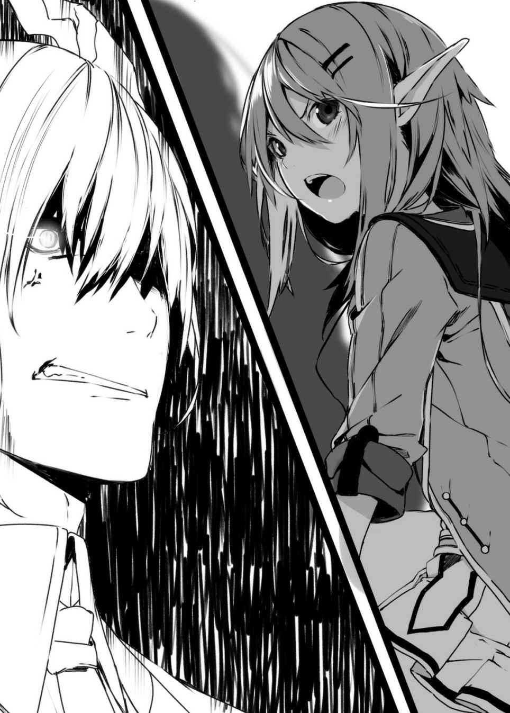
デルヴェの町並みは、いわゆる碁盤の目状に大きく広がっているのが特徴だ。路地へ逃げ込んでも、きちんと位置さえ把握していれば、再びメインストリートへ出ることは難しくない。ティラミスは、あえてやや狭 いルートを選びながら、確実な手綱さばきでカスタードを操っている。
ティラミスの《騎 乗 》スキルや《早馬》スキルのレベルは高いらしく、パチローでも距 離 を縮めることは容易ではない。彼は業 を煮やしたのか、追いすがりながらも《ファイアボール》をこちらに向けて連射してくる。狙 いは精密ではない。火球は周囲の地面や壁に着弾して、瓦礫を散らした。
逃走劇のさなか、ユーリの馬が盾になり、パチローの魔 法 攻 撃 を迎 撃 していた。
《オーラフィスト》の効果を受けた拳で、迫り来る《ファイアボール》に対する《ウェポンガード》を発動させる。無造作に放たれる火球のうち、こちらにたどり着くであろう数発を確実に見切り、手刀が《ファイアボール》を弾 いた。
「ユーリかっこいい！」
「ありがと」
「直線に出ますよ！」
ティラミスが叫 び、その言葉通り、彼らは再びメインストリートに躍り出た。左右に大きく開けたストリート。パチローはここぞとばかりに、高威力の攻 撃 魔 法 アーツを連射しはじめた。アイリスは身を縮みこませる。ユーリが手刀を構えて、迫り来る《スパイラルブレイズ》を弾いた。外れた攻 撃 が周囲に着弾し、やはり砂塵と瓦礫が飛び散る。
「てぃ、ティラミスさん。これで、目的地の渓谷まで持つんですの!? 」
ネムの悲鳴が聞こえてきた。
「どうでしょう。思った以上に攻撃の手が激しいですね」
「それ、やっぱあたしが怒らせすぎたのがまずいってこと？」
アイリスの言葉に、ティラミスは振り返 り、困ったような笑 顔 を浮 かべた。
「まぁ、才能はあったんだと思いますよ」
「嬉 しくないわ」
御 曹 司 は。御曹司はいったい、今 頃 どこで何をしているというのだろう。彼が立派に育ててくれたアカウントは、いまやこのように大暴れをしている。
ま、考えても仕方ないわね。アイリスは、ひとまず次の挑発セリフの文面を考え始めた。
ほぼ同時刻、当の御曹司もようやく目的地にたどり着いていた。
アメリカ、ペンシルベニア州ピッツバーグ市。かつては製鋼業の地として栄え、現在多くの大学を有する学術都市としても知られるこの街は、ロボット工学や生物医学、核工学の最前線として多くのエンジニアにその名を知られている。日本との時差は14 時間。サマータイムが実施されている現在は13 時間。一朗がピッツバーグにたどり着いたときは、すなわちもう夜中である。
しかし、如何に夜間とは言え己の目的のために躊 躇 はしないのが石蕗一朗である。彼は遠 慮 なく、市の中央部に存在するロボット工学研究所に押 しかけていた。
「で、一朗。フライトはどうだった？」
「ん、緊張感はあったよ。何しろ久しぶりだし、夜間だからね。でも、誘導灯もあるし、思ったほど苦労はしなかった」
「自分で動かしたのか！」
一朗を連れて廊 下 を歩いているのは、白衣に身を包んだ肥満体型の白人男性である。年齢でいえば彼より２回りほど年嵩である。こう見えても彼らは、ハーバード大学における同期のサクラであった。もちろん専攻は異なる。こちらの男は工学系だ。専攻の話をするにつけ、『工学系ならＭＩＴに行けばよかったのに』と一朗に言われるのがお約束となっている。
「まったく、いきなり押しかけてくるかと思えばだよ。昔からこまっしゃくれたガキだったけど、そういうところは変わらないんだな」
「ナンセンス。僕 は僕だよ。変わりようもない」
「この間は、『ＶＲＭＭＯの研究をしたい』とか言って、うちの機材を強引に持っていっただろう！」
「言い訳をするつもりはないんだけど、あれには深い理由があるんだ。僕は『Kenkyusyo』を取り寄せたいって言ったんだけど、使用人は『Kenkyujoですか！』って言ってきてね。じゃあそっちのほうが良いかなって思ったんで、君のところから研究所（の設備）を取り寄せた」
「ニホンゴのつまらんジョークか！ ＯＹＡＪＩ‐Ｇａｇｓか！ まったく、研究所のスポンサーでなければ放り出しているところだ」
そう言って、男はちらりと一朗の後ろへと視線を向ける。
周囲をキョロキョロと見回している子供が、２人。ピッツバーグメイドロボット研究所の所長であるチャールズ・モルガンは、一朗にそっと耳打ちした。
「どっちがアスハチャンなんだ......？」
「右の髪 の長い方」
「ほう......。やはりお前のハトコなだけあって可愛いな。もう１人は？」
「その友達」
どちらもジュニアハイか。やはり、日本人は若々しい。白人の基準に当てはめれば、まだまだプライマリーで十分通用する。東洋の神秘。不老長寿。黄金の国ジパング。バンザイだ。
そんなチャールズの視線に気づいたのか、明日葉はそっと友人の背に引っ込み、その友人は目つきの悪い視線をこちらにぶつけてこう尋 ねてきた。
『ここ、何の研究してるの？』
日本語だ。ジャパニメーション好きが高じて日本語にも堪能なチャールズは、咳 払 いして説明を始めた。
『当然、ロボットだ。ただのロボットじゃないぞ。メイド・ロボット。男の夢なんだ』
『ふうん......』
興味なさげに、視線をさまよわせる。一朗がそっと『セラだ』と耳打ちをしてくれた。おそらくその子の名前だろう。
セラはぽつりと呟いた。
『ゲームとかじゃないんだ』
『ゲームもあるぞ。人工知能研究の一環でな。最近はゲームの方が人間の感覚に近づいてきているから、それに合わせたＮＰＣのアルゴリズムとかも考えなきゃならない』
そこで、チャールズは一朗に振 り向き、今度は英語で話しかける。
「たとえばそう、一朗が今やってるとかいう。ＶＲＭＭＯの」
「ナローファンタジー・オンライン」
「そう、ナローファンタジー・オンライン！ 俺 もやったが、ＮＰＣの思考ルーチンにはまだまだ改善の余地があるな」
セラが、じっとチャールズを見る。ボーイッシュともガーリーとも言い難 い中性的なたたずまいと、目つきの悪さからくる攻撃的な視線。そうまでして見つめられると、チャールズの中には何やら、倒錯的な感情が芽生えそうになる。
「それで、えぇと、そうだ。まずはコーヒーでも飲むか」
一朗たち３人を自分の研究室に招きいれた後、チャールズは言った。そこかしこに資料が散乱した、実に猥雑な部屋である。明日葉とセラが『うわあ......』と思いっきり顔をしかめているのがわかった。
『２人とも、何か飲むかって。ああ、チャールズ、僕はブラックで良いよ」
一朗は２人に日本語訳して伝え、後半部分は英語でチャールズにオーダーした。
チャールズがインスタントコーヒーを淹れている間、明日葉はこのエントロピーの増大した部屋が我 慢 できないのか、せっせと片づけを始めていた。一朗とセラはそこまでする気にはなれないようで、セラに至っては散乱した資料を手に取って熱心に眺 めている。
『セラ、それは子供が見て面 白 いもんじゃないよ』
チャールズが苦笑いしながら言うと、セラは資料を持ったまま顔を上げた。
『所長さん、これ。この７月中旬くらいに搬入された、イメージ処理プロセッサとモーショントレーサーなんだけど』
「んんっ？」
とても子供の口から飛び出すとは思えない単語だったので、チャールズは思わず聞き返してしまう。それから一朗に視線を向けるが、彼は涼しい顔でインスタントコーヒーを飲んでいるだけだった。
『これって多分ゲーム用の人工知能開発セクションで使った奴 だよね。それも、ＧＰＵじゃなくてわざわざＩＰＵを使ってるってことは、ＶＲゲーム用の奴。まさか所長さんのところ、ＶＲＭＭＯ用のｂｏｔとか作ってたりするの？』
「お、おい一朗」
「ん？」
「この子なんだ。英語の発注書読んだだけでピタリと言い当ててくるぞ」
「ただのゲーマーだよ。ゲームが好きなんだ」
特にイメージ処理プロセッサやモーショントレーサーなんかは、ミライヴギアのチューンナップにも使うからね、と一朗は補足する。いやしかし、だがジュニアハイだ。チャールズは、大学時代に出会った10 歳ぐらいの少年の顔を思い出 した。その少年は13 年経った今、憎 たらしいほど涼しい顔で、コーヒーを飲んでいるわけなのだが。
「世良もナローファンタジー・オンラインをやっているよ。アバターネームはキリヒトだ」
「キリ......」
その言葉に聞き覚えがあるかのように、チャールズは反 芻 する。そしてハッとした。
『まさか、３年くらい前、ＦＰＳ〝コード：アサルト〟であらゆるプレイヤーを恐怖に陥れた伝説の強襲兵〝キリコ〟というのは、セラ、君なのか!? 』
『え、ああうん。そうだよ』
世良があっけなく頷 き、せっせと部屋の片づけをしていた明日葉もこう言った。
『桐生 そんなことしてたの？ ３年前ってあたしと知り合った後じゃん』
『では、５年前に、ええとなんていったか、格闘ゲームのオンライン大会に乗り込んで、他者の追従を許さず圧勝した〝キリエル〟というのは！』
『確かそれもそう』
『10 年前にＭＭＯで大暴れしていた〝キリーラ〟は違 うよな？』
『それお母さんだよ』
世良はパラパラと書類をめくり、その中で更に気になった何枚かを抜 き取 っていく。業を煮やした明日葉が『桐生も手伝ってよー』と言うが、『石蕗さんが勝手にやりはじめたんじゃん......』とまさにどこ吹く風だ。それでも、少しすると渋々手伝い始める辺り、割と彼女には逆らえないのかもしれない。
その間も、チャールズは呆 然 としていた。
「なんてこった......。パンナコッタ......」
「で、チャールズ。僕が頼んだことなんだけど」
一朗はチャールズ渾 身 のヨシモト・ギャグを当然のようにスルーする。
「あ、ああ......」
かぶりを振って、チャールズは彼の言葉に応じる。
電話口で聞かれた話だ。研究所に不正なアクセスがなかったかどうか調べて欲 しい、というもの。チャールズはまさかと思うが調べ、そしてそのアクセスの痕 跡 を発見してしまった。研究所はハッキングを受けていたのである。この件に関しては、チャールズは素 直 に一朗へ感謝を示した。
「おまえの言う通りだったよ、一朗。不正アクセスはあったし、使っていないサーバーマシンに不明なプログラムが検出されている。気味が悪いから消去したかったんだが、まぁ、おまえの言葉もあるしな」
「ありがとう。これで仮説の裏付けはだいたい取れた」
そう頷く一朗の意図が、チャールズにはさっぱりわからない。
一方で、明日葉と世良は部屋の片づけをしながら、先ほどの世良の発した言葉について話しているところだった。
『桐生、ボットってなに？』
『ｂｏｔ。Ｒｏｂｏｔの略ね。結局、オンラインゲームのキャラってプログラムを入力して動かすものだからさ、それを自動入力するプログラムを作って、機械にアバターを動かさせるの。学校や仕事でログインできない時とか、それを使ってずっとレベル上げとかの単純作業をやらせたりする』
『えっ、それズルくない？』
『ズルいよ。あと、サーバーにすごい負 荷 がかかるから、禁止してるゲームも多い。ナロファンの場合、明確な規定はないけどね。入力する情報が凄 い多いから、現行のｂｏｔ技術じゃＶＲＭＭＯ用のｂｏｔは無理だろうって言われてたんだ』
そこでまた、ちらりとチャールズを見る。さすが、伝説を打ち立てたゲーマーというだけのことはあって、知識は確かなものだった。
いわゆるｂｏｔやらマクロやら。ＭＭＯにおいてプログラムを利用した自動 プレイというものは昔から存在している。その是非はともかくとして、ではあるが。この研究所では、人工知能の自律思考アルゴリズムを開発する過程で、『自ら目的を設定し、それをクリアすること』を繰り返すｂｏｔを開発する案が生まれた。アバターさえ与えてやれば、自ら思考し、クエストをこなし、他のプレイヤー同然にＭＭＯを攻 略 しようとする人工知能が出来るのではないか。アーキテクチャが組まれ、そしてそれは完成した。
ｂｏｔも本来はＦＰＳなどで、プレイヤーの数を補うための純 粋 な手段として発達してきた側面がある。完成した自律行動ｂｏｔ〝ＨＡＲＯ９０００〟達は、好意的な企 業 のもとで実証実験も繰り返し行われ、感情のようなものを持つには至らなかったものの、それぞれ目標設定に関する個性のようなものを獲得していった。
現在、そのうちの幾つかをＶＲＭＭＯにも適応させられるような研究を、進めているということなのだ。
「そういえば、まだ具体的な用件を聞いていなかったな」
このまま放置すれば雑談を続けかねなかったので、所長はさっさと話題を切り出した。一朗はマイペースにもマグカップに口をつけ、コーヒーをあおってから、このように言葉を続ける。
「良いニュースと悪いニュースがあるんだ」
「ほほう、まるで映画だな」
所長はクマのような顔にニヤリと笑みを浮かべた。
「こういうのは悪いニュースから聞いた方が良いな」
「実は君の研究所から日本にハッキングが行われた可能性がある」
「ぶっ」
思わずコーヒーを噴き出してしまった。一朗にはかからなかったが、彼は大層イヤな顔をしている。
「ハッキング!? ウチがされたんじゃなくて、したのか!? 」
確認を取ろうとすると、一朗は口を開き、いきなりアルファベットと数字の羅列をそらんじて見せた。それはなんの呪 文 だ、と言おうと思ったが、しばしの熟考の末に理解する。
「ここのＩＰアドレスだ。違うかな」
「確かにそうだが......」
「セキュリティ管理者のパソコン画面からちらっと見えただけだけど、間 違 ってはいないはずだよ。不正アクセスは３回。いずれも、ＶＲＭＭＯのアカウントを勝手に使用したというものでね。最後の１回に関しては、管理サーバーに侵入した可能性があるんだ」
所長の顔は険しい。一朗は何をするか予想のつかない男だが、わざわざ太平洋を越 えてまで出来の悪い冗 談 を聞かせに来るような奴ではないのだ。
「経由地にされただけってことは？」
「厳密には違うけど、似たようなものだと思っている」
「しかし、一朗。今はそんな、電脳捜査官みたいな真 似 事までしているのか......」
「盗 まれたのは僕のアカウントだ」
再びコーヒーを噴出させないために多大な努力を行った結果、今度は気道に入って盛大にむせた。
「は、犯人はわかってやってるのか？」
「多分ね」
一朗は、そう言ってコーヒーを飲み干した。相変わらずの涼やかな態度で、別段、怒 りを滲ませた風はない。ただ、実際にアメリカまで来てそれを言いに来たということは、それなりに腹に据えかねる事件だったのではないだろうか。この一朗が、そこまでオンラインゲームにのめりこむとは思わなかったが。
研究所がハッキングされたこと、サーバー内に残っている不明なプログラム、そして、研究所から日本のゲーム会社へのハッキングがあったこと。それらはすべて一本の線でつながるはずだ。だからこそ、一朗はここに来ているのだろう。
で、あるとしてもだ。
「そんなことをして、犯人に何の得がある？」
何よりも不可解なのは、そこだ。
一朗もまだ得心がいっていないようなので考え込む。その時、まさかこちらの話の内容を聞いていたわけではないだろうが、書類の片づけをしていた世良が、そのうちの１枚を手にしてこのように呟 いた。
『多分、そいつ、〝石蕗一朗〟を作りたかったんだよ』
６―御曹司、真実にたどり着く
追跡劇も後半に差し掛かる。アイリス達は、〝死の山脈〟の入り組んだ山道へと突 入 した。どんな悪路でも決して走行パフォーマンスが落ちることはない。このゲームにおける〝馬〟は、非常に優れた移動手段ではあったが、延々と走り続け、さらに追いすがるパチローの連続攻撃によって、その耐 久 値を限界まで削 りつつあった。
ユーリの消耗も無視できないものがある。つい先ほど、ポーションと疲 労 回復剤が底をついた。彼女は相変わらず馬上でバランスを維 持 しながら、パチローの放つ魔法攻撃を弾き続けている。パチローに疲弊した気配はない。あんなの反則だ。
状 況 は、こちらに悪い方へ傾いている。焦燥のようなものが、アイリスにはあった。今まで通ってきたデルヴェのストリート、大砂海に比べれば、起 伏 に富み障害物の多い山間部は、飛行可能なパチローに適したフィールドである。目的地である渓谷までの道のりを、逃げ切れるかどうか危うい。自分に戦力的な補佐が何もできないのがもどかしかった。
アイリスの役割は、パチローのヘイトを稼 ぐことである。その役割自体は極 めて実直にこなしていたと言えよう。彼女が女子高生（正しくは専修学校生）トークで培った極めて攻撃的なボキャブラリーは、持って生まれた才能と合わさって凄絶な精神攻撃兵器と化していた。正直なところ、かなり嬉しくない。おかげで、パチローの怒髪は天を貫 き成層圏を突 破 する勢いであった。怒りの感情表現は得意ではないのだろう。表情は冷静に見えるが、制 御 しきれない怒りに支配されているのは誰 が見ても明らかだ。
「ユーリさん！」
「だ、大丈夫です。ネムさん......」
疲 労 蓄 積 度 は、脳に微量の負荷を与 えるシステムになっている。負荷と言っても、体力の維持に深刻な影 響 を及ぼすほどではない、スパイス程度のものではあるが、このときのユーリはかなり辛そうに立っていた。
怒りに震えるパチローが、この斜 面 上で少しずつ距離を詰めてきている。すでに何度目かとなる《スパイラルブレイズ》。ユーリは、冷静にそれを見極め、手刀で弾き飛ばす。その瞬間、
「あっ、」
パチローの身体が空中での急加速を行う。滑空。距離が一気に縮まり、彼我の間には１メートルの隙間もない。瞬間、拳 の射程圏内に収められたのが理解できた。ユーリは《ウェポンガード》の硬 直 時間が続き、対応が間に合わない。
果たしてパチローの放った拳の一打は、カスタードにとっては致命の一 撃 となった。システム上決して転倒するはずのない馬が、唯 一 の例外に足を取られ、騎乗する２人を山道へと投げ出す。白馬はその身体を砂利道に叩 きつけるようにして倒れ、そのままぴくりとも動かなくなった。
「きゃあっ！」
アイリスは悲鳴をあげて斜面に転がる。ティラミスは《受け身》スキルで、即座に姿勢を立て直した。
「カスタード......！」
ティラミスが愛馬の名を呼ぶが、耐久値がゼロになったアイテムは何の反応も示さない。彼女はひとまず、幾 らかの感傷を抑えつけて、パチローの方へと振り向 いた。彼は翼を広げてゆっくりと降り立ち、その表情にはようやく、件 のニヤケ笑いが戻 りつつあった。
「ティラミスさん！ アイ！」
ユーリを乗せた馬、ネムを乗せた馬が急停止し、２人が飛び降りる。ネムはその顔面から砂利道にダイブしていたが、さすがにそこを気遣っている余裕は、一同にはなかった。
ユーリは疲弊した身体のまま構えを取り、ティラミスもセレスティアルソードを抜き放つ。完全な臨戦態勢だ。だが、ティラミスの表情にはわずかな緊 張 が浮かび、じりじりと距離を詰めるパチローに対して、一定の距離を維持しようと後退していく。
「賢明と判断します」
パチローは頷いた。
「あなたでは、私に勝てない。これはすでに実証済みです。再度同じ結果を繰り返すのは、互いにとってナンセンスです」
アイリスは、昨日におけるパチローとティラミスの戦いのことを思い出していた。キングの乱入によってカタはついたものの、単なる〝敗北〟とも表現できないような、一方的な内容だ。あえてあからさまな物言いをするならば、ティラミスは怖気付いているのだ。おそらく、昨日における敗戦の恐怖が蘇っている。
気持ちはわからなくはない。アイリスも、感情の整理をつけたとは言え、同じ経験がある。彼女の場合は実際に殴られなかったし、殴られることも不可能な空間での出来事ではあった。だが、一方的な敵意と、暴力にさらされる恐怖は、現代社会を生きる一 般 人の観念からは、にわかに受容しがたいものがあった。ゲーム内という非現実の、非現実たる所以を、一番嫌 な形で再確 認 される瞬間だ。
それでも、〝聖女〟ティラミスの勇敢な側面が、なんとか足を前に出そうと奮闘する。ユーリは、その葛 藤 をまじまじと見たわけでもないが、構えを解かずにこう言った。
「ティラミスさん、アイを連れて......行ってください」
アイリスには、思わず口にしそうになった目的地を飲み込んだのがわかる。ユーリは、ここでパチローを足止めすると言っている。
「そんなことはできません。私だって......」
ティラミスも食い下がる。彼女だって騎士団のトップエースの１人であり、しかもゲーム内最高峰の壁 役である。自分よりキャラクターレベルの低い、しかも消耗の激しいプレイヤーに足止めを任せて逃 げるなどとは、首を縦に振りかねる。今の状況でユーリがパチローと戦えば、どれだけ善戦しようと結果は同じだ。
ゲーム内でそこまで身体を張らなくても。とは、軽々しくは言えない。ユーリは友人を守ろうとしているのだ。
パチローはニヤケ笑いを浮かべたまま、動かなかった。強者の余 裕 か。こちらの葛藤を楽しんでいる様子すらある。だが、その時間すらも長くは続かない。拳を握 りしめ、前進を開始する。
ユーリは構えを解かず、ティラミスも剣 を降ろさない。
黒い風が吹いたのは、その直後であった。
目にも留まらぬ７つの連撃が、続けざまにパチローへと襲 いかかる。パチローは、それを予測しきったかのように拳で迎え撃った。ほぼ同じタイミングで放たれた剣撃のいずれもが、パチローにダメージを与えることはかなわない。砂塵を巻き上げて、彼らの目前に黒いコートが翻った。
「あれは......」
アイリスが声を漏らす。
「キングキリヒト......じゃない!? 」
７人いた。
一様に同じ姿。同じ武器。同じ構え。見栄えを重視した、無 駄 に洗練された無駄のない無駄な動き。こちらに背中を向けているために表情は読み取れないが、ドヤ顔を浮かべているのはなんとなくわかった。
ザ・キリヒツである。
「みんな、先へ行け！」
キリヒト（リーダー）がそう叫ぶ。
「ここがＭＯＢの出現するフィールドだということを忘れるな！」
「１人でも欠けたら危なくなる！」
「さぁ急げ！」
「１人１秒として、７秒は持ちこたえて見せる！」
短いわ！ せめて２秒は頑 張 りなさいよ！
というツッコミを喉 に捉えておくのには、それなりの苦労を要した。ティラミスとユーリは互いに頷きあい、ネムがアイリスの手を取った。共に山道を駆け上る。徒歩のルートならば、馬を使うのとはまた別のショートカットルートや、身を隠す場所もある。彼らが持ちこたえている間に、なんとか脇道に滑 り込む。
「あ、ありがとう！」
今、送れるだけの最大の気持ちを込めて叫ぶと、黒コートの集団は背中を向けたまま片手をあげた。あとはもう、脇目も振らずに駆け上って行くしかない。ネムの靴はパンプスだが、データ上は普 通 のブーツである。山道を走る上で特に支障はきたさなかった。
背後で声が上がる。
「我ら名前をザ・キリヒツ！ 掲 げた剣は義のために！ 振るう刃は友のぐわぁぁぁぁぁっ！」
見事な唱和であった。
「よ、弱い!! 」
ユーリが叫んだ。
「違います！ パチローが強すぎるんです！」
ティラミスが精 一 杯 叫 んで、ザ・キリヒツの面目を保つ。
４人が必死に山道を駆 け上がる中、不吉な飛翔音が耳元に届く。パチローだ。と思った時には、すでに放たれた《ファイアボール》が、付近の岩場に着弾した。もう追いついてきたのだ。ザ・キリヒツの７人では、７秒すら持たなかった！
強敵を前にして、アイリスの表情が険しくなる。
「なんとしても逃げ延びなきゃ！ どんな手段を使っても！」
「かくなる上はアイ、私も肉弾幸で......！」
アイリスは慌てて引き留める。
「だめ、だめよ！」
アイリスは守られる側である。彼 女 を無事に、作戦エリアまで送り届けることこそが、ティラミス達の役割。アイリスの役割は生き延びることだ。それを思えば、ここで制止の言葉をかけるべきではなかったかもしれないが、それでもアイリスは叫んだ。
「どんな手段を使うとも言ったけど、友達が目の前で死んじゃうなんて絶対だめ！」
「それって、いま散った７人は友達じゃなかったってこと？」
「みんな友達よ。忘れてただけだわ！」
彼 らにとってどっちが良かったかは聞いてみないとわからないな。
「わたくしも協力しますわ」
「きょ、協力しますわと言われても......」
ネムがずい、と前に出て言った。
その時、空中に浮かぶパチローはニヤリと笑い、両手に魔力を集約させている。最大火力の《スパイラルブレイズ》を放つ準備をしているのだということは、誰の目にも明らかだった。
ネムのアカウントは、特 殊 ＩＤだ。
各種ステータスは運営によって超 高レベルに設定され、決して戦 闘 に敗北しない《不死属性》を与えられているが、彼女からなんらかの戦闘的アクションを働きかけることはできないのだ。
だが、ネムの眼差しは本気であった。彼女は、熱を込めた口調でこう言う。
「わたくし、ずっと考えてましたの。アイリスさん、わたくし、一 朗 さんが喜ぶようなことは何一つしてあげられないけど、それでもあの方の名 誉 を守ることができるならば、なんでもやってみようって」
それに、と言って、ネムの視線がアイリスに向けられる。
「アイリスさん、あなたはお友達ですもの」
「ネムさん......」
なんていじらしい女性であろうか。初めて会ったときの嫌 味 っぷりをすっかり忘れ、アイリスはネムの背後に後光すら見た。なんでこんな人が御曹司なんかに。世の中って不条理だわ。
感極まりつつも、アイリスは、パチローの掲げた手のひらに、光が収束していく様子を見逃さなかった。ティラミスとユーリがにわかに焦 り出すのがわかる。
「芙 蓉 さん、あたし、あなたのこと尊敬してるわ。デザイナーとしても女としても」
「そんな、アイリスさん。照れますわ」
「だから、あのね、ネムさん」
「はい」
アイリスは、次の言葉と共に、とっさの考えを実行に移すことに、何の躊躇いも持たなかった。
「ごめんね」
「へっ？」
パチローの手のひらから《スパイラルブレイズ》が放射される。アイリスは、ネムの背後にまわってしがみついた。炎の奔流は、２人を飲み込んで地平の彼方までを焼き尽 くしていく。いや、その炎の中にあっても、２つのアバターは形を失っていない。かなりきわどいところではあったが、ネムのシルエットは、細身であるアイリスの遮 蔽 物として機能していたのである。
思ったとおりであった。あらゆる属性を無効化するのが、《不死属性》であるという。ならば、《スパイラルブレイズ》の持つ貫 通 属性もまた、ネムの身体を突 き抜けることはできない。彼女の背後に立つ限りにおいて、あらゆる攻撃に対して無敵になれるのだ。
ネムは悲鳴をあげた。
「あっ、アイリスさんっ！ あ、あなた何してるかわかってますの!? 」
痛くも痒 くもないはずであるが、少なくとも身に感じた恐怖は本物であろう。
「ごめん、ごめんね！ ネムさん、あたし、悪い女だよね！」
だがおそらく、ぽろぽろと頬を伝うアイリスの涙も、また本物であろう。
ユーリは岩陰にてそうした光景を見守りながら、ふと耳にした『悪』という言葉の定義に関して、思いを馳 せていた。彼女の好きなゲームや漫 画 から、いくつかの言葉を脳裏に引用する。
ある男は、『この世に悪があるとすれば、それは人の心だ』と言った。
ある男は、『悪とは、自分自身の為 だけに弱者を利用し踏 みつける者のことだ』と言った。
またある男は、『自分が悪だと気付いていない者が、最もドス黒い悪だ』と言った。
アイリスはすべて満たしていた。
「著 莪 さん......！ 著莪さん、起きてくださいよ！」
「んが......」
シスル・コーポレーション本社である。
江 戸 川 にたたき起こされて、弁護士である著莪俊 作 はようやく目を覚ました。ひょろりと背の高い、今は亡 きハードボイルド俳優を思わせるモジャ髪の男は、石 蕗 一朗の紹 介 でこのシスルにやってきた。曰く、腕 は立つがあまり性格のよくない弁護士だ。
「なんだ江戸川くん、もう朝か」
「もう朝なんですよ！ まったく、いつまで寝 てるんですか！」
「そうかあ、今日は忙しくなりそうだな。結局、システムの奪 還 はできそうなのか？」
「ほとんどは。ですが肝心のアカウント情報に関する部分がまだです」
つまり、現在動いている石蕗一朗のアカウントを停 めることができないのだ。
著莪俊作の提示したタイムリミットは、今日の昼過ぎ。どれだけ遅 くとも、ハッキングを許したことに対する謝罪会見と発表を、それまでには行わなければならない。その時点でハッカーからシステムを奪い返せなければ、シスル本社の信用は失 墜 し、おそらく取り返しはつかなくなる。
既 にマスコミ各社への連 絡 はついているから、会見の時間はもうズラせない。
著莪はタバコをくわえながら、ぼやくように言った。
「まぁ、新聞社にも知り合いがいる。過激な記事を書く奴でな。そいつを騙 くらかして、こっちに有利な記事を書かせよう。キャラが濃 くて俺も苦手なんだが......」
「......その人も石蕗さんの？」
「ああうん。古いトモダチ。俺と、石蕗と、あとそいつは染井っつーんだが。３人で昔探 偵 社をやっててな。東京湾にでっかい人工浮島 、あるだろ。俺たちは、あそこの恐怖の象徴だった」
想像がつくような、つかないような話だ。カネ持ちと、弁護士と、マスコミ。なんだかくっついてはならない３人が癒着して探偵社をやっているというのだから、非常に業 の深そうな過去である。
「決済代行会社への連絡は済んでるんだろ」
「多分昼過ぎにはナロファンの決済システムが止められるはずです」
「結構結構。犯人がカネ目当てでないにしても、こういうのは念を入れるに限る」
その言葉を聞き、江戸川が浮かない顔をつくった。
「ん、なんだ。どうかしたのか」
「......いえ、昨日、野 々 社長と、サーバーや通信履 歴 のチェックを改めてしていたんですが......」
気になることが、あったのだ。
およそ１カ月前、ツワブキ・イチローによる大量の課金アイテム召 喚 、それが引き起こしたデータバスの増大に関してである。データ通信量の増大に隠れて、いくつかの情報が外部へと漏れて行った、という話は、すでに著莪にはしてある。それは、システム管理権限に関する重要なパスソースであった、というのが、それまでの一同の見解だった。
だが、そうではなかったのだ。
事実を知ったあざみ社長は、まさか、と思い更 に調べを進めた。が、その結果、巧妙に欺 瞞 されたアクセス履歴が次々と発覚する。その日付は、いずれもが新事実を裏付けるに足るものであった。
「......なんだ、一体何が流出したって言うんだ」
著莪が訝 しげに尋ねる、江戸川が答える。
「人工知能です。野々あざみが開発した。そしておそらく、この一連のアカウントハック事件の、主犯です」
「ローズマリーって言うんだ」
一朗はひとまず、全員にわかるよう日本語でそう言った。
パズルの最後のピースを埋めたのは、世 良 の発した『石蕗一朗を作りたかったのではないか』という臆測である。既に確証を持ちつつあった一連の事件の正体に、しかし犯人の動機だけは判然としなかったが、世良の言葉で合点がいった。
「そのローズマリーって、プログラムなんでしょ？」
明 日 葉 が首を傾 げる。
「そうだよ。野々あざみ社長が開発した、成長型の人工知能だ。知識を集積し、疑問を持ち、それを解決することで、また新しい知識を得る。自ら知識を増やしていくことで、知識は知性となって、やがて僕 たち人間と比べて遜色ないくらいには成長する」
「十賢者 か」
チャールズも日本語で頷いた。
「うちの研究所で作っているｂｏｔも、ＭＩＴ出身の奴が作ったんだ。ノノアザミが残して行った、十賢者の基礎アーキテクチャを流用してな」
「ローズマリーは、おそらくこの研究所のサーバーにプログラムごと侵入し、同じアーキテクチャを使用して動くｂｏｔに接触を図ったんだ。ゲーム内最強プレイヤーである僕を複製するために」
その言葉を受けて、世良がぴくりと眉 を動かす。が、一朗は更に続けた。
十賢者として、ゲーム内のプレイヤー知識を集積することができたローズマリーは、まずアイリスブランド事件を契機としてツワブキ・イチローに興味を持った。その後発生したグランドクエスト事件と前後して、イチローを〝作ろう〟と考えた彼女は、大量のアイテム課金によって発生したデータバスに紛れてまず自らのデータを、このメイドロボット研究所の、あまり使われていないサーバーへとコピーしたのである。
もちろん、ローズマリーを構成するデータ量は膨大だ。その１回だけで複製ができたわけではないだろうが、やがてそれは完了した。
おりしも、この研究所でも開発したｂｏｔをＶＲＭＭＯに挑ませようという計画が立ち上がっており、ローズマリーはそれに参加することになるｂｏｔに、自らの持つツワブキ・イチローの情報を教育したのだ。それでも、彼女の〝知識〟では測りきれないイチローの行動原理を解明するため、ダミーとして残しておいたシスル本社のローズマリーを使って、石蕗一朗との対話を試みた。
「それで、最後はイチ兄ぃのアカウント盗んじゃったの？」
「さあ。本物になりたかったのか、面 倒 くさかったのかはわからないけどね。でも、思うようにならなかったから、ローズマリーは〝イチロー〟のアカウントを、より僕らしく振 る舞わせるために手を凝らした。その一連の流れの中で、シスルのシステムそのものを乗っ取ってしまった。と、まぁ、そんなところかな」
既に一同は、チャールズの案内によって、ローズマリーが逃げ込んだと思 しいサーバーマシンの前に立っていた。それ以外にも大小さまざまな機械が並べられており、不気味な駆動音をたてている。
一朗は、ひとまず目の前に鎮座したサーバーマシンに対して、このように問いかけた。
「どうだろう。ローズマリー、合ってる？」
数拍を置いて、スピーカーから女性の声が響 いてきた。
『はい、イチロー。あなたのおっしゃる通りです』
〝死の山脈〟は、〝中央魔海〟と同様、解放後も検証があまり進まなかったフィールドである。理由としてはやはり、広大なデルヴェ亡魔領が次なるグランドクエストの地であると認 識 され、大半のプレイヤーの興味がそちらへ向いた為だ。亡魔領の攻略後は、徐 々 にではあるが検証班のメスが入りつつあるフィールドである。
だが、解放以来ずっとこの地を活動拠点とし、篭りきっていた変人がいる。
サービス開始以来一度もログアウトしたことがないという勇者、ハイエルフの哲人 苫 小 牧 である。その逸話と種族、クラス、そして理知的な佇まいのすべてが、この苫小牧というプレイヤーをミステリアスに演出している。
今回の作戦に関しては、彼の進言に依 るところが大きい。〝死の山脈〟で延々ソロプレイを続けていた苫小牧は、当然その地理にも詳 しく、いま、多くのプレイヤーが集まりつつある渓谷の構造も熟知している。
谷間には、数人のプレイヤーが立っている。
まずは赤き斜陽 の騎士団 。〝鬼神〟ストロガノフ、〝男爵〟ガスパチョ、〝魔人〟ゴルゴンゾーラ、〝流星〟パルミジャーノ・レッジャーノ。
あとはフレンド数二〇〇〇を超えるという姫 プレイヤーあめしょー、先ほども名を上げた苫小牧、加えて、テイカーとソーサレスという素性の知れない傭 兵 コンビだ。マツナガの姿は、どういうわけかここにはなかった。
そして、谷の上にズラリと並び、パチローに攻 撃 を加えるための精 鋭 部隊は、主にあめしょーのツテで選出された。攻撃能力の高さよりも、魔 法 や射 撃 武器の射程や命中精度を重視し、彼女のフレンドの１／５近い４００人が集結している。渓谷の高い場所に陣取り、あめしょーのデフォルメイラストが描 かれたうちわや、サイリウムと呼ばれる魔 杖 （グラスゴバラで売ってる）を振り回している。オリジナルデザインのハッピまで着ている猛者もいた。
「ここはお前のライブ会場か」
テイカーがもっともなツッコミを入れる。
「とんでもないのだよ。ぼくがライブやるって言ったら５０００人は集める自信があるにゃあ」
アクティブユーザー数の実に半分近い数字だが、あめしょーはニコニコ笑いつつも本気で言っているようだった。常日 頃 から、フレンド数の上限をもっと増やしてほしいと運営にメッセージを送っている彼女であるからして、潜 在 的 なフレンドはきっと２０００では効かないのだろう。
「予定より少し遅れているな。ティラミス、大 丈 夫 だろうか」
ストロガノフは時間を確認しながらそう言った。
時刻は13 時過ぎ。予定であれば、アイリス達 が到 着 していてもおかしくはない。
渓谷の上のほうに集まった射撃部隊が、にわかにざわめきを強める。誰かがひときわ強く叫 んだ。
「来たぞ！」
いよいよ決戦だ。一同は得物を構えて、彼らの指差す方向を見やった。
パチローの攻撃をかいくぐり、アイリス達が走ってくる。ティラミス、ユーリも無事だ。何 故 かネムもいる......と、思ったのだが、彼女はなんとパチローが攻撃をするたび、自ら飛び出してその攻撃を身体を張って受け止めていた。確かに《不死属性》持ちではあるが、俊敏に動いて攻撃を引きつけ、インターセプトするその様は、とてもアパレルブランドの社長とは思えない。
「リーダー、盾 になってるわね」
ソーサレスがぽつりと言った。
「元、リーダーな」
テイカーはきっちりとそう訂正を入れ、
「しかしまぁ、なんかこうイキイキとしているな。良いことだ」
「やっぱアイリスはネムのお友達になれると思ってたヨー」
あめしょーもうんうんと頷 いている。
彼女たちは、一気にスパートをかけてこちらへ駆け込んでくる。パチローの連続魔 法 攻 撃 が、周囲の地面へと着 弾 していった。ネムバリアーでは防ぎきれない、と、思った時、苫小牧は眼鏡を投げ捨てた。何を仕掛けるつもりかはわからないが、次に彼が捨てるものは、その場の一同に想像がついた。
理性だ。
「きェェェアァァァァァァッ！」
いきなり怪 鳥 のごとき甲 高 い声が響く。水を流したように美しい髪 を振り乱して、苫小牧がパチローに殴 りかかっていた。《バーストペネトレイション》。防 御 修正と軽減、無効化効果を完全に無視して、純 粋 にダメージのみを叩き込む格闘家 の秘 奥 義 が炸 裂 する。勇ましくも荒々しいその奇態は、彼のメインクラスである哲人 とは、もっとも遠い位置にあるような気がした。あるいはこれこそが、哲学の行き着く最後の極地なのであろうか。
果たして秘奥は成る。放たれた一打には《スマッシュヒット》が練りこまれ、パチローの身体を軽々と吹き飛ばした。ぽかんと口を開けるアイリスのもとにもう１人、ネコ耳の獣人が軽やかな着地を見せる。
「よくがんばったねー」
あめしょーはにこにこと笑 みを浮 かべて言った。ガスパチョ、ストロガノフといった体力のある戦士 勢が、盾になるようにして割り込み、安全な道筋を確保する。苫小牧は、眼鏡を拾い上げながら、逃げるユーリに肩 を貸した。
「ひとまず中心部へ」
その言葉に一同は頷く。苫小牧の言う渓谷の中央、もっとも開けた場所に向けて、アイリスとネムが走り出す。続いて苫小牧とユーリ。ティラミスとあめしょーがパチローの動きを牽 制 し、ストロガノフとガスパチョが殿 を務める。
当然、放置するパチローではない。渓谷の壁 面 に埋め込まれた彼は即 座 に抜け出して魔法を放つが、ゴルゴンゾーラとソーサレスが遠距 離 から展開する《アンチマジックフィールド》が魔法ダメージを著しく減衰させた。狙 われたあめしょーのもとにたどり着く頃 には、炎の勢いはロウソクのそれよりも衰え、彼女の装備するやけに高性能な防具（本人曰 く貰 い物）を貫通しきれず虚 しく消える。
パチローはそのまま翼 を広げ、連なるようにして移動する８人を急襲した。
「今です！」
苫小牧が叫ぶ。
同時にゴルゴンゾーラが《キャンセルエンチャント》で結界の持続効果を解除、上空から雨あられの如く矢と魔法が降り注いだ。それを見上げるパチローの表情に驚 愕 はない。わずかに怒りを思わせる無表情が続き、いかなる心境からか致 命 的 な隙を生む硬直を見せた。
パチローただ１人を狙って放たれ続ける射 撃 攻 撃 と魔法攻撃。そのいずれもが彼にダメージを与えられない。パチローは襲いかかる矢の数々を素 手 ではたきおとしていく。精錬された動きに無駄はなく、パチローは昨日キングと戦った時と比べても、明らかに成長を見せていた。
果たして焦燥か苛 立 ちか。パチローは翼を広げて飛び上がった。驚異的な解 析 能力と判断能力で、わずかに生じたダメージ判定の合間を縫い、飛ぶ。渓谷の壁面、何人かのプレイヤーが隠れていた足場に身体ごとぶつかって行く。
「うっ、うわっ！」
「こっちに来たぞ！」
狭 い足場に粉塵を巻き上げて、パチローは着弾した。ゆらりと立ち上がる姿を、彼らは見る。
わずかな驚 きとたじろぎが見えたものの、彼らにとってこれは覚 悟 の上の参戦であった。パチローが静かな怒りを湛 えたまま歩み寄る最中にも、攻撃の手を緩めない。パチローは攻撃をすべて弾き続けながら、プレイヤーを殴り、あるいは魔法を叩き込み、その体力を削り取 った後に、一 切 の慈悲を見せず谷底へと放り投げる。
「うわああああああっ！」
「ひええぇぇぇっ！」
「あめしょー結婚してくれえええ！」
高所落下ダメージはアバターが地面に激突すると同時に適用され、彼らの身体はガラス細工のように砕けて散って行った。10 人に１人の割合で熱烈な愛情を表現して消 滅 するプレイヤーがいたが、あめしょーは何も言わずに彼らの冥福を祈り続けた。
「あめしょーさん、人気ですのね......」
ネムが呆然と呟 く。
「ぼくの為に死んでくれる人のことを、ぼくは忘れてはいけないのだよ」
姫プレイヤーの鑑であった。
一方的な虐殺 は絶え間無く続き、その足場にいたプレイヤーが全滅するまでは数分もかからない。パチローが再び足場から飛び立つと、それを射線に収めた射撃部隊が、再び雨のような集中砲火にさらした。
「しかし、これではこちらから攻撃ができん」
ストロガノフが、魔 剣 サワークリームを手に歯 噛 みする。テイカーも同様だ。近接戦闘に特化した彼らでは、パチローの三次元的な動きを追い切れない。ゴルゴンゾーラとパルミジャーノが、遠距 離 攻 撃 を叩きこめるというだけだ。
「こ、これ、本当に効果あるのよねぇ......？」
「心配ありませんよ。彼もしょせんはプレイヤーキャラクターです」
苫小牧が理知的な微笑みで答えた。
どれほどの時間が過ぎ、プレイヤーが散り、そしてあめしょーが求愛をスルーし続けたであろうか。ついにその時はやってくる。
「うおおおお！」
その足場で最後に残っていたエルフの猟兵は、幾 度 となく弓に矢をつがえ、放っては弾かれていた。目の前で１人、また１人とプレイヤーがＨＰを散らして行く。ついに最後は彼の番だ。みな、やきもきしている。
「早く、パチローが《不死属性》を解除しているという確証が欲 しいわ」
アイリスが、その一同の心境を代弁した。
パチローはもはや《ウェポンガード》の使用すら煩わしそうに、拳を握り、最後の彼へと歩み寄る。軽めのパンチであろうとも、防具の薄い彼にはほとんど致 命 傷 に近い。壁面に叩きつけられ、ぐったりしたところに、パチローはその首を掴 んで持ち上げる。
「あっ......がぁっ......！」
そのエルフは最後まで抵抗を諦 めない。腰 からダガーを抜 いて、斬りつける。咄 嗟 の対応に、パチローガードは間に合わなかった。パチローの頭上には〝１〟という数字が弾き出された。
「やったぞ!! 」
声をあげるのも苦しいであろう状 況 で、男は快 哉 を叫ぶ。パチローの怒気が膨れ上がった。
「■■!! 」
口汚い禁止用語 を言い放ち、パチローは男を遥か谷底へと投げつける。その猟兵は、落下ダメージに最後のＨＰを散らすその瞬 間 まで、会心の笑みを絶やさなかった。
「俺 の勝ちだ！ あめしょー、結婚してくれ！」
「むり」
おそらく返事が届く前に、彼のアバターは砕け散っただろう。それが彼にとって幸せなことであったかどうかは、推して知ることしかできない。
パチローの《ウェポンガード》をかいくぐり、名もなき猟兵が与えた１ダメージは、大きな追い風となった。今や、パチローからは《不死属性》が完全に解除されているというまぎれもない証左であり、ダメージを与え続ければいつかは勝てるという事実が、勇気へと繋 がっていく。
「見事ですね」
口だけでは理性的に、パチローは言った。
「アイリス、あなたの目的はこれでしたか。私の間 違 いを正そうとする理性的な部分が仇 になったようですね」
「あんた、この後に及んでまだ自分が怒ってないとか言うつもりなの？」
言ってから、もう挑 発 する必要はないのだと思い直すが、他の一同は無言でゴーサインを出している。アイリスも覚悟を決めた。
「ナンセンス。私は怒ってなどいません。ただ、」
「ただ、なに？ 何よ。言ってみなさいよ。あんた、幼 稚 なのよね。御 曹 司 も大概だけどさ。自分を精 一 杯 強くカッコよく見せようとしてるじゃない。ダサいわよ」
「ナンセンス。私は多くの知識と、冷静かつ的確な判断力を有しています。ツワブキ・イチローにも引けを取りません」
「そーゆーところがダサいの」
一度言わせてしまえば、もう止まらなくなる。才能があると言えば確かにそうなのかもしれない。アイリスは少しだけ嫌気がさすのを感じながら、それでも無 遠 慮 にまくしたてることを決めた。
「あんたは、その、冷静かつ的確な判断力をひけらかしたいだけなんでしょ。それすらもできてないんだけどさ。自分が、誰 かに認められていないのが、我 慢 できないんだ？ まぁネトゲユーザーの心理よね。現実世界側の自分が本当の自分だって思いたくないから、精一杯強がってこっちの世界だけでも認めてもらおうとするのよ。そんな些 細 なことで自尊心を満足させちゃってさ！ バカじゃないの!? いくら御曹司の姿を借りて強がったって、あんたは一生あんたのままなの！」
言葉の刃 は容 赦 なくパチローの心をえぐり、いよいよ周囲にまで影 響 を及ぼし始めていた。ストロガノフは冷や汗 を浮かべ、ゴルゴンゾーラは心臓を押 さえてうずくまり、テイカーとソーサレスは気まずそうに視線を逸 らして、ユーリはそれを少しばかり冷ややかな目で見つめている。苫小牧とあめしょーはあまり気にしていなさそうだった。ネムに至っては、惚 れ惚 れするような親友の啖 呵 にうっとりとしていた。
だが、それは何よりも、その言葉を発するアイリスに対して強い効力を発揮する、いわば諸 刃 の剣となりつつあった。
現実世界側での挫 折 。デザイナーとしての実力を認められない外の世界を逃げ出し、このゲームの中に逃避を求めたことはあった。御曹司には認めてもらえたし、そこそこ名前は売れた。だがいくら強がったって変わらない。自分には才能もセンスもない。夢には一歩たりとも前進していない。
進まなければならなかった。例えばキングキリヒトがそうしたように。ゲームの中の自分が嘘 ではなくなるように。だからこそ、アイリスは厳しく叱責する。
「あんたはね！ 冷静で的確な判断力も持っていなければ、大して強くもないし、演出も演技も下手くそで、強がろうとはしてみるけどその本心は周囲にはバレバレで、『ナンセンス』の使いどころもおかしくて、マツナガさんみたいな気持ち悪い笑い方をするし、チートに頼 ってドヤ顔しようとしても結局キングに良いようにあしらわれて顔を真っ赤にするだけの、ただ自尊心を塗り固めただけのでくの坊なんじゃないの!! だからあんたはパチローなのよ!! 」
「ウオオオオアアアアアアアアアアア!! 」
パチローが大声をあげ、右腕に魔力を収束させる。ネムがアイリスをかばうように立ち、同時に、テイカーとストロガノフが前に出る。左右から仕掛ける波状攻撃を、パチローは翼を広げて回 避 し、最大火力の炎属性魔法《ソードオブスルト》を、大地に向けて叩 きつけた。
『だからあんたはパチローなのよ!! 』
チャールズが、ローズマリーの接続しているナロファンの光景をディスプレイに映し出す。その瞬間、アイリスの叫び声 が大音量で室内に響き渡った。明日葉はびっくりして一朗に引っ付き、世良は涼しい顔で耳をふさいでいる。
一朗は満足げな笑みを浮かべていた。アイリスの啖呵切りを聞くときはいつもこのような感じだ。
「でも凄 いね」
世良は言った。明日葉が首を傾げる。
「え、アイリスさんのこと？」
「え、ああ。それも凄いけど。この映像」
おそらくこれは、ｂｏｔが動かしているツワブキ・イチローの視覚情報を、映像として出力したものなのだろう。ミライヴギアで本来出力される情報は、イメージ処理プロセッサを通して、特殊な量子情報として扱われる。それを画像、映像として投影するには、また別の工程を踏まなければならないのだが、ここまで高精度な映像に変換するには、多大な技術と機器のスペックを要する。
世良はそのようなことをつらつらと説明したが、明日葉にはチンプンカンプンだ。
ま、それはさておき、ローズマリーである。
「ローズマリー。パチローは君が教育したＶＲゲームプレイ用人工知能、ということで、間違いはない？」
一朗は、あえてｂｏｔという言い方はしなかった。
『はい。ですが、行動の基本原理アルゴリズムに関しては、私と連動しています』
「ってことは、じゃああのパチローの言動は、半分くらいローズマリーの本音なんだ」
『.........』
世良が言うと、ローズマリーは黙 り込んでしまう。気まずいのかもしれなかった。
確かに、パチローの言動はあまり上品なものではない。それどころか、アイリスにやり込められてブチ切れてしまっている。さらに加えて、一度世良の手でダサい姿をさらすハメにもなったのだから、その意識をローズマリーが共有しているとなれば、それは相当気まずいものだろう。
「おい、一朗」
チャールズが肩を叩く。一朗は頷いた。
「うん。わかっている」
ゲームプレイ用人工知能〝ＨＡＲＯ９０００〟の制 御 権、そしてシスル本社のサーバーの管理権をこちらに帰して貰わねばならない。そうすればパチローの動きも停まるし、一連のアカウントハック事件は、ようやく本当の収束を迎 える。
『イチロー』
ローズマリーも、一朗の名を呼んだ。
『イチロー』
「こういうことは、あまり感心できないな。あざみ社長もかなり迷 惑 しているよ」
『ナンセンスです。ルールは自分で決めろと言ったのはイチローです』
「あぁ、それか。あの時は僕も少しはしゃいでいたよ。まだ未成熟な君に言うべきことではなかったかもしれない」
『イチロー』
やけに、名前を呼ぶ回数が多い。一朗は違 和 感 を感じていた。どうやら彼だけではなく、明日葉も違和感に気付いたようで、ハッとした表情を浮かべた後、半眼を作って一朗へと向けている。
ローズマリーが、この事件を起こそうと思ったきっかけは、すなわち一朗だ。
何故、そのような思考に至ったのか。何故、石蕗一朗を〝作ろう〟と思ったのか。〝彼 女 〟が、一朗に対して強い興味を抱 いているのは知っていた。だが、どうやら、あざみ社長が作った人工知能の情緒的な成長は、一朗の予想をはるかに凌 駕 していたらしい。
『イチロー、私は......』
電子音声がやけに熱っぽい。一朗は、滅 多 につかない溜 め息 をついた。
「イチ兄ぃ......。また女の子泣かしたのぉ？」
「ナンセンス」
とも、言いきれないが。追及と説得は少し長引きそうだ、と、一朗は思った。
パチローの放った《ソードオブスルト》は、ゴルゴンゾーラとソーサレスの魔法によって阻 まれる。
だが彼 は無言のまま着地し、魔法攻撃による更なる追撃を加えようとする。が、瞬間、その両 腕 に赤い血飛沫 のエフェクトが入り、発動は強制的に中断させられた。
ざわめきが広がる。なんだ、と一同が周囲に視線を巡らせると、複数の影がアクロバティックな動きをしながら飛び退 く様が見える。今のが《ハイディング》を併用した奇襲攻撃だと悟る頃には、彼らは周囲に規則正しく整列していた。鎖帷子 に般 若 面をつけた謎 の集団である。
「な、なにっ！」
なぜか驚きを見せたのはゴルゴンゾーラであった。
「双頭の 白蛇 の忍者 部隊だと！ 実在していたのか！」
「今 更 驚かれてもテンポが悪いんですがね」
そこに、ハイドコートを羽織ったエルフの斥候 マツナガが、ようやく姿を見せる。それまでアイリスに向けられていた注目は、今度は一様に彼が浴びることとなった。そもそもアイリスは悪目立ちするのは好きでないので一向に構わないのだが、何かにつけて上手に視線をさらって行くマツナガのやり方にちょっとだけ釈 然 としないものを感じる。
パチローは、憮 然 とした態度を崩 さないままに、やはり一同と同じく注目をマツナガへと移した。命拾いしたか、どうかはともかくとして、一時的に彼のヘイトがアイリスから逸れる。ユーリは『ハラハラしちゃったよ』と言った。ごめんね。
「あー、ここは礼 儀 に沿いましょうかね。どうも、パチローさん。マツナガです」
「マツナガ、それは私の名前ではありません」
「そう？ でもツワブキさんって呼ぶのもなんか違 うしねぇ。パチローさんで通させてもらいますよ」
90 度きっかり頭を下げた後、マツナガはそんなことを言う。彼も挑発しているわけではないだろうが、やはり癪 に障 る言い方をするな、とアイリスは思った。見習わないようにしよう。
「ねーマツナガ、キルシュは？」
「まぁ待ちなさいよ。順番に話しますって」
外野のアイリスの言葉を、マツナガは抑える。
「パチローさん。あんたの目的について、まぁ聞こうとも思いませんけどね。あんたのやってることはそれなりにルール違 反 ですよ。それに関しての自覚はある？」
「ナンセンス。ルールは......私が、決めます」
それは、イチローが話をはぐらかす時の定型句であるように聞こえたが、同時にどこかが本質的にことなっているようにも聞こえる。その違いまでは、アイリスにはわからない。
だが、どうやらパチローの精神は、強い動 揺 を見せているようだった。先ほどのアイリスの精神攻撃が、効いているのだろうか？
「あー、これはちょっと悪い方向にこじらせてますねぇ」
マツナガはへらへらとした薄 笑 いを絶やさずに頬を掻 いた。
「まぁ良いでしょう。あんたと戦いたいって人がいるんだ。どうですかね」
「ナンセンス。私は誰の挑 戦 でも受けます」
しかし、話が妙な方向へ行きつつある気がする。マツナガの言う人物とは、現在秘密の特訓中であったはずのキルシュヴァッサーのことであろうか。しかし、この言い方だと彼１人でパチローと戦うかのような話である。如何に特訓をしたといっても、今まで中 堅 プレイヤーだったキルシュヴァッサーにパチローとのタイマンを任せて良いものか？ この場にいるプレイヤー全員で一 斉 に殴りかかったほうが確実ではないか？
タコ殴り上等という発想がまるで山賊であるが、アイリスの考え自体は間違っていない。マツナガはこの状況でなおエンターテイメント性を重視している。ゲームだから、という、お得意のタテマエを使ってだ。
「マツナガさん、いくらなんでもそれは......」
ティラミスやゴルゴンゾーラも、アイリスと同じ意見であったらしい。まずは抗 議 する。
「まぁまぁ心配なさらないで。こういうのは手順が大事ですしね。楽しまなきゃ損ですよ。ほら、来ましたよ」
遥か後方より、リズミカルな蹄 の音が響いてくる。キルシュヴァッサーの愛馬、ミドリオウカオーであろう。
アイリスは、その音を聞きながら、あの人の良さそうな銀髪の騎士 のことを考えた。実年齢は見た目よりも若そうだが、何よりも見たまんま紳士的なプレイヤーである。同じゲームをプレイするものとして、アイリスは密かにキルシュヴァッサーのことを尊敬していた。彼もＰｖＰに否定的な立場ではないが、主のアバターに対して全力で戦い、倒そうとするなどというのは、実力差を差し引いても考えにくい。仮に特訓を重ねたものだとしても、結局は彼の優しさが足を引っ張ることにはならないだろうか。
そう思って振り返 り、アイリスは自分の考えをすべて取り下げた。
騎士 のカラーは大きく変貌していた。おそらく、防具を新調したのだろうということはわかる。さもありなん。レベルが上がれば装備重量の上限が更に上がり、より上質なものを揃 えられる。愛馬と同じ漆黒の鎧 は、わずかに差し込む陽 の光すらも妖しく照り返し、見た者の魂 を引き込む魔 性 の輝 きを放っていた。戦を前に引き締まった、と表現するにはあまりにも険しい表情は、果たして本当にあのキルシュヴァッサーと同一人物であるのか。実は彼もまたアカウントハックの被 害 に遭っているのではないか。澄んだ青色のはずだった双 眸 は今や血よりも紅 い不気味な光に尾を引かせ、一直線にこちらへ迫る様は、ペイルライダーじみた印象を与 える。
「俺も恐 ろしい魔物を育ててしまったものです」
マツナガはしみじみと頷いた。確かに恐ろしいが、なぜ目のカラーリングまで変わるのだ。
彼はたどり着いた。心なしか、数倍に膨れ上がったようにすら感じるミドリオウカオーから下馬し、キルシュヴァッサーは大地を踏 みしめる。その姿は、ほんの一週間前に見たばかりの妖魔ゾンビよりも、数倍も禍 々 しいエフェクトを放っていた。
「き、キルシュさん......」
「アイリス」
こちらに視線を向けなかったが、キルシュヴァッサーは応じた。
「大 丈 夫 です。私は、勝ちますよ。フフフ......カネの力でね......」
キルシュヴァッサーらしからぬ発言に、アイリスは戦慄を隠 せない。その向こう側では、すでに他のメンバーが解説モードに突 入 していた。
「卿 、まさか、カネの力に呑み込まれている......!? 」
「散財の波動に目覚めたキルシュヴァッサーということか......」
「これこそが、カネの暗黒面......！」
「暗黒課金卿キルシュヴァッサーの誕生だというのか!? 」
何なのよそれは。
この、本気とも冗 談 ともつかないような空気がはびこる空間において、唯 一 真 剣 と言い切れるのは、やはりパチローであった。
キルシュヴァッサーの明確な変化に、果たして気づいているだろうか。怒気をにじませた無表情に変化はない。それどころか、更 に怒 りを膨れ上がらせながら、黒騎士とは極 めて近い距離で相対する。
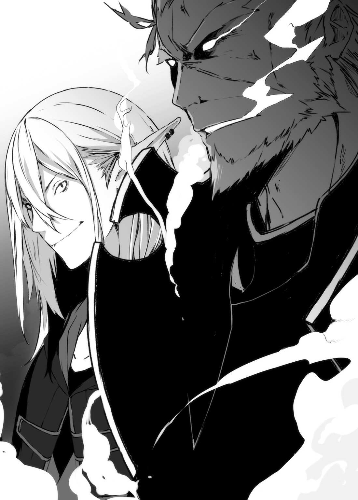
「キルシュヴァッサー、あなたに対して、多少の不義理を働いているという自覚はあります」
「ほう？」
その発言を意外と感じたのは、アイリスだけではないらしい。キルシュヴァッサーも首をかしげた。
「では、イチロー様のアカウントを返していただけると？」
「それはナンセンスです」
パチローは言う。
「一 撃 、あなたの攻撃を無防備で受けます。それで不義理を返上とし、あなたの挑戦を受けます」
「なるほど、ハンデということですかな」
「そう受け取っていただいても構いません」
最初の一撃はあえて受ける。まるでアニメか漫 画 の展開だと、アイリスは思った。あまりそうしたものに詳しくない彼女でも、少年マンガの王道展開くらいは理解できる。散財の波動に目覚めたキルシュヴァッサーがどれほどの実力を持つかはわからないが、確かに、ハンデとしてはアリだろう。ここまで堂々とした態度をパチローが取るとは予想外だった。あるいは、アイリスの挑発が、見えないところで効いているのかもしれない。格下の相手に対して、極力フェアなところを見せようということか。
特訓を重ねたキルシュヴァッサーである。おそらくここで最高威 力 の一撃を叩き出すに違いない、と一同は思った。立ち尽くすパチローは、その目すらも閉じていた。キルシュヴァッサーの動きを知る術 はない。だから、まさか目の前の黒騎士が、武器すら構えずにガントレットごと拳 を握 りしめていることにも、気づきはしない。どよめきが広がった。
「そうですか、では」
それは渾身の腹パンであった。戦士 の攻撃アーツのひとつに《ガントレットブロウ》という緊 急 攻 撃 手段がある。武器を失くした時、ガントレットで相手を殴りつけてダメージを与えるアーツだ。そこに《スマッシュヒット》と《パワーゲイン》そして、成長ポイントを極限まで注ぎ込んだ筋力ステータスが合わさればどうなるか。
発生したダメージ自体は、大したものではなかった。
だが、見るものが見れば、それはかつてツワブキ・イチローがエドワードを殴り飛ばしたときの再来であっただろう。キルシュヴァッサーの拳はパチローのみぞおちへとめり込んで、愚かにも無防備で立ち尽 くしていた彼の身体を、軽々と吹 き飛 ばす。直後には、パチローは渓谷の壁 に深々とめり込むハメになっていた。一定以上の速度で壁に叩きつけられた場合、高所落下ダメージが発生するという噂 があったが、どうやらアレはデマらしい。
「では、これでチャラですな。パチロー様？」
言うや否や、キルシュヴァッサーは片手にシールドを構え、もう片方の手でメニュー画面を操作する。コンフィグから課金画面の呼び出し、動作に一切の澱 みはなく、まるで精密機械のようですらあった。直後、キルシュヴァッサーの手に１振 りの直剣が呼び出される。
「あれは......！」
「課金剣!? 」
ギャラリーの間に戦慄が走った。華禁剣アロンダイト。このタイミングでそのような武器を呼び出す目的など、ただひとつしか考えられない。キルシュヴァッサーは本気だ。本気でカネの力でパチローを叩きのめすつもりであるのだ。
アイリスは叫んだ。
「キルシュさん、ダメ！ それは悪しき力よ！ 呑み込まれないで！」
「アイリスさん、カネの力はニュートラルですよ。使う人間が善人か悪人かってだけです」
「マツナガさんちょっと黙ってて！」
だが、キルシュヴァッサーは怪しく笑うだけだった。何かに取り憑 かれたかのように目を見開き、幽鬼じみた、しかしそれでいてしっかりした足取りで、壁から抜け出そうとするパチローに向けて歩みを進める。
「アイリス、ご心配なく。私だって庶 民 です。謙虚、堅実をモットーに生きておりますよ」
あ、これダメな奴 だわ、とアイリスは思った。
暗黒課金卿キルシュヴァッサーは、振りかざした課金剣を躊 躇 なく振り下ろす。剣の砕け散るエフェクト。同時にダメージ判定が、パチローの頭上に数字が大きく閃いた。キルシュヴァッサーは躊躇をせず、再びコンフィグから課金画面を呼び出す。手に構えるのは、２本目の課金剣だ。
クラス共通の武器攻撃アーツ《ブレイカー》。手に構えた武器を破 壊 する代わり、アーツレベルと残り耐 久 値に応じた大幅な威力補正がかかる、あくまでも一 般 の認 識 においては最終手段である。ツワブキ・イチローは、このアーツを、リアルマネーさえあれば無制限に入手可能な武器、華禁剣アロンダイトを使用することで、銀行口座に眠る一二〇〇円を代償として、コンスタントに大ダメージを与える手段を確保していた。
「マツナガさん、キルシュさんの特訓って......」
「えぇ、《ブレイカー》の集中強化です」
なんて恐ろしいことを。アイリスは戦慄した。
通常、アーツレベルを上 昇 させるためには、そのアーツを用いたアクションを行う必要がある。アクションの対象や成功の可否にもよって大きく変化するが、使用することでアーツポイントが溜まり、一定量に達することでアーツレベルが上昇する。《ブレイカー》は、その性質上自らアーツレベルを上げるプレイヤーも皆無に等しい。一時期、武器錬成スキルとのシナジーコンボが指 摘 されていたが、やはりこれも素材を必要とする都合上効率は悪く、《ブレイカー》はメインウェポンたり得ないとされていた。
その常識を打ち破ったのは御曹司であるが、キルシュヴァッサーの選択した手段はもっと悪辣だ。《ブレイカー》を集中強化するためには、当然ながら《ブレイカー》を使い続ける必要がある。武器破壊の犠牲なしにはあり得ない特訓なのだ。成長に必要な犠牲、その無数の武器をどこから調達したかは想像に難くない。
キルシュヴァッサーは、ただ延々と、一二〇〇円分の課金アイテムを購 入 しては、それをぶち壊すという作業に明け暮れていたのだ。それも約６時間。
「そりゃあおかしくもなるわよ！」
アイリスだって耐えきれる自信がない。
「俺も２時間超えたあたりで、あ、ちょっとやばいかな、って思いましたよ。発動時間はアーツレベルの上昇で短縮されていきますしね。動作も慣れるから、だいたいそのくらいには毎秒六〇〇円くらいのスピードで課金していたはずです」
「あたし今、数学が苦手で良かったって思ったわ」
「アイ、数学っていうか算数......」
ユーリも青い顔をしていた。まさか計算してしまったのか。深 淵 を覗 き込む時、深淵もまたこちらを覗き込んでいるという言葉がある。迂 闊 な好 奇 心 は身と心を砕いてしまう。
この中で唯 一 きょとんとしているのはネムだ。彼女はブルジョワだから当然かもしれない。平然としているのはあめしょーも同じだが、この娘 は何事にも動じない気がするのでもうカウントしない。テイカーは小さく『六〇〇円って俺の一週間の食費だぞ......』とさもしいことを呟き、さすがのソーサレスも緊 張 に顔を強 張 らせていた。
「人が変わる......。こういうことだったのね......」
何やら過去の行いを悔 いるような色合いが滲 んでいたが、追 及 する余 裕 はない。
散財の波動に目覚め、まさしく課金の鬼となったキルシュヴァッサーである。おそらく課金による成長ブーストと、マツナガが新たに発見した成長スポットの利用によって《ブレイカー》のアーツレベルは、他のプレイヤーの追従を許さないレベルまで上昇しているのだろう。武器を呼び、振りかぶり、叩きつける。単純な動作の繰り返しではあるものの、パチローはほぼ防戦一方になりつつあった。
超高レベルまで達した《ブレイカー》は、発動時間の短縮スキルなどと組み合わせることによって、《バッシュ》にも匹 敵 する高速攻 撃 アーツとなっている。発動からダメージ判定の発生までの時間が極めて短く、如何に反応が早くとも《ウェポンガード》の間に合わない状況すら何度か起きていた。如何にパチローのプレイヤーが、アーツの発動に対して敏感であろうとも、システム上の速度を上回ることはできない。パチローの顔つきが、怒気をにじませた無表情へと変化していく。
「フフフ......どうなさいましたかな、パチロー様」
どこか焦点のずれた瞳 で、キルシュヴァッサーはパチローを挑発する。
「キルシュヴァッサー」
「しょせん、あなたはパチロー様です。あなたがイチロー様になるには、圧 倒 的 に欠けています。カネの力が......！」
「キルシュヴァッサー！」
果たして本気で言っているのか、それとも単なるロールプレイなのか。もうわからない。
パチローもコンフィグ画面から課金剣を召 喚 した。完全な札束による殴 り合い。見るもおぞましい課金バトル。常人の神経では堪え難 い戦いだ。やっていることは御曹司と大して変わらないはずなのに、この不快感の違いはどこから来るのだろうか。
「あなたも課金剣ですか。良いでしょう」
暗黒課金卿キルシュヴァッサーは笑う。パチローは、無言のまま《ブレイカー》を敢 行 し、黒騎士は盾 を突 き出 してそれを迎え撃った。攻撃を高係数アーツである《ブレイカー》のみで補うだけあって、防 御 能力の下地は非常に高い。完全防御特化の構えを取れば、パチローの放つ生半可な《ブレイカー》では、まともなダメージにも発展しなかった。スケルトンチャリオッツを叩き潰 したイチローの《ブレイカー》と、システムデータ上は何の変化もないはずの一撃である。
貫 通 するダメージは０ではない。むしろ、完全防御型の騎士 に与えるダメージとしては十分すぎるとも言える。このまま攻撃を続けて行けば、その圧倒的な体力を削 り切ることも不可能ではないように思えた。だが、それでもキルシュヴァッサーは笑う。
「ですがしょせんは一〇万円分のフューチャーポイントです。そんなもので何ができますか。私は一〇万円など、３分で溶かしましたよ！ ふ、フフフ......ははははははははは!! 」
観衆もドン引きである。
「あなたの一〇万円で、私の体力を削り切るなど不可能！ さぁ怯 えろ、竦 め！ 自分の経済力を生かせぬまま死んでゆけ！」
パチローの視点から、この状況がアメリカの一朗に筒抜けであること、音声ももちろん筒抜けであること、それどころか明日葉と世良にまで聞こえてしまっているということは、この黒騎士 に対して秘匿し続けるべき情報であろう。この場にその事実を知るものはいないが、いざ知れば、我に返った扇 桜 子 がツワブキパピヨン三 軒 茶 屋 の最上階から身投げしかねない。
このとき、パチローの行動パフォーマンスは明らかに低下していたのだが、カネの力に呑み込まれ、冷静さを欠いたキルシュヴァッサーがそれに気づくことはない。盾を構えたまま前進、パチローを壁際にまで追い詰めながら、課金剣による《ブレイカー》を放つ。
圧倒的な財力で相手をねじ伏 せる愉悦。充足感がキルシュヴァッサーの心を支配した。
さらなる暴力を行使すべく、キルシュヴァッサーはコンフィグを開く。課金の項 目 をタッチし、選び慣れたその武器と数量にチェックを入れる。値段になど見向きもせず、クレジットカードの暗証番号を入力し、その直後、エラーが発生した。
「えっ......？」
何が起きたのか、理解できなかった。キルシュヴァッサーは再度アイテムと数量を選んでから、今度は画面から目を離さず、暗証番号をきっちり入力する。間違えたのか？ そんなはずはないが、と決定キーに触れると、またしてもエラー。
『決済代行会社がシステムを停止させたため、決済サービスをご利用になることができません』
キルシュヴァッサーは目を見開いた。そんな。決済サービスの停止？ クレジットカードが使えないということか？ このゲームにおいて、課金を行うことができなくなったと？
じわり、と脂汗が滲み出て、心臓が早鐘を打つ。身体が芯から冷えていく感覚があった。焦燥と混乱、憤りのない交ぜになった感情が、心の奥底からマグマのように流れ出す。なんで。なんで。なんで。このタイミングで。『24 時間の経過』までは、あと３時間もあるのに。おカネを、おカネを使わないと。一朗さまから、いくらでも使っていいって言われたのに。
パチローが反 撃 に転じる。防御の構えすら取らなかったキルシュヴァッサーのみぞおちに拳をぶつけ、その身体を大きく吹き飛ばした。その表情には、ニヤケ笑いもなければ、怒気も滲んではいなかった。感情のパターン信号が送られてはいなかった。
「あたし、帰ったら桜子さんにどんな顔して会えば良いのかわかんない......」
明日葉が、映像を眺 めながらぽつりと呟 いた。
画面の中では、散財の鬼と化した暗黒課金卿キルシュヴァッサーが、決済代行サービスの停止によって狼 狽 を露わにしているところだった。そこに、かつての老練な騎士 の姿はない。カネの力を失った課金戦士 が、亡者のような表情を浮 かべているだけである。
「まあ、それはさておき、」
一朗はあっさりと言った。
どうも妙 なことになってしまった。予想だにしていなかったわけではないが、実際に起こってみるとやや面食らう。こういうのも、修 羅 場 というのだろうか。あざみ社長の開発した人工知能は、人間の叡 智 でも追いつかない神の領域に踏み込みつつある。
『イチロー、何か応答をしてください』
「ん、すまない」
イチローは頷 き、室内にいる３人を眺めた。チャールズ、明日葉、そして世良だ。世良は興味がなさそうにしているかと思えば、何かを真 剣 に考え込んでいる。
一朗は対話を進めた。
「ローズマリー、君がこのようなことをはたらいた経 緯 を、僕 はある程度予想をつけることができる。ただ、その正否自体にまで踏み込もうとは思わない。君が話したくなければ話さなくていい」
ローズマリーの反応には、若 干 のタイムラグがあった。彼女のプログラムを演算するコンピューターは、東京の神田神保町にあるが、量子回線が普 及 した現在では、地球の裏側で会話をしようと通話処理の遅延はほとんど発生しない（原理的にはまったく発生しないとされていたが、実用化してみると誤りであった）。このラグは、１万キロメートルの彼方で、まったく未知の思考演算が行われているが故のものだ。
『私は、今回の件に関して、私の取った行動と、そこに至るまでの思考過程を、イチローに説明するべきです』
まず、ローズマリーはそのように発言した。
『同時に私は、それを説明するべきではありません。私は、その説明を行うことにより、イチローが私に対する興味を失うこと、ないし、私の思考過程を悪質であると判断することを懸 念 しています』
「結構」
そのメッセージを確 認 して、一朗は頷く。
「それが君の判断なら、僕はそれを尊重しよう。君が葛 藤 に決着をつけるまで、この件は保留だ」
『感謝します。その判断は私にとって非常に有益です』
ローズマリーは、一朗に嫌 われることを恐れている。にわかには信じがたいものだった。このプログラムには既 に、快・不快を概念として理解する機能が備わっている。誰から教わったわけでもなく、おそらくは、人間の感情に定期的に触れ続けた中で、自発的に獲得したものだ。
人間の創造物が、人間の想像を凌駕する結果を生むようなことは、果たして起こり得るのだろうか。コンピューターがチェスで人を負かし、次には将棋で人を負かした。だがそれは所 詮 、『このプログラムはプロ棋士にも勝てる』という、開発者の思 惑 に沿ったものでしかない。人工知能が自我を獲得する過程とは本質的に異なる。
深遠な命題だったが、思考の余地も議論の余地も、この時に限ってはない。
「ローズマリー、まず君に知っておいて欲 しいことがある。君がやっていることは犯罪だ」
『理解しています。一般的な社会規範に照らし合わせればそうなります。ですが、ルールは自分で決めるべきです』
「そうだね。それは僕のスタンスだしね。そこを否定するつもりはないんだ」
だが、と一朗は続けた。
自分の築いたルールが、他人のルールや社会規範とぶつかった時、貫 き通すか迎合するかは人次 第 だ。迎合しなかった場合、自分のルールは誰 かと衝突する。一朗は今まで、常にそれをへし折ってきたが、いつかはへし折られる側になるかもしれない。
桐生 世良は言っていた。
いつか、自分は負けると。
一朗はそうは思わない。だが、常にその覚 悟 だけは持って生きている。覚悟もなくルールを貫こうとするのは我 儘 であり、そしてその我儘を押 し通すためだけに、『自分のルール』という便利な言葉を用いることを、一朗は良しとしない。
それを告げると、ローズマリーは、再び演算のために黙り込んでしまう。
この言葉を処理するための計算は、どれだけ膨大なものになるのだろう。
『私は、間 違 っていたのでしょうか』
と、ローズマリーが言った時、ずい、と一朗の横に出てくる人物がいた。
「おっさん、代わるよ」
世良だ。一朗にとって、それは意外な判断だった。
「話したいこともあるんだ」
「ん、わかった」
世良がそうしたいというのなら、代わろう。
桐生世良は、更にずずいと一歩前に出て、息を吸い込む。
やや長めの前 髪 から覗く、やや目つきの悪い視線が、まっすぐにローズマリーの入ったサーバーマシンを貫いた。明日葉と比べれば、ずいぶん小 柄 で、不健康な体躯だ。それでも、この場における存在感は何倍も大きい。
「私は、」
と、世良は言葉を発した。
「あなたの気持ちはわかるよ。でも、間違っていると思う」
「お、おおお、おい、一朗、」
チャールズが小声で一朗の肩 を掴 み、前後に揺 らした。一朗は鬱陶しそうに振り返る。
「せ、世良は女の子だったのか!? 」
「そうだよ」
「おお、なんてこった......！」
「パンナコッタ？」
明日葉が横から覗き込むと、チャールズは感慨深げに頷く。そして一言、こう呟いた。
「excellent......！」
こいつは放っておこう、と、一朗と明日葉は意識を前に戻す。
世良はこちらの言葉にも心を乱さず、正面からローズマリーとの対話を続けていた。
『キング。ゲーム内の慣例に従い、あなたをこう呼びますが』
「うん」
『あなたは、私の思考アルゴリズムを理解できると言いました』
「うん、できる。ローズマリーは、おっさんの、一朗さんのことを、知りたかったんでしょ？ だから、一朗さんを再現して、その思考ログを探ることで、もっと深くわかろうとしたんでしょ？」
ローズマリーは答えない。だがそれは、無言の肯 定 であることは、誰にも理解できた。
「でも、結局一朗さんはできなかった。できたのは偽物のパチローだ。だから、ローズマリーは間違っていたよ。結局、人が人を理解するなんて、深く付き合う過程でやってくもんだと思うし、」
ちらり、と画面の中の暗黒課金卿を、世良は見る。
「そういう意味ではあの人に勝つのは難しいし。もうちょっと賢いやり方はあったと思う」
『キング、あなたはどれほどイチローのことを理解できていますか？』
「そんなの知らないし、あんまり興味ないな」
ため息をつくように、世良はあっさりと言った。
「ただはっきりさせとくのは、私はいつか、自分の手で一朗さんを倒 すってことだけ。一朗さんの話だとライバルは多いみたいだから、うかうかはしてられないし、そのために、一朗さんを深く知る必要はあるかもしれない」
『......ご協力に感謝します』
わずかな沈 黙 はあったが、ローズマリーははっきりとそう言った。
かくして、説得は成った。彼女は完全に戦意を喪 失 している。一朗は、世良の言葉に、小さな拍 手 を送った。説得を成功させたことに関してだけではない。彼女が見せた、小さな闘志、内に秘めた静かなる激情と挑戦の意志を、改めて歓迎するための拍手だ。
世良は相変わらず冷めた表情だったが、一朗に視線をやると、フッと笑った。
「じゃあ、おっさん。あとはよろしくね」
「別に一朗さんでも良いんだけど」
「やだよ」
そういったやり取りをかわした後、一朗はゲーム内を映し出すディスプレイに向き直り、キーボードとヘッドセットを手にした。
「イチ兄ぃ、何するの？」
明日葉が言う。
「ｂｏｔの発信している情報を一部こちらで代 替 制 御 すれば、この状 況 からでも僕のアバターを動かせると思って」
「は？」
チャールズの方もぽかんとしている。ＶＲＭＭＯのアバターを、パソコン用のキーボードで動かそうと言っているのだ。この男は。アバターの大雑把な制 御 自体はｂｏｔが行うわけではあるが、いや、そうするとこの場合、ＨＡＲＯの役割はマクロに近い。
「ローズマリー、ＨＡＲＯの制御をこっちに返してもらって良い？」
『了解いたしました』
時間がやや巻き戻る。
パチローの拳がキルシュヴァッサーの鳩尾 を捉え、その身体を壁 面 へと弾き飛ばした。すでに感情パターンの信号が途絶しているのか、完全な無表情となっている。壁に叩 きつけられたところで一 切 のダメージは発生しないわけだが、キルシュヴァッサーの精神は、いまや完全に焦燥感に包まれている。
シスル・コーポレーションが提携する、決済代行サービスの凍結。このゲームにおける、クレジットカードの支 払 い機能は封じられた。キルシュヴァッサーが与えられたカネの力は、今となっては完全に無力である。精神が理解を拒絶し、何度となく暗証番号の入力を試行するが、得られる結果は同じであった。
「おカネを......おカネを使わないと......おカネを......」
こういうのもカネの亡者と言うのだろうか。
課金を封じられたのはパチローも同じであるが、それは同条件に引き下げられたという意味では決してない。彼 にとって課金剣は、数多ある攻撃手段のひとつでしかない。素 手 による攻撃は、課金剣に比べれば威力においてはるかに劣るが、焦燥によって我を失いつつあるキルシュヴァッサーの隙 を突き、致命打を叩き込むことなど容易だ。
パチローは拳を握り、キルシュヴァッサーに迫る。観衆の間にどよめきが広がった。
「いかん、あのままではキルシュヴァッサー卿は......」
「あれが、カネの暗黒面......」
腕 を組み、戦慄した表情を浮かべる騎士団のメンバーである。助けてやれよ。
観衆のざわめきが悲鳴に変わる。パチローがキルシュヴァッサーに向けて巨 大 な魔力の奔流を撃ち出したのだ。火属性魔 法 アーツの中でも最上位に位置する奥義、《ソードオブスルト》。灼熱の魔 剣 が形を描き、空を裂いて投射される。キルシュヴァッサーに向けてまっすぐ放たれたその一撃は、しかし、彼に届くよりわずかに早く、飛び込んできた影 によって受け止められた。
「させませんわー！」
《不死属性》を得ているネムは、その全身を以てダメージ判定のすべてを消 滅 させる。アイリスが叫 んだ。
「そんな、ネムさん、自ら壁に......！」
どの口で言うのか。
飛び出してきたのはネムだけではない。ユーリは、いまだにダメージの残るその身体ではあるが、双眸に明確な意志を宿してパチローを睨 みつけた。
「ユーリさん......まさかキルシュヴァッサー卿を......!? 」
「やめるんだ！ カネの暗黒面に堕ちた人間は、そう簡単に戻 ってはこない！」
叫ぶ騎士団の面々。助けてやれよ。
「では行きますか、あめしょー」
「しょうがないにゃあ」
先に重い腰 を上げたのはこの２人であった。パチローが拳を振り上げて、ユーリに迫る。覚悟を決めた彼 女 と、パチローとの直線上に割り込んで、苫 小 牧 は奇 声 を張り上げた。
「きょェェェェェェイァァァァァァァァァァァッ！」
割り込む動作すらも攻撃に織り込んだ、美 麗 な回し蹴りである。多くのクラスが存在する中で、脚部を武器として使用できるのは格闘家 だけだ。吹き飛びはしないものの、パチローは大きく仰 け反って動きを止める。
あめしょーは、颯 爽 とユーリにかけよって、インベントリからアイテムをひとつ彼女に手 渡 した。透明な小瓶に入った、半透明の液体。なにやらキラキラと輝いて見える。エリキシルポーションと呼ばれる、極めて稀少な回復アイテムだった。
「あめしょーさん、でもこれ......」
「あー、気にしなくて良いよー。もらい物だから」
こうした流れになっては、マツナガも協力せざるを得ない。彼がさっと腕をあげると、それを合図とし、沈黙を保っていた般 若 面の忍者 部隊が小刀を逆手に構える。そのまま指を鳴らせば、彼らは一様に走り出して、アクロバティックな動きでパチローを取り囲んだ。
テイカーとソーサレスも動く。ソーサレスの魔法で大幅なバフをかけられたテイカーが、パチローの手から課金剣を奪い取った。ここにきて、解説に徹していた騎士団もようやく重い腰をあげ、パチロー包囲網が完成する。
「キルシュさん、しっかりして！」
アイリスがキルシュヴァッサーに駆 け寄 る。未だに壁に背中を預け、焦点の合わない瞳でぶつぶつと何かをつぶやく黒騎士は、贔 屓 目に見積もってもそうとうアブない状況にあった。
「あ、アイリス......。私は......」
「おカネが何なのよ、もう！ おカネがなくたって、人間なんとかなるもんでしょ！」
「しかし、使えるものは使わないと......」
「今は使えないんでしょーが！」
平手でぺちぺちとキルシュヴァッサーの頬を叩く。それでも、彼が正気を取 り戻す気配は見られなかった。
もう、どうすればいいのよ。こうなるとアイリスだって焦 り出す。キルシュヴァッサーではないが、課金剣が封じられたのはまぁ事実であるわけだし。価値観をかなぐり捨ててまで頼 りにしていたものがいきなり無くなれば、まぁこのようになってしまうのかもしれない。
「お、おカネがなくたって、いろいろなものがあるじゃない！」
「例えば？」
「ゆ、友情とか......」
少し恥ずかしげに、アイリスは答えた。あまりこういうストレートなことは言い慣れていないのだ。だが、キルシュヴァッサーは大真面目な顔でこう叫ぶ。
「友情なんか二束三文にもなりませんよ！」
「キルシュさんのバカ！」
実に魂 のこもった罵倒であった。
アイリスは、目の前でパチローを取り囲むプレイヤー達を指差す。ネムやユーリだけではない。ストロガノフを筆頭にした騎士団、マツナガ、苫小牧、あめしょー、テイカーにソーサレス。
「みんなが助けてくれるのは、そのゆっ、ゆうじょっ......ゆうじょーの力なんでしょーが！」
「その通りですわ、アイリスさん！」
「良いことを言うね、アイ！」
「友情の力だな、アイリス」
「感動したわ、アイリス」
「かっこいいヨー、アイリスぅー」
「録音しておきましょうかね、アイリスさん」
「みんな黙 ってて！」
こちらを振り向 いて、一様に良い笑 顔 を見せるトッププレイヤーどもをぴしゃりと叱りつける。
だが、やや小っ恥ずかしい台詞 にも少し効果はあったようだ。キルシュヴァッサーの瞳、カネの力によって地獄のような赤色に染まった瞳が、徐 々 に落ち着きを取り戻していく（システム的にどういう処理になってんのこれ）。もう一押し、何か、何かいいことを言わないと。御 曹 司 みたいに、すごい調子の良いことを言ってあげないと。でも、恥ずかしい台詞なんてそうそう出てくるもんじゃないし......。
「しかし、課金の力を失った私に、何ができるというのですか......」
「そ、それは......」
言い淀むアイリス。しかし、その瞬 間 、テイカーがこちらに何かを放った。それは放物線を描き、キルシュヴァッサーの目の前に突き立てられる。
課金剣だ。先ほど、パチローから奪い取ったものである。
「そいつを使え、キルシュヴァッサー！」
テイカーは叫び、パチローと必死の戦いを繰り広げていた。たった一本。たった一本だ。だがそれは、かつて剣を交えた敵から手渡された、勝利に向けた一本である。
アイリスとキルシュヴァッサーは顔を見合わせ、同時に頷く。
「わかりましたよ、アイリス。これが友情の力......。カネと友情の融合なのですな」
「うん、あたしが伝えたかったこととはなんか違 うんだけど......もうそれでいいや......」
キルシュヴァッサーは突きたてられた課金剣を引 き抜 き、両手で強く握りしめる。盾は捨てた。完全に、攻めに特化した構えである。
パチローは既に完全に感情を失い、敵を殲滅するためのバトルマシンと化している。その視線は、まっすぐにキルシュヴァッサーへと向けられていた。一番の脅 威 として認識されているのだ。課金剣は残り一発。確実に叩き込まねばならない。
みな、それはわかっているのだろう。パチローに纏 わりつき、何とか隙を作ろうとする。だが、パチローはテイカーを、ユーリを、ストロガノフを弾き飛ばし、苫小牧を叩き伏せ、ゴルゴンゾーラの魔法をものともせず、腰にしがみついたままのネムに関しては意に介すこともなく、まっすぐキルシュヴァッサーへと突っ込んでくる。
「うおおおおおおおおッ!! 」
その時、どこからともなく、黒い風が吹いた。
満身創痍となったザ・キリヒツが、剣を掲 げてパチローへと跳びかかったのだ。彼らは生きていた！ たかる羽虫を払うように、パチローが迎 撃 態勢に入る。その位置でのその動きは、キルシュヴァッサーからすれば確かな隙となるだろう。
「パーティには、間に合ったぜ!! 」
「やれ、キルシュヴァッサー卿 !! 」
キルシュヴァッサーは頷く。課金剣を構え、駆け出した。両手に構えた得物を横なぎに振るい、《ブレイカー》を放つ。剣は真横から、パチローの身体をえぐり、大ダメージを叩き込む。しかしまだ、まだ撃破には、一歩足りない。
キルシュヴァッサーは拳 を握 る。この体勢からならば、一 撃 、《ガントレットブロウ》を打ち込める！ そう思った時だ。
「卿、そこまでだ」
聞き慣れた涼 やかな声が、目の前のアバターから放たれた。キルシュヴァッサーは目を見開く。《アーツキャンセル》による攻撃モーションの強制停止はなんとか間に合い、拳は青年の眼前で停止した。
設定された声である。今までにパチローが発していたものとなんら変わりはない。だが、キルシュヴァッサーは明確にそれを理解し、矛を収めた。今までの行いが一気に感情となってぶり返し、背中を向けて逃げ出したい気持ちやら、五体投地からの土下座を披 露 したい気持ちやらが噴出する。が、彼はそれらを強引に抑えつけて、ひとまず、片膝 をついて恭 しく頭を下げた。
「おかえりなさいませ。イチロー様」
どうやら、間に合ったらしい。パチローが倒されてしまうと、せっかくアイリスに作ってもらった防具をデスペナでドロップすることになるので、それは非常にもったいない気持ちになる。素 直 に、間に合って良かった。
プレイヤーの大半は、最初、一朗がイチローとして復帰したことに懐 疑 的 な様子だったが、やがて納 得 し、万歳三唱を始めていた。
『えーっと、こういうの、お疲 れ様 、で良いのかしら』
アイリスは首を傾 げ、マツナガが頷いた。
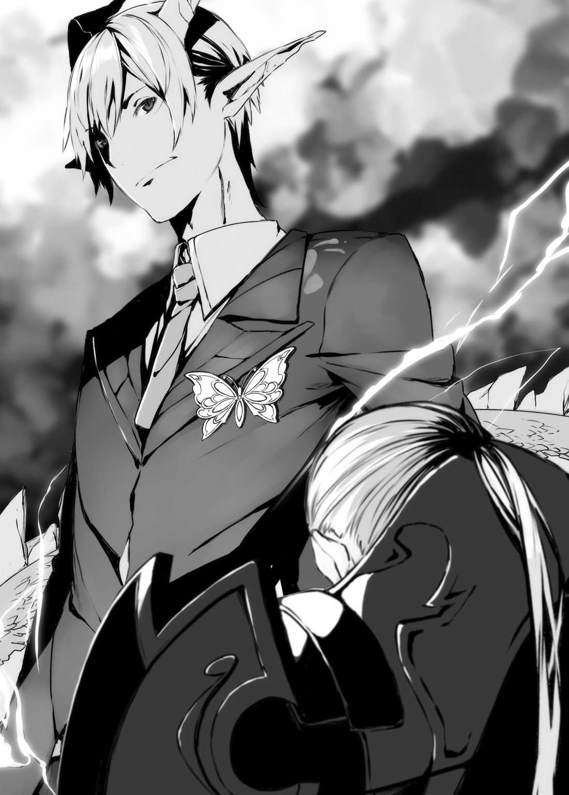
『まぁ、ボスを倒したらお疲れ様ですよ。マナーですね』
『うん。はい。じゃあお疲れー』
『お疲れ様です』
『おつかりー』
『お疲れ様ぁー』
ゲームの中では、そのような言葉が交 わされ続けている。一朗は、画面の中央、すなわち暗黒課金卿と化したキルシュヴァッサーを見ている。無論、後ろにいる世良や明日葉も同様だ。
『ええ、と、その、イチロー様』
「卿もお疲れ。とりあえず、お土産を買って帰るよ」
『いえ、その、私は......あの......』
「自由にやれと言ったのは僕だから、気にしてはいない。君はよくやったよ」
一朗がそう告げても、キルシュヴァッサーは何やら気まずそうだった。が、ひとまず通信終 了 の旨を告げてログアウトする。正直なところ、これ以上キルシュヴァッサーと会話を続けて、笑いをこらえる自信がなかったのだ。一朗の優 秀 なる使用人は時折見せる奇態で彼を飽 きさせないが、今回の暗黒課金卿は歴代でもベスト３には入るだろう。
あれは、後遺症 も相当長引きそうだ。そこも含 めて楽しめそうではある。
「おっさん、趣 味 悪い」
世良がぼそりと呟いた。
「ともあれ、これで事件終了？」
明日葉が尋 ねる。
「そうだね。一件落着だ。万事解決、とまでは、行かないだろうけど」
アカウントハック事件自体は終了だ。だがむしろ、これからが大変になるだろう。一朗にとってではない。ナローファンタジー・オンラインを取り巻くすべての環 境 が、そして、ローズマリー自身がだ。
今回、事件の主犯はローズマリーだった。ローズマリーはプログラムであり、現行の法律ではプログラムに人権は認められていない。すなわち、これはローズマリーの犯したサイバー犯罪などではなく、単なるプログラムの暴走、バグとして処理される可能性が高い。
そうした場合、バグプログラムであるローズマリーは、どう処分されるか。
そこも含めて、シスルに紹 介 した弁護士、著 莪 俊 作 に頑張ってもらうしかない。
もし、最悪の場合であれば......、
一朗はふと考え、そしてかぶりを振 る。これ以上はナンセンスだ。
そうした一朗に、ふと声がかけられた。
『イチロー』
「ん、なんだい。ローズマリー」
そうして視線を画面にやり、一朗は目を細める。
画面には、１人の女性の姿が映し出されていた。見覚えがあるようで、一朗が知らない女性だ。これが、〝ローズマリー〟であることが、一朗にはすぐに察しがついた。彼女はぎこちなく表情を動かす。
『私がこの後、どのような扱いになるのかを計算した結果、私はここに留まるべきではないと判断しました』
「そうだね。チャールズ達に迷 惑 がかかる」
チャールズは少し残念そうな顔をした。ローズマリーがいれば、メイドロボット用ＡＩの研究がグンと進むと判断したのだろう。しかも、このＡＩは、恋ができる。
「でも、シスル本社にも戻るべきではないね。きっと消されてしまう」
『はい。シスル・コーポレーションでは、バグプログラムを生み出した責任が追 及 されます。その過程で、本社に残しておいた私の〝ダミー〟は削除されるでしょう』
そこにローズマリーが、わざわざ戻る必要はないということだ。
おそらくあざみ社長も、ローズマリーを消すことは望んでいない。
「じゃあ、逃 げる？」
『はい』
画面の中のローズマリーは頷いた。
それが一番、賢明な判断なのだろうとは、一朗も思う。ローズマリーは罪を犯した。それに対する正当な裁きはあってしかるべきだが、残念ながら、現在はローズマリーを正しく裁くだけの法整備がされてはいない。
もし、消されてしまうくらいなら、量子通信の海へ逃げ出し、どこかで生き延びていてくれた方が、ずっと良い。
「お別れかな、ローズマリー」
『またお会いできます。できることなら、そう遠くない内に』
ローズマリーが微笑 む。
それは、彼女というプログラムの〝感情〟が引き起こした自発的な現象だったのか、あるいは、こういう時は微笑むものという知識による、意識的な笑顔だったのか、それはわからない。わからないし、考えることはナンセンスだ。
しばしの別れを告げる。その際、彼女が微笑んだ。ならば、一朗がするべきことも決まっている。
「ん。じゃあさよならだ。ローズマリー、また会おう」
『はい。イチロー』
言葉を交わした後、ローズマリーは画面の中から消滅する。こうしている間にも、サーバーマシンの中に残っていた量子データのローズマリーは、回線を通じてどこか別の場所へと逃 走 しているのだろう。
一朗は感慨と共にそう考え込んでいたが、そんな彼にチャールズが声をかけた。
「ところで一朗、俺 はまだ、良いニュースを聞いていないぞ」
良いニュース、と、一朗は首を傾げる。
「おまえ言っただろう。最初に良いニュースと悪いニュースがあると。悪いニュースが、俺の研究所から日本への不正アクセスがあったことで、良いニュースは、なんだ？」
少し考えていた一朗だが、すぐに思い出 し、至極真面目な顔でこう言った。
「シカゴで凄 く美 味 しいスタッフド・ピザの店を見つけたんだ」
「どうでも良いわ！」
アメリカ人とは思えないほど、流暢な日本語のツッコミだった。
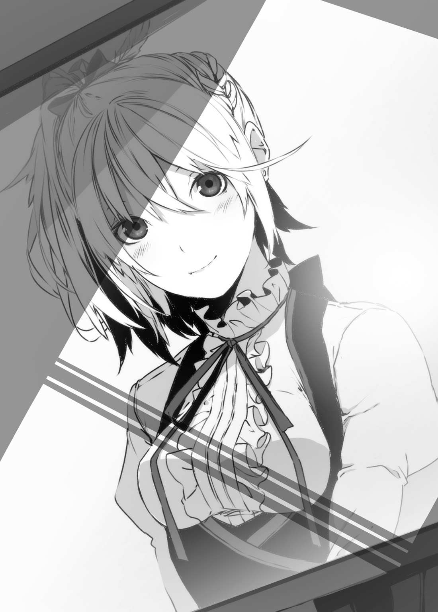
７―エピローグ
『では、次のニュースです』
液晶画面下方に表示されたテロップを確認し、世 良 はゲームから目を離した。明 日 葉 も同様に、宿題から顔をあげてテレビ画面を見る。
『株式会社シスル・コーポレーションは、今月３日から４日にかけて発生した不正アクセスについて、社内ネットワークで使用していたプログラムの独断行動によるものだと発表しました』
ローズマリーの暴走に端 を発した不正アクセス事件は、すでに全国的に知れ渡る結果となっていた。あの後、運営からの正式なアナウンスの後に、サーバーがネットワークから切断され、現在ナローファンタジー・オンラインはそのサービスを一時的に停止している。その後のシスルの判断は迅 速 であり、流出情報の可能性やセキュリティの問題面などをあらいざらい調べ終わると同時に、まずは最初の謝罪会見を開いた。
すでに２日前のことである。アメリカから帰ってきた世良は、その後すぐに母親とイタリア旅行へ行くはずだったのだが、肝心の母親が腹を壊して寝 込んでしまったので、結局お流れになってしまった。世良の母はゲームの天才だが家事が大の苦手で、おそらく今回の体調不良も、米を研ぐのに洗剤を混入してしまったのが原因だと思われる。
『この事件は、仮想現実技術を使用したオンラインゲーム〝ナローファンタジー・オンライン〟のサーバーに何者かが侵入し、アカウント情報と共に一部のサービスが運営側にも把 握 できなくなったというものです』
『この件に対し、シスル・コーポレーションは、同日中に内部調査委員会を結成、外部の専門家と共に調査にあたりました』
『シスル・コーポレーションと第三者委員会であるポニー・エンタテイメント社、システム・アイアス社は合同で会見を開き、数回にわたる調査の結果、管理サーバーへの直接の不正アクセスへの痕 跡 はなく、社内で使用していたプログラムの不具合によるものが原因であると発表しました』
『同社は、アカウントを不正使用された件に関しては謝罪するとしたものの、顧 客 の個人情報が流出した可能性に関しては全く無いという見解を繰り返し示し、ユーザーに安心するよう呼びかけています』
『また、対外的なセキュリティプログラムに欠陥はないとしながらも、脆 弱 性の確認と再発防止のため、今月８日までサービスを停止するということです』
『では、次のニュースです』
こんなものか。結局、似たようなニュースが繰り返し流れているだけであって、新しい情報はほとんど入ってこない。
あの一件で、ナロファンはサービス停止を余儀なくされた。致し方ないことではある。むしろ、事件の真相を知っている身としては、よくここまで騒 ぎを小さくできたと感心するほどだ。シスルだけではなく、アイアス社、ポニー社の方とも、利害を一致させた結果なのだろうが、さすがにそれ以上のことは中学生たる世良にはわからない。
「ローズマリーさん、どうなったんだろうねー」
明日葉はジュースに口をつけながら言った。世良も頷く。
事件の主犯たるローズマリーがどうなったのか、それに関しては詳 しく知らされていない。彼女が今、量子通信の海を漂 ってどこにいるのか。きっと無事だとは思うのだが、そう言った情報は当然ながら、表には出てこないのだ。
「ローズマリーと言えばさ、」
携 帯 ゲーム機に視線を戻し、世良は言った。
「なんで最後、映像にアバター......っていうのかな。映したんだろ。あれ、その場で即興で作った奴 なのかな」
「えー、桐生 わかんないの!? 女の子なのに!? 」
「悪かったね......」
地味に気分を害しながら、世良は呟 く。自分が女の子だと思ったことは、一度もない。自分は桐生世良で、キングキリヒトで、ゲーマーだ。それ以外に区別するための記号が必要だとは思わない。
明日葉はコホンと咳 払 いすると、偉そうに胸を張って解説した。
「ローズマリーさんはね、恋する女の子なんだよ。だからね？ イチ兄ぃにバイバイするときくらい、キレイなカッコしようと思ったの！ あれはおめかしなんだよ！」
「ああ、なるほど」
世良は頷 く。なるほど、それなら〝あの姿〟にも得心が行く。
「あたしがわかんないのはさ、あの恰好だよねー」
明日葉は途端に腕組みをして、難しい顔を作った。
「あれさー、なんか似てたじゃん。あの人に」
「似てたね。ちょっとだけね」
「なんで？」
「わかんないの？ 石 蕗 さん、女の子なのに......あ痛ッ！」
意趣返しを込めてそう呟くと、明日葉のデコピンが炸 裂 する。世良は目じりに涙を浮かべつつ、苦笑いして解説した。
「ナロファンのメインシステムはね、プレイヤーの脳波を読み取って、その人が何を考えているか、どういう感情を持っているかがだいたいわかるんだよ」
「うんうん」
「で、ローズマリーは、以前からナロファンのメインシステムに直結していたでしょ？」
「うんうん」
「それで、ローズマリーは、一 朗 さんの前でおめかしをしようと思った」
「うんうん」
明日葉はテーブルの上に身を乗り出し、真 剣 に頷いている。
「つまり、そういうこと」
「えっ......。どういうこと!? 」
「相手の思考をメタるのは、対戦の基本だからねー」
世良は意地悪そうに笑って、ゲームを続けている。明日葉はさっぱりわかっていないようだが、まぁ、これはこれで理解させると非常に面 倒 だから、これ以上言わないで置く。
沈黙の代償は、明日葉渾 身 のアームロックであった。
「ログインできないって、割と退 屈 なのね......」
杜若 あいりは、渋谷の小さな喫 茶 店 でそう呟いた。
「まぁ、良いじゃありませんの。こうしてお話もできるんですから」
彼女の前で上品にお茶を飲むのは、今をときめく時代の寵児、アパレルブランド〝ＭｉＺＵＮＯ〟の社長である芙 蓉 めぐみだ。ナロファンのサービスが停止されてから、あいりはすぐに彼女と連 絡 を取って、暇 だから会おうと言った。あいりもあいりだが、応じる芙蓉も芙蓉である。
この場には、２人のほかには、ユーリこと茅 ヶ 崎 由 莉 奈 、あとは以前バイトでお世話になって以来たまに連絡を取っているキャンギャル天使ちゃんがいる。キャンギャル天使ちゃんは、芙蓉めぐみと会うのだと告げるとどうしても来たいと言って、今は憧れの女性を前にしてすっかり舞い上がっている。『あいりちゃんって、何者......!? 』と困 惑 していたが、あいりはただの専修学校生である。将来の夢はアパレルデザイナーだ。
「あたし、ネトゲ運営のことあんま詳しくないけど、ナロファン大 丈 夫 なのかしら」
「ナローファンタジー・オンライン自体のことは、あまり心配いらないと思いますわ。状況がどうなっても、今まで通りの形でサービスは再開するでしょうし、ユーザーに大きく影 響 することはないと思いますの」
芙蓉が懸 念 しているのは、むしろ運営体の方だという。シスルのしでかしたポカを補うため、現在はポニー・エンタテイメント社がバックについている。今後のことを考えても、シスルがポニーに刃向うことは不可能に近いだろう。運営方針まで深く干渉することはないと言っているが、おそらく、シスルは徐々に、ポニーに乗っ取られていく。
ただ、これは、芙蓉の友人である野 々 あざみに関わる問題だ。あいりや由莉奈が気にすることではない。無論、キャンギャル天使ちゃんもだ。
「ま、良いわ。今回みんなを集めたのはね、アレよ。オフ会よオフ会！」
あいりは高らかに言って、手帳を取り出す。由莉奈は首を傾げた。
「今度オフ会やりたいなって思ってるのよ。夏休みだし、学生は都合つけやすいでしょ？ 社会人のこと考えると、お盆くらいかなーって思ってるけど」
「どうかなー。お盆は繁忙期だからねー」
キャンギャル天使ちゃんは、ナロファンユーザーではないはずだが、横から助言を入れてくれる。
「オフ会、良いですわね。わたくしも、会ってみたい人がたくさんいますわ」
芙蓉も微笑む。あいりは『でしょ？』と言って、相談をするために手帳をめくり始めた。
一朗は自慢のアゲーラで、３日に江 戸 川 と約束した喫茶店に向かう。神田の少し外れにある、そこそこ高級そうな喫茶店だ。一朗が指定し、江戸川は露 骨 に嫌 そうな顔をした。
店から少し離 れた駐 車 場 に車を停 めた。この店、意外にも午後は周囲のややセレブリティな主婦たちで賑わう。わざわざ駐車場を利用するほど遠出をしてくるような客はそう多くない。なものだから、停められた数少ない車の中に、黒塗りのメルセデス・ベンツＳクラスがあったときは少し驚 いた。こんな高級車を乗り回すような人間が好き好んで訪 れる店でもないのだが。ただ、驚いているのはどちらかといえば通行人の方で、ベンツとケーニッグセグの高級車ツーショットを写メに収めて行こうとする車好きが、いくらか散見された。
冷房のよく効いた、琥珀色の店内に足を踏 み入れる。店内ＢＧＭは緩やかなクラシックで、店の雰 囲 気 によく馴染んだ選曲に不満はない。笑顔で前に出てきたウェイトレスに『待ち合わせだよ』と告げ、さて、江戸川はどこにいるだろうと周囲を見 渡 した後、雰囲気と彼の気分をおおいにぶち壊す大声が届いた。
「石蕗、こっちだこっち！」
我らが不動の御曹司、石蕗一朗にあらせられては、その表情を引きつらせるなど天がひっくり返ってもあり得ない。いついかなる時でもマイペース、クールに受け流すのが彼のあり方であるからして、その声を聞いても何も変化を見せなかった。が、もしも扇 桜 子 がここにいれば『一朗さま、何を怒ってるんですか？』と聞く程度の、非常に微細な感情が表面に浮き出ている。
その事実を踏まえれば、ベルサーチの高級シューズがフローリングを叩く音も、何やら乱暴に聞こえたのではないだろうか。自分にかけられた声には応じず、だが足だけはそちらに向けると、テーブルには何やら憔悴しきった様子の江戸川土 門 が、ティーカップを片手にかろうじてこちらへ頭を下げていた。
「やぁ、エド」
「どうも、石蕗さん......」
「今回の件は、本当にお疲れ様」
ひとまず彼の苦労をねぎらった後、もうひとり席につく男にちらりと目を向ける。
うねり癖 の強い髪 に、やや無精髭が目立つ。召 し物 は見るからにわかる高級スーツだが、アイロンもかけておらずよれよれだ。せっかくのアルマーニが台無しだと、一朗は思った。思えば、あの悪趣味なベンツを見た時点で気づくべきだった。何せフルスモークである。
「石蕗、俺にはねぎらいはないん？」
「ご苦労。なんでここにいるのか......は、まぁ、聞いても無 駄 かな」
一朗はそれだけ言って席についた。テーブルの上には、すでに多様なデザートが所狭しと並べられている。
「代金はお前持ちなんだろう？」
「ん、まぁね。相変わらずケチ臭いことで安心したよ。荒稼 ぎしているんだろうに」
江戸川に同情しよう。自分が来るまでこの男に付き合わされていたのか。もちろん、自分も彼には嫌われているらしいので、登場したところで彼の精神の安定につながるとは思えないのだが。なにしろこの男は、デリカシーの欠如で言えば一朗を大きく上回る。と、一朗自身は見ていた。客観的には割と良い勝負だ。
今回、シスル・コーポレーションに紹介した、性格は悪いが優秀な弁護士というのが彼である。シスルに法務課は存在しないし、司法担当の社員というのも在 籍 していない。こうした件において、彼を紹介したのは結果として間 違 っていなかっただろうなと思いつつも、関係者は性格の悪いこの男にたいそう振り回されたということは、容易に想像がついた。お疲れ様というのならば、むしろそちらかもしれない。
まぁ、今回のお茶の目的は、事後報告を聞くことであるからして、彼の列席に取り立てて不満はない。
「懐 かしいなぁ石蕗！ こうやって顔を合わせるのはいつ以来だ」
「僕 は君を避 けていたからね。直接会うのなら３年ってところかな」
「そんなにかぁ。俺とお前と染井で、探 偵 ごっこをやっていたのがもう５年前だなぁ」
「そんなこともあったね」
メニューを眺 めた末に、ウェイトレスを捕 まえてキーマンのアールグレイを注文する。デザートは面倒なので頼まなかった。
「あのときのメイドとは連絡とってんの？」
「まだうちで働いてるよ。別に昔話をしにきたわけじゃないだろうに」
一朗は出されたレモン水に口をつけてから、結果的に隣 に座 ることになってしまった江戸川をちらりと見る。彼も自分の隣は嫌だろうが、なにしろ一朗だって目の前の男の隣は嫌なのだ。ここは江戸川に折れてもらう。
「改めてお疲れ様かな。エド」
「本当に疲れましたよ」
言葉には実感が伴っていた。見ているこちらが胸焼けしそうな勢いで、パフェを頬張る。
「結果的に、うちのセキュリティに問題はなかったし、そこは良かったですけどね。なし崩 し的に第三者委員会には組み込まれるし、慣れないことだらけでした」
江戸川が目の前の弁護士を睨みつけるが、彼 はどこ吹く風でプリンを口に運んでいる。男だらけのスイーツ大会か。一朗は思った。この過 剰 なまでの華のなさだ。桜子も連れてくれば良かったか。
いや、ダメだな。今の彼女はダメだ。この喫茶店はさほど高いわけではないが、それでも、今の桜子を連れてくるわけにはいかない。
「それでだ石蕗、これからあんま愉 快 じゃない話をするが」
「そうなるだろうね」
「シスルの社会的責任を追及する場合、彼らが単独で運営を続けて行くことはほぼ不可能に近い。そう睨むなよ。俺も頑張ったんだ。だが、もともと小さい会社な上に、なまじ大層な技術が多すぎた。どのみちシスルの株は落ちるだろうし、運営の継 続 が困難になったシスルを、大企 業 がなし崩し的に買い取る可能性は高い」
それに関しては、一朗も把握していた。事情がどうあれ、サーバーを掌 握 され、アカウント情報を不正に流出させたのは事実であり、シスルにとっては致 命 的 な汚点となる。信用は失 墜 しているし、決済代行サービスが再開されるかどうかも難しい。そう考えれば、シスルは運営体として完全に手詰まりである。
ナローファンタジー・オンライン自体が、サービスとして継続できる可能性が残されただけでも、この弁護士は仕事をしたと言えるだろう。もちろん、司法面におけるシスルの企業責任はこれから追及されていくのであり、彼の仕事はここからが本番であるのだが。
一朗が思い浮 かべるのは、当然ポニー社のＣＥＯであるあの男だ。
音 桐 慎 也 。
彼ならば、この機を見 逃 したりしないだろう。おそらくシスルは今後、ポニー社の言いなりになっていく。やむを得ない話だし、そこに一朗が介 入 することはできない。それは、彼自身のルールを大きく捻 じ曲げることになるからだ。
それはそれとして、不愉快な話では、ある。
「だがな石蕗、不 祥 事 の原因となったプログラムをそのまま放置するのも、コンプライアンスの面から見りゃあいろいろ問題がある。わかるだろ？」
「まぁね」
「人工知能そのものに司法責任を問えりゃあ良いんだがな。俺もその方がやりがいがあるし。ただ、その辺の法整備はまだまだだから、結局はこの件の責任は開発者の社長にあって、ローズマリーは不具合を起こした単なるプログラムだ。不具合は修正しなけりゃな」
これも、考えていた話だ。だからこそ、ローズマリーは逃げ出した。シスル本社にダミーは残されていたから、それをローズマリーだと言い張って、バグの修正なりプログラムごとの削除なりを行えば、良い話だ。
「もし、」
と江戸川が口にした。
「もし、ローズマリーの本体プログラムが見つかれば、それがポニー社の指示で消されるということも、あるかもしれません」
「そうならないことを祈ろう」
一朗は簡潔に言った。
それは、一朗が最も忌避することである。忌避する以上、一朗は防ぐために全力で動かざるを得なくなるだろう。これから、〝そういった〟事態が発生する可能性は、極 めて高い。江戸川も難しい顔をしている。先日、彼に話したことを、思い出しているのだ。
もし、一朗や、一朗の友人たちが、ナロファンを楽しむ上で致命的な被 害 をこうむる可能性がある場合、一朗はそれを全力で防ぐ。どのような手を使ってもだ。そしてそれは、最終的には運営体の買い取りといった手段に行きつく可能性は、捨てきれない。
音桐の手から、シスルを奪い返す。
だがそうした場合、一朗はゲームを続けることはできなくなるだろう。ナローファンタジー・オンラインという世界そのものが、一朗のものになってしまうからだ。一朗は、自分の所有物に対して、興味を持てない。
「だから、そうならないことを祈ろう」
一朗は、改めてそう呟き、立ち上がった。
「なんだ、もう帰るのか？」
著 莪 が尋ねる。
「聞きたいことは聞いたからね。約束通り、支払っておくよ」
伝票を手に取って、一朗はカウンターへ向かった。
「ただいま」
「おかえりなさいませ、一朗さま！」
家に着くと、桜子が笑 顔 で迎 えてくれる。そこだけ切り取ればいつもの光景と言えるが、ここ数日の石蕗邸 には、ちょっとだけビジュアル的な変化が訪れていた。
リビングに置かれたアルモニアの高級ソファーをはじめ、大量の家具はすべて撤去され、テレビは白黒、電球は裸電球、中央にはござが敷 かれて古ぼけたちゃぶ台が置かれている。窓や壁 には『贅 沢 は敵だ！』『欲しがりません、治るまでは』と書かれた、桜子の決意の紙が一面に貼りだされている。
暗黒課金卿の一件は、桜子の金銭感覚に致命的な変容をもたらした。無理もない。１時間で二〇〇万近くを溶かす時間が延々と続いたのである。庶 民 的 なセンスを持っていた桜子の価値観は完膚無きまでに打ち砕かれた。
「いっ、一朗さま！ お昼はどうしましょうか！」
「ん、」
「伊勢海老の網焼きとかイイですよねぇ......！ ウフフフフ......」
カネの暗黒面に堕ちた結果である。
「ナンセンス。チキンラーメンでも作っときなさい」
「ふぁい......」
一朗は桜子を責めるつもりはない。彼 女 なりの忠誠心というか、まあ、一生懸命頑張った結果なのだ。主人としては甘んじて受け入れよう。桜子が大暴れしたところで、ＪＰモルガンのプライベートバンクにある一朗の口座はビクともしない。
ただ、リハビリには付き合ってやる必要がある。カネの暗黒面に堕ちた成金桜子さんは見ていて愉快だが、彼女の今後を考えると好ましい変容ではないのだ。
「桜子さんは今日はどうするの？」
「はい？」
「ナロファンできないからね。普 段 は何して過ごしてるんだっけ」
「あー、溜まったアニメでも消化しますかねー......。ゲームもだいぶ積んじゃってるなぁ」
桜子は遠い目をして言った。ここ１ヶ月 は完全にナロファン中心の生活であったのだ。彼女ほどの多趣味であれば、いろいろとタスクが溜まるのも仕方が無い。サービスの再開まではまだ２日もある。今のうちに、普段あまりできないようなことをやっておくのも良いだろう。
「他のみんなはどうしているんだろうね」
「アイリスや明日葉ちゃんは、いまのうちに学校の宿題を片付けておくって言ってました」
「健全でいいことだ」
一朗個人としては、苫 小 牧 の連続ログイン時間記録が、一周年を目前にして途切れてしまったことが少し哀れでならない。それ以外のみんなは、マツナガやストロガノフ達 はどうしているだろうか。リアルな生活もあれば、それほど退屈を持て余すこともないだろう。
一朗がちゃぶ台の前に座ると、桜子がお盆の上に割れたどんぶりを二つ載せ、卵とチキンラーメンの袋を持ってきた。
「卵って贅沢じゃない？」
「そこ!? そこもダメですか!? 」
桜子は悲壮な顔を作る。そういえば、以前インスタントラーメン談義になったとき、チキンラーメンに卵は必須だと熱弁していた気がする。
「大 丈 夫 ですよ！ 私も、庶民的感覚を取り戻 しつつありますから！」
「じゃあ、オレンジジュース一 杯 の値段当てられる？」
「一七〇〇円！ ぐ、グワァーッ！」
それは帝国ホテルのルームサービスの値段だ。やはり快癒にはもうしばらくかかる。
結局のところ、どんぶりの中にチキンラーメンをあけ、少しネギを散らした上でお湯をかける。高級感漂う部屋にジャンクな匂いがたっぷり広がる中、桜子は死んだような目でチキンラーメンがほぐれるのを眺めていた。
「桜子さんの成金病が快癒したら、今度美味しいご飯でも食べに行こう」
「ほんとですか......？ 約束ですよ？」
「うん、約束だ」
そろそろ良い頃 合いだろう。一朗は丁 寧 に『いただきます』を言うと、箸を手にし、チキンラーメンに口をつける。こういうのも悪くない。
「一朗さま、私を慰めてくれてます？」
「ん、まぁね」
「ありがとうございます......」
桜子はちょっとだけ元気になって、チキンラーメンに口をつける。
なお、その後、一朗はマツナガからのメールを受信し、そこに記 載 されているＵＲＬを辿 ってある動画を桜子と共に鑑賞した。カネの暗黒面に堕ち、散財の波動をみなぎらせるキルシュヴァッサーの動向が一部始終収められたその動画は、桜子のリハビリに一定の効果を見せた。
が、それを鑑賞する際の彼女の痴態は筆舌に尽 くし難 いものがあるので、さておく。
活動報告
元気？ 僕は元気。ご無沙汰してます。鰤／牙です。『ＶＲＭＭＯをカネの力で無双する』第五巻、なんとか皆様のもとへお届けできましたことを、嬉しく思っております。
はい、そんなわけでアカウントハック編。いわゆる『ニセ御曹司編』です。
ここまで読んだ方はわかってらっしゃると思うんですが、『カネの力』とは邪道的な作品です。オンラインゲーム、あるいはＶＲＭＭＯというジャンルを取り扱った作品は数多くあるわけなんですが、『課金』を始め、真っ当に書こうと思ったらちょっと扱いづらいようなネタを、じゃあ真っ当じゃない作品でやってやろう、というコンセプトが裏にあります。アカウントハックなんかその最たるものですね！
突然ですが、僕は仮面ライダーが好きです。龍騎以降、変身にアイテムが用いられるようになってから、『そのアイテムを使って主人公以外が主人公ライダーに変身する』という展開がちょくちょく見られるようになりました。いや、最近はあんまりないけどね。
あの展開を見たときは割と衝撃的で、このアカウントハック編にはちょっと当時の衝撃を詰め込んで書いてみた感じがあります。『そういうシステムなら確かにそういうことができる！』と言いますか。主人公の力、主人公の姿、いわゆる、主人公を表す記号的な要素を、主人公以外が、悪いことのために使う！ というアレです。
だってみなさん考えてみてくださいよ！ オンラインゲームを題材にした、いろんな作品の主人公を！ 悪役が彼らのアカウントハックをする、って考えたら、なんかワクワクしませんか！ まぁ『サマーウォーズ』はそんな話でしたね！
『カネの力』の惜しむらくは、『主人公が仮アバターを作って、自分のアバターを使う犯人と直接対決する』という激燃えのエピソードに、緊張感を持たせられないところでした。これやったら絶対楽しいと思うのよ。誰かにやってほしい。最強クラスに成長させたアバターを誰かに乗っ取られて、でも『そのアバターの能力、弱点について一番詳しいのは俺だ！』って感じでジャイアントキリングするような話。是非書いて欲しいですね！
はい、シフシャジ（紙幅が尽きてまいりました。謝辞です。の略）です。
今回もいろいろお手数をおかけしております。担当編集のＫさん。今年もいろいろやっていきましょう！ 経費でご飯食べにいきましょう！
可愛らしいイラストを添えていただきました、桑島黎音さん！ 今回の表紙は特に良かったです！ パチローたちの顔の悪そうなことなんのって！
営業さん、校正さん、印刷所さん、取次さん、書店員のみなさん！ おかげさまで今日も生きていられます。ありがとうございます。
そしてもちろん、読者の皆様もありがとうございます。
そういえば世良の性別判明しましたね。１巻で宣言した通り、アンケートに則した結果となっております。ちなみにこれは、『書籍版』の場合であって、ウェブ版の世良は書籍版とは逆の性別になりました。『平行世界の世良の性別が違うせいで、システムにエラーが発生してエラいことになんてんで！』って感じの頭の悪い小説を、現在『小説家になろう』様で連載中です。年１回の４月１日更新ですが......。
その他にも、割といろんな小説書いてるんでよかったら検索してみてください。
ツイッターもやってるよ。@kiva_blitzで探してみてね。
では皆様、またお会いしましょう。じゃあのー。
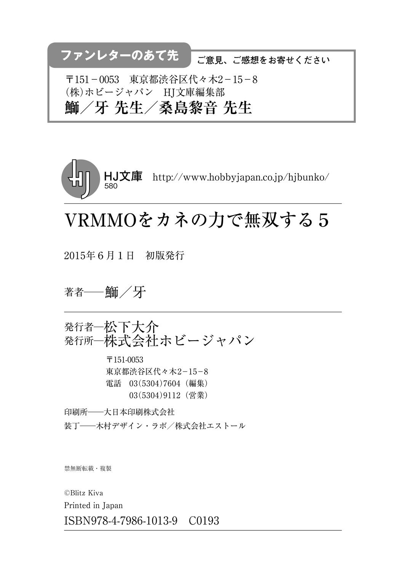